GM 工作台閱讀／列印
Armour Astir: Advent · 回到閱讀介面
衝突回合與雙方勢力
The Conflict Turn
衝突回合
威權與義軍是《阿斯提爾魔鎧》每場遊戲的大勢力。威權壓迫、強大且霸道，目光瞄準整個世界，至少是這場遊戲發生的那一部分。另一方面，義軍（但願）懷有善意、意志堅定，卻也很可能分散、充滿矛盾，而且害怕。在玩家休整、照料傷勢、偷得珍貴片刻時，這些勢力也會於「衝突回合」中發展。
威權的結構
威權是一個單一實體，劃分為各部門，並由穩定度維繫。規則上，部門包含：
- 重要行動者或資產，保護部門免遭玩家角色傷害。
- 一項被動步驟：在衝突回合開始時自動提供的好處。
- 代威權掌控的支柱，每個部門 3 個。
- 在衝突場景獲勝時，可選擇的成果。
後兩項由部門類型決定；下一頁有選項，也儘管自行創造。選擇 3 個部門，替各自命名，並訂出它們在效力威權時追求的目標或理想。這些理想可能與其他部門，甚至整體威權衝突。
若想以超過 3 個部門進一步定義威權，記住：部門越多，每回合衝突場景也越多。如果不增加義軍派系，部門就很容易讓派系耗竭，令派系難以抵抗；這也會增加衝突回合的複雜程度。
此外，威權並非一成不變。起始部門可能遭取代或崩解，不必覺得最初這一組就是你唯一能玩的部門。
部門實力與擲骰
各部門並不平等。每個威權都有一個比另外兩個更強、更重要的部門：一個主要部門（5+），以及兩個次要部門（4+）。實力會影響玩家在衝突場景與「籌畫與準備」中的擲骰。衝突場景中，對抗主要部門時擲出 5+，義軍就成功；對抗次要部門時，4+ 就成功。若義軍未成功，則威權成功。
穩定度
即使最殘酷、內鬥不休的小帝國，也有某種內在平衡或慣性，讓它不致分崩離析；穩定度代表的就是這點。威權起始有 9 穩定度；支柱被推倒時便會損失穩定度。若導演認為某次出擊特別成功、雄心勃勃，也可以因此降低穩定度。
- 穩定度 6 以下：玩家「籌畫與準備」的起始骰由 1d6 改為 2d6。
- 穩定度 3 以下：衝突回合開始時，一個派系解除耗竭。
- 穩定度 0：威權再也無法維繫自身。該將它徹底打散了。
導演筆記
主要與次要部門贏得衝突場景擲骰的機率分別為 2/3 與 1/2，因此衝突回合預設稍微偏向威權。這是因為「籌畫與準備」讓玩家角色能透過成功出擊降低部門實力。當局勢開始偏向義軍，那是玩家爭取來的，而非威權莫名其妙地無能。
威權部門類型
軍事（Military）
重心：部署兵力，以暴力攻擊或防守。
每回合：獲得 3 保留點。下次出擊期間，每花 1 點可選一項：
- 引入一項新威脅。
- 迫使某人在絕境中行動。
軍事部門贏得衝突場景時，選一項：
- 奪取一個具有 3 掌控的派系。
- 威權對一個派系或支柱取得 1 掌控。
- 一個脆弱或暴露的資產或行動者獲得強化，或被隱藏起來。
諜報（Subterfuge）
重心：部署間諜或特務，秘密處理事務。
每回合：在自選的一個派系或支柱上放置 1 掌控。
諜報部門贏得衝突場景時，選一項：
- 奪取一個具有 3 掌控的派系。
- 威權得知一項關於義軍或某派系的秘密。
- 導演可在本回合的一個衝突場景中強制重擲一次。
資源（Resource）
重心：累積財富、情報與人員。
每回合：開始一項部門陰謀，或將既有的一項推進 1 格。
資源部門贏得衝突場景時，選一項：
- 衝突回合結束時，可以重新分配哪些部門為主要或次要。
- 下次出擊遭遇變故：「率領出擊」承受劣勢。
- 導演在下次休整多拿 2 枚代幣。
研究（Research）
重心：開發新的附魔與儀式。
每回合：導演可在本回合的一個衝突場景中強制重擲一次。
研究部門贏得衝突場景時，選一項：
- 威權得知一項關於義軍或某派系的秘密。
- 威權開始一項新陰謀，或推進一項既有陰謀。
- 導演在下次休整多拿 2 枚代幣。
典藏（Curator）
重心：偷竊、調查不屬於自己的東西。
每回合：開始或推進一個名為「拿走不屬於自己的東西」的 4 格時鐘。
典藏部門贏得衝突場景時，選一項：
- 威權開始或推進一個名為「拿走不屬於自己的東西」的 4 格時鐘。
- 威權開始一項新陰謀，或推進一項既有陰謀。
- 一個脆弱或暴露的資產或行動者獲得強化，或被隱藏起來。
行政（Executive）
重心：保護並深化控制體系。
每回合：潛越、欺騙或顛覆威權的維安與官僚體系時，必須在絕境中行動。
行政部門贏得衝突場景時，選一項：
- 下次出擊遭遇變故：「率領出擊」承受劣勢。
- 威權開始一項新陰謀，或推進一項既有陰謀。
- 導演可在本回合的一個衝突場景中強制重擲一次。
導演筆記
派系被奪取時會怎樣？和往常一樣，敘事細節由你們決定。規則上，這個派系從義軍移除。除此之外，特定角色的命運、遭奪取的情況等等，都由你們決定。
同樣地，支柱被推倒時，我們假設義軍取得了讓它重要的那個關鍵。也就是說，敘事上不必掌握整座城市或整個區域才能奪取它，只要拿下讓它在局勢上成為支柱的那一小部分就行。
掌控、部門陰謀與部門覆滅
掌控（GRIP）
掌控粗略衡量威權對派系或支柱的影響力，包含軍事占領、施壓，以及外交官與間諜的干預。威權尚未控制的派系上若有 3 掌控，就能透過衝突場景將其奪取；威權控制的支柱上若有 0 掌控，義軍就能解放它。
所有派系起始為 0 掌控，所有支柱起始為 3 掌控。
部門陰謀
部門能利用衝突場景的成果，逐步開始並完成長期計畫。這些陰謀一旦完成，應為威權創造巨大優勢；若不盡快處理，就可能讓戰局徹底倒向威權。威權也可能以長期計畫建造新的支柱——無論是字面意義或其他方式——恢復部分穩定度。
陰謀不必都是慢慢建造一件重大關鍵物品。它可能是擬定一次決勝軍事攻勢的計畫、逐漸集結預備兵力以展開勢不可擋的進攻，甚至是威權內部的政治動盪逐漸平息，使其真正力量得以協調運作。
被摧毀的部門
部門若在衝突回合中遭摧毀或解散，會在下一個衝突回合結束時，由另一個不同類型的部門取代。新部門成立前，舊部門所有支柱暫時視為 0 掌控，可用派系成果推倒，或透過「籌畫與準備」安排出擊推倒。新部門繼承舊部門尚未倒下的支柱。
此外，若舊部門原為主要部門，新部門改為次要部門，另一個部門升為主要部門；威權內其餘集團會奪取或竊走覆滅部門的資源與恩寵。調整完地位後，以簡短片段呈現新部門成立的模樣。
陰謀範例
解封君主陵墓（Unsealing the Sovereign Crypt）
王位宣稱者 Goze 打算開啟君主陵墓，將裡面的東西作為另一場儀式的燃料。
哀悼的終結（The End Of Mourning）
上一任女皇的哀悼期一結束，剩餘繼承人勢必在內戰中釋放集結已久的兵力。
束縛 Northspine 山脈的暴君（Binding the Northspine Mountains Tyrant）
Northspine 山脈的暴君，是一頭極度狡詐的綠龍。如果能讓牠服從，就會成為 Kyrgain 軍隊的絕佳顧問。
失寵與威權勢力
失寵
部門並非完全自成一國。它們是威權的一部分，必須在一定程度上為維護威權價值負責，不管那些價值多麼可怕。無法服從又交出成果的部門，會因失寵而顯得格格不入。部門做出讓主子失望、蒙羞或感到不敬的事時，該部門的失寵增加 1。又或者，一個部門做出讓另一部門顯得無能或不忠的事時，後者的失寵增加 1。
同樣地，部門的行動若令主子刮目相看，或提升了其眼中的地位，就降低 1 失寵。這應是值得注意的大事，而非只是動作成功。信任容易失去，卻難以挽回。
規則上，任何有 10 以上失寵的部門，只要另外兩個部門願意，就能在衝突回合開始時遭移除。不必採取行動或擲骰，但要擲硬幣：
- 正面：目標部門遭罷黜，轉為一個已耗竭的游離者派系。不同類型的新部門立刻補上；畢竟 10 失寵通常不是一夜累積的，其他人早就在運作了。
- 反面：目標部門解散，混亂地被其他威權部門吸收。不同類型的新部門於下一次衝突回合開始時補上。在那之前，舊部門所有支柱暫時視為 0 掌控，可用派系成果推倒，或透過「籌畫與準備」安排出擊推倒。
扮演衝突回合場景，或在其他時候描繪威權角色時，應透過部門的失寵狀況，表現角色對它們的想法與感受。這也可能影響出擊：失寵深重的部門可能得不到證明自己的珍貴機會，或反過來抓住每個機會，試著在主子眼裡挽回一點價值。
威權勢力
整體而言，威權的士兵與資產遠多到不值得逐一追蹤。我們只記錄關鍵人物與事物，也就是對部門運作至關重要的推手。大致上，威權與各部門使用的重要東西，不是行動者就是資產。行動者是一個人或一小隊人，能出現在畫面中威脅玩家。他們和玩家一樣承受風險與險境；若出擊途中撤退，也可能帶著險境離開。資產是對威權有用的物品或場所，可以是糧食、衣物等簡單補給的庫存，也可以是一整座堡壘或基地。數量沒有嚴格限制或定額。這不是需要追蹤威權財務與兵力的消耗模擬遊戲，但行動者與資產很重要。
當部門失去的行動者或資產數量，等於或超過其實力——主要部門為 5+，次要部門為 3+——該部門就變得脆弱。脆弱部門能在衝突回合中被摧毀，或因出擊而覆滅，讓玩家對威權造成真正的傷害。
當然，玩家遇見的每個敵人或物件，未必都是行動者或資產。從威權基地後門潛入、射倒一名守衛，並不會讓整個基地明顯更接近崩潰。把這個稱呼留給確實重要的東西。
身為導演，應想想行動者遭擊敗、資產被摧毀後會怎樣。精銳阿斯提爾小隊的軍官戰死後，他們會轉而服從另一位軍官，還是因為效忠的是那個人，而非整體威權，因此離去？失去三架實驗型阿斯提爾後，Second-Hand Fortune 的艦長會獲派新單位，還是被降級到同僚麾下？但別覺得每個行動者或資產都必須事先寫好宏大計畫。有時，當下做決定最有趣。
義軍的結構與派系
威權是一個組織成井然部門的單一實體，義軍則是不同派系團結在同一面旗幟下。派系代表構成義軍的較小團體與行動。我們只需記錄領袖、簡短介紹，以及類型。每種類型附有一項成果，代表它們在衝突回合成功時會做什麼。
派系在衝突回合的主要作用，是參與衝突場景，並依骰子結果採取自己的行動。抵抗方式與提供的成果，都由類型決定。
每個部門應有 2 個派系，所以預設是 6 個。若修改遊戲、增加部門，也要增加派系來維持平衡。你也可以把幾個派系合併成一個較大的派系，讓它能耗竭多次，見下文。
耗竭的派系
派系不能無限支援。衝突場景中，它們可能因耗費人力、補給或革命熱情而耗竭。耗竭就表示暫時用盡力量，或無法出動。它們仍可採取會令自己耗竭的行動，但代價是永久犧牲自己：剩餘成員四散、資源流失等等。每個衝突回合通常有 3 個派系耗竭；玩家若願意，在休整時很容易補回來，但若置之不理，就會迅速累積。
解除耗竭後，派系就能照常抵抗部門場景。派系通常不會自行解除耗竭；玩家須透過「籌畫與準備」在出擊中的行動，以及特定休整場景，來解除它們的耗竭。
玩家所屬派系在衝突回合與其他派系相同，可能耗竭、解除耗竭或遭摧毀。如果遭摧毀，玩家應考慮另找一個派系加入。
派系被摧毀後，可建立新派系補上。供應者派系的成果能做到這點；它也可能是出擊、長期計畫的目標，或在幾次遊戲的幕後逐漸發生。
派系類型、抵抗方式與成果
| 類型 | 抵抗方式 | 成果 |
|---|---|---|
| 游擊隊（Guerrillas） | 伏擊與分散兵力 | 使某個特定資產或行動者以某種方式變得脆弱或暴露。 |
| 特務（Agents） | 暗殺與諜報 | 干擾威權，移除某個派系或支柱上的 1d3 掌控。 |
| 盜匪（Bandits） | 搶劫與破壞 | 一個陰謀時鐘減少 1 格，並讓一個有利時鐘增加 1 格。 |
| 蹂躪者（Despoilers） | 不必要且不精準的武力 | 所有陰謀時鐘減少 d6 格；下次休整時，每位玩家少拿 1 枚代幣。 |
| 學者（Scholars） | 巧思與好奇心 | 關鍵情報讓隊伍下次「率領出擊」獲得優勢。 |
| 供應者（Suppliers） | 新裝備或補給 | 替補一個遭奪取的派系，或解除另外任意兩個派系的耗竭。 |
| 煽動者（Firebrands） | 宣傳與外交 | 自選一個部門，失寵增加 d6。 |
| 軍隊（Military） | 直接攻擊與武力 | 推倒一個 0 掌控的支柱，或摧毀一個脆弱部門；擲硬幣，反面時該部門轉為游離者派系。 |
| 異類（Strange） | 怪異而無法解釋的事物 | 發生出乎意料且奇怪的事情。 |
| 冒險者（Adventurers） | 大膽行動與難以預測的戰術 | 將部分戰利品送到母艦：擲硬幣，正面為「值錢」，反面為「珍寶」。 |
派系範例
每張範例派系卡都有「耗竭？」與「掌控」欄位。
鋼鐵馬戲團（The Iron Circus）——供應者
鋼鐵馬戲團以鋼甲飛船為基地，製造並修理魔法構裝體。他們不是井然有序的工作隊伍，卻快速、可靠而忠誠。
Syl 的阻截者（Syl's Stallers）——盜匪
由 Syl Sarna 領導的阻截者，專精於讓構裝體停下腳步。他們使用能消除附魔的實驗護手，潛入運送增援的隊伍，讓裡面的構裝體根本無法啟動。
Allington 商人協會（Allington Merchant's Association）——供應者
通常簡稱 Allington 協會，掌握大量資本，十分願意冒險支持更傾向革命的客戶。
河流騎士（The Riverknights）——游擊隊
這群戰士駕駛特製附魔的水行亞登特，迅速穿梭河流與運河。他們經常襲擊船艦或碼頭防禦工事，再像抵達時一樣迅速撤退。
樹皮匠（The Barkwrights）——軍隊
儘管資源匱乏、人力捉襟見肘，樹皮匠早已因阻止濫伐而聞名。他們成功的祕密，是能把血肉與活木結合的古老變形魔法，讓他們即使受到可怕重傷也能復原。
哀歌盟（League Lament）——特務
一群年長巫者組成的巫團，透過長期反覆詛咒目標策劃暗殺，最終讓目標死於在旁人看來極度倒楣的意外。迷信的人常把自己遭遇的任何不幸，都怪到哀歌盟頭上。
門扉會（The Door Society）——煽動者
白天是鎖匠，晚上是革命者。門扉會以揭露緊閉門後的勾當為專長。所有鎖都能撬開；如果鎖就是你做的，那就容易多了。
支柱
支柱是極為重要的場所、人物或物品，讓威權得以持續扼住遊戲發生的地方。每個支柱對應 1 點穩定度，並由一個部門控制。戰役開始時，決定每個支柱歸哪個部門控制。每個部門對自己所轄的每個支柱，起始都有 3 掌控。
支柱倒下時，那點穩定度也隨之失去，威權因此更接近崩潰。支柱倒下後，威權會收縮整合：圍繞剩下的東西重建力量，而非試圖奪回失去的東西。它無法重新取得倒下支柱的掌控；那些已經失去了。威權總要等到崩潰無可避免時，才看得見自己的末日。
橫跨全球的大型戰役中，支柱可能是整個國家、首都，或影響力巨大的外交官與領袖；較小的戰役中，可能是城市、城鎮與魔法秘器。不管哪種，都別掉入只考慮軍事重要性的陷阱。具有歷史、文化、精神或生態重要性的場所與事物，同樣適合。畢竟，它們代表玩家與派系奮戰、希望保護或從威權魔掌解放的人民與未來。
當然，支柱不只是用來爭奪的。從威權手中解放後，多半仍偶爾需要義軍關注。玩家若願意，應允許他們投入支柱的未來。玩家可能修復威權突襲或占領造成的破壞、協助關鍵人物規畫地區未來，或協助封印、保護、修理重要遺物。這些都可能在休整中進行，也可能成為出擊與任務的重點。
玩家可以依意願與支柱建立引力時鐘，但支柱本身沒有數值或動作。即使小型社群，也難以用真正有代表性的方式編成規則。導演可把威權行動者或資產與支柱關聯起來，例如占領軍、母基地等等。
導演筆記
為什麼威權不能奪回支柱？這是為了避免支柱反覆易手，讓遊戲變成永無止境的拔河。玩家推倒支柱時，就是有意識地選擇，讓戰役與威權更接近終局。
義軍與玩家可以逐一削減支柱的掌控，直到暴露後奪下；也可以集中攻擊部門。後者較費力，卻能創造暫時窗口，讓他們接連推倒多個支柱。確保他們明白，兩種選擇都可行！
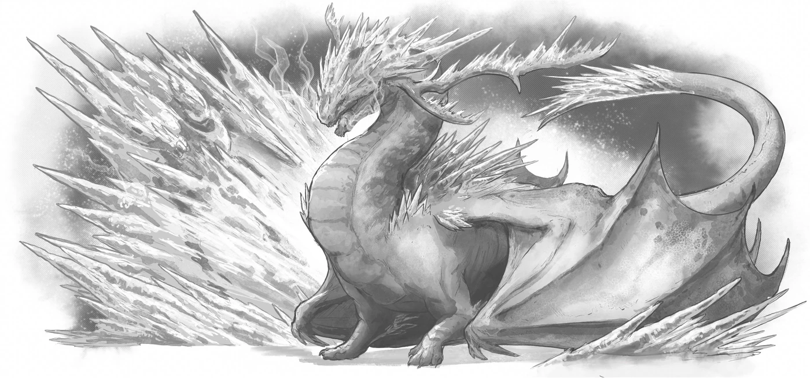
游離者與衝突回合的進行
游離者
有時部門遭難堪罷黜，或敘事需要，會出現既不屬威權、也不屬義軍的有力團體。這些第三方有時一直都在場邊，等著出手的時機。
游離者派系沿用義軍派系規則：有類型與成果，也能在遊戲中耗竭或解除耗竭。但不同之處是，它們可以選擇對抗義軍而非威權：讓自己耗竭，強制衝突場景中的一次失敗；或更廣泛地，在出擊中耗竭以支援威權。游離者派系通常因導演動作而解除耗竭。
進行衝突回合
衝突回合中，大家一起扮演場景，描繪義軍抵抗威權與其企圖的掙扎，或依自己的方式讓威權吃點苦頭。每個場景中，選擇「挑戰」來添加細節，其中一些涉及擲骰；再依擲骰結果選擇場景的「收束」。可以全體玩家一起玩，也可以只有部分人，甚至能讓完全不同的一群玩家，進行某個戰役的衝突回合！
衝突場景中，你可能暫時扮演威權或義軍成員，也可能偶爾讓自己的平常角色登場。不必事先創造角色，但若不擅長臨場發想，預先準備會有幫助。
衝突回合的角色不需要扮演書或特質。只要大致知道他是誰、長什麼樣、想要什麼就夠了。某些場景可能讓角色被俘或死亡，所以要慎選投入的人。扮演比較捨得失去的角色也沒有問題；重要的是他們做了什麼。
衝突回合有三個步驟：
- 選擇場景，以及參與的部門與派系。
- 提出挑戰、擲骰，演出場景。
- 比較義軍與威權的成功次數，收束場景。
步驟 1：選擇衝突場景
每個回合進行三個衝突場景，各由一個威權部門主導，或以其為目標。部分場景會讓所有人輪流選挑戰；這時可能有些玩家輪不到，應優先讓有興奮構想的人提出。
選擇場景時，決定涉及哪個部門，並使一個派系耗竭，代表義軍在場景中的努力或利益。若它已耗竭，就會被摧毀。如果沒有未耗竭的派系，或你就是不想讓任何派系耗竭，可以略過：仍然演出場景，但到了收束時，部門自動獲勝。
步驟 2：演出場景
每個場景都有自己的設定與演出指示，說明玩家扮演誰、正在做什麼；也各有挑戰清單，讓包含導演在內的玩家彼此提出，其中部分要求擲骰。擲骰時，擲一顆 d6：結果等於或高於部門實力，義軍成功；低於實力，部門成功。記錄場景中累積的成功與失敗次數。玩家若願意，可讓一個派系耗竭，跳過一次擲骰並增加一次成功。這麼做時，敘述另一派系如何突然介入協助，以及可能的代價。
導演筆記
派系成功的關鍵，是在對抗行動時團隊合作、維持統一陣線；游離者自然會干擾這點。那麼，是什麼團結了游離者派系？它們想要什麼？若有興趣在遊戲中聚焦游離者，就應想清楚這類問題。
收束衝突場景與成果
步驟 3：收束衝突場景
所有挑戰都演出完畢，就該收束場景。比較擲骰的成功與失敗次數：成功較多，義軍就從場景中獲得勝利或某種優勢；失敗較多，則由部門勝出。平手時，全體一起詮釋結果；若不確定，就擲硬幣。
無論誰勝出，大家共同選擇一項符合場景事件與勝負的收束。勝方敘述自己如何回答收束的問題，並選擇因此獲得的一項成果。需要時，儘管快轉時間，呈現場景帶來的影響。
演出衝突場景時，把它們視為戰爭整體事件的短暫閃現，保持簡短俐落。這是讓平常少有機會登場的人物短暫亮相的好機會。
最後，衝突回合的事件應在敘事中傳達給玩家角色。休整自然是透過報紙與其他媒體報導、相關人物轉述等方式傳遞情報的好時機。
衝突成果
衝突場景結束後，勝方可以選擇一項成果。若威權獲勝，全體可從該部門類型列出的選項中選擇。若義軍獲勝，則可選擇該場景涉及的任一派系，取得它的成果：包含最初「防守」的派系，以及任何為跳過擲骰而耗竭的派系。
若心中已有特定成果，可以刻意圍繞它架設衝突場景，但不必事先承諾選哪一項。
導演筆記
部門被摧毀或改變，是件大事。確保玩家適切地看見並感受到影響；除非刻意安排重大驚喜，否則應試著事先把該部門走下坡的狀況融入敘事。
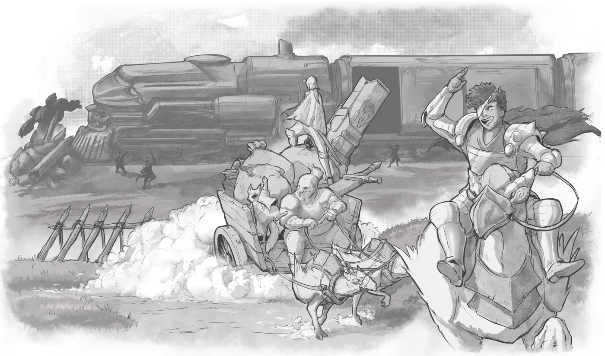
衝突場景
Conflict Scenes
衝突場景：計畫與秘密行動
逐漸展開的計畫（An Unfurling Plan）
所有人參與，扮演威權成員、策畫某種邪惡計畫，或扮演義軍成員、設法阻止該計畫。一起決定會議在哪裡舉行，還有誰在場。你們各扮演誰？彼此有什麼過往？
對話中，任何人都能詢問任何其他人，補充局勢與情境的細節。
演出場景
玩家自由扮演，提出挑戰，讓場景升溫、變得複雜。持續到至少擲骰三次，或場景感覺自然結束；可參考下方收束，了解結尾可能的模樣。
場景中，任何人都能提出挑戰：
- 我拿出證據，指出我們之中有間諜：擲骰，看大家是否認真看待。
- 我指出情報的盲點：我們要重新投入資源，讓一個有利時鐘減少 1 格，還是擲骰冒險？
- 計畫裡有一個步驟尚未完成：誰要擲骰、提出解方？
- 我的小隊或團體渴望貢獻力量。誰來給我們方向？
- 向我解釋，這如何代表威權／義軍的理想。
- 你的計畫如何更有益於平民？
- 我猶豫著不想投入資源：誰要擲骰、試著說服我？
收束
- 達成共識：誰受益最多？
- 未達協議就散會：誰會獨自行動？
- 會議陷入爭吵與衝突：誰最覺得受到怠慢？
秘密行動（A Covert Op）
所有人參與。導演扮演各種威權或義軍角色，其他玩家則扮演敵對一方的特務。討論正在執行什麼臥底行動，以及失敗會怎樣。
你們是誰？屬於部門的哪一部分，或與哪些派系有關？為何選你們執行？你們對任務有什麼看法？
演出場景
玩家自由扮演，提出挑戰，讓場景升溫、變得複雜。持續到至少擲骰三次，或場景感覺自然結束；可參考下方收束，了解結尾可能的模樣。
場景中，任何人都能提出挑戰：
- 魔法陷阱擋住去路。要慢慢繞道，還是擲骰拆除？
- 嚴密巡邏的守衛眼看就要逮到你們。擲骰，看能否躲過。
- 必須迅速、安靜地解決一名哨兵：誰要擲骰動手？
- 情報原來不正確：錯在哪裡？你們如何臨機應變？
- 你們找到能俯瞰某項祕密的位置：描述它。
- 得有人分頭行動、充當誘餌。誰去？擲骰，看成效如何。
- 計畫突然改變：擲骰，看是變好還是變糟。
收束
- 特務被發現、身分暴露：他們還逃得掉嗎？
- 特務未被逮到、成功脫身：他們如何慶祝？
- 特務犧牲自己完成職責：值得嗎？
衝突場景：全面戰爭與追逐
全面戰爭（All Out War）
所有人參與。盡可能平均分成威權與義軍兩邊，扮演士兵、引導者，以及部門或派系的其他成員。導演可以視需要自由扮演雙方角色，協助場景進行。共同決定戰場在哪裡、此戰的利害，以及這些角色如何看待戰爭和自己的位置。
自由扮演雙方交戰，阿斯提爾對阿斯提爾、母艦對母艦等等。戰鬥中，任何人都能詢問任何其他人，補充局勢與情境的細節。
演出場景
玩家自由扮演，提出挑戰，讓場景升溫、變得複雜。持續到至少擲骰三次，或場景感覺自然結束；可參考下方收束，了解結尾可能的模樣。
場景中，任何人都能提出挑戰：
- 我備好武器，直接朝你攻來：擲骰，看你能否擋住我。
- 我率領出其不意的伏擊，並擲骰，看有沒有打你措手不及。
- 我將你與支援兵力分隔：擲骰，看你能否重新會合。
- 你接到撤退命令。你服從嗎？
- 我似乎露出破綻：若把握機會，就擲骰，看這是否佯攻。
- 我們的戰鬥危及一群平民。如果你不願收手，就擲骰。
- 你能付出代價、完成一項關鍵目標。你會失去什麼？若願意放棄它，不必擲骰，直接增加一次成功。
收束
- 一方被迫潰逃：他們逃跑時遭到殺戮嗎？
- 達成休戰：條件是什麼？
- 明天戰鬥仍會持續，但一次精彩推進贏得今日勝利：確保拿下了什麼？
一場追逐（A Chase）
兩位自願者參與，一位追獵，一位被追。他們共同決定誰扮演威權成員、誰代表義軍，追逐以什麼層級進行，例如徒步或駕駛阿斯提爾，以及為何發生。決定地點，以及場面失控時誰會有危險。
自由扮演追逐。過程中，任何人都能詢問任何其他人，補充局勢與情境的細節。其他玩家可依需要扮演旁觀者、環境等等。
演出場景
由追獵者開始，輪流提出挑戰。持續到至少擲骰三次，或場景感覺自然結束；可參考下方收束，了解結尾可能的模樣。
場景中，任何人都能提出挑戰：
- 我引你掉進陷阱。擲骰，看你能否逃脫。
- 我們短暫靠近，我傷了你：你如何把我推開？
- 我們衝過危險區域。你要慢慢來，還是擲骰追趕？
- 我使用某種魔法取得優勢。發生什麼事？
- 我突然爆發出速度：擲骰，看你能否跟上。
- 我溜進繁忙擁擠的地方。你要橫衝直撞、引起騷動，還是擲骰另找一條路？
- 你轉過街角，看不見我了。你如何找到我？
收束
- 我們走進死路。被追的人還逃得掉嗎？
- 逃生路線近在眼前：追獵者能及時追上嗎？
- 第三方介入：他們站在哪邊？
衝突場景：一對一與議論
一對一（One-on-One）
兩位自願者參與，彼此陷於衝突。他們共同決定誰扮演威權成員、誰代表義軍、決鬥採取什麼形式，以及利害為何。
決定決鬥地點，以及場面失控時誰會有危險。
自由扮演決鬥。過程中，任何人都能詢問任何其他人，補充局勢與情境的細節。其他玩家可依需要扮演旁觀者、環境等等。
演出場景
由可能失去最多的人開始，輪流提出挑戰。持續到至少擲骰三次，或場景感覺自然結束；可參考下方收束，了解結尾可能的模樣。
場景中，任何人都能提出挑戰：
- 我似乎短暫露出破綻。你要擲骰、冒險攻擊嗎？
- 我亮出出乎意料的新武器。擲骰，看你能否適應。
- 我們暫時僵持不下：你對我說什麼？
- 我使出華麗而多餘的一招。你讓我炫耀嗎？
- 攻防之間，我想索取片刻親密，例如一個吻。你讓我靠近嗎？
- 你的盟友出現。你允許他們介入嗎？
- 我把你和這場戰鬥逼往新地點。擲骰，看你能否在這裡找到優勢。
- 我的攻擊危及無辜。你願意擲骰，確保他們安全嗎？
收束
- 我將你逼退到可以逃跑的位置。你逃，還是留下？
- 我們勢均力敵。你願意冒點風險擊倒我嗎？
- 你的本領無庸置疑。我能說服你加入嗎？
議論（The Discourse）
所有人參與，扮演威權、義軍，或兩方成員，呈現重要人物之間的討論與政治交際，可能是閒談，也可能另有目的。任何人都能在場，但要擲骰；若部門成功，仍須使一個派系耗竭，只要這麼做不會摧毀它。議論可是很累人的。共同決定談話在哪裡發生、還有誰在場，以及參與者之間的權力關係。
對話中，任何人都能詢問任何其他人，補充局勢與情境的細節。
演出場景
玩家自由扮演，提出挑戰，讓場景升溫、變得複雜。持續到感覺自然結束。「議論」結束後沒有贏家或輸家，也不會取得成果；大家只需一起選擇一項收束。
場景中，任何人都能提出挑戰：
- 我說了侮辱上級或有影響力人物的話。誰反應最激烈？
- 我追問某人對某件事的看法。你誠實回答嗎？
- 我盛裝登場，驚豔全場。吸引了誰的目光？
- 我輕佻地談論我們的職責。有人訓斥我嗎？
- 我發表對另一部門或派系的看法。吸引了誰的注意？
- 我對某人說句調情的話。有打動對方嗎？
- 我公開質疑目前的行動方向。誰能讓我安心？
- 我提議帶某人到一旁跳舞、私下談話或做其他事。邀請被接受嗎？
- 我對我們的未來說了充滿希望的話。有人能真心支持嗎？
- 我說得太露骨，或透露太多私事。有人追問嗎？
收束
- 某人或某事打斷討論。是誰或什麼，為什麼？
- 我們的談話被偷聽：被誰？
- 我們之中一人說了後世回望時會視為預言的話：是誰，說了什麼？
「忙碌甲蟲號」物資清單
Port Huginn 威權，YA230，軍需官 Luis。
| 數量 | 物資 |
|---|---|
| 1 | HERCULES 級阿斯提爾，「Dire Dismissal」 |
| 2 | STAG 級阿斯提爾，「Fair Lady」與「Florence」 |
| 4 | SHIELDBEARER 亞登特，未命名 |
| 90 | 標槍，鋼製槍尖 |
| 10 | 標槍，鋼製槍尖，附有穿甲魔法 |
| 1 打 | 長矛，鐵製矛尖 |
| 1 打 | 十字弓，木製結構、皮革綁帶 |
| 180 | 弩矢，每袋 15 支 |
| 3 | 急發步槍（snap-rifles），有執照，製造工匠不詳 |
| 9 指 | 煉金紅寶石，中等品質，充能完畢 |
| 50 | 蜂蠟蠟燭 |
| 18 | 黃銅提燈 |
| 18 瓶 | 燈油，每瓶 1 品脫 |
| 4 桶 | 燈油，每桶 1 加侖 |
| 13 磅 | 銀粉 |
| 1 磅 | 鑽石粉 |
| 3 磅 | 元素火焰，鹽類形態 |
| 7 | 治療靈藥，每瓶 6 液量盎司 |
| 2 箱 | 各式繃帶與藥膏 |
| 6 大桶 | 水，每桶 10 加侖 |
| 6 箱 | 包裝口糧 |
| 8 包 | 新鮮水果，密封 |
| 1 桶 | 醃魚 |
| 1 條 | 巧克力，4 盎司 |
| 1 箱 | 無標示，密封，具有防占卜屏障 |
——摘自《忙碌甲蟲號航行日誌》（Flight Log Of The Busy Beetle），多位作者。首篇紀錄 YA211，末篇 YA231，於 YA233 尋獲。
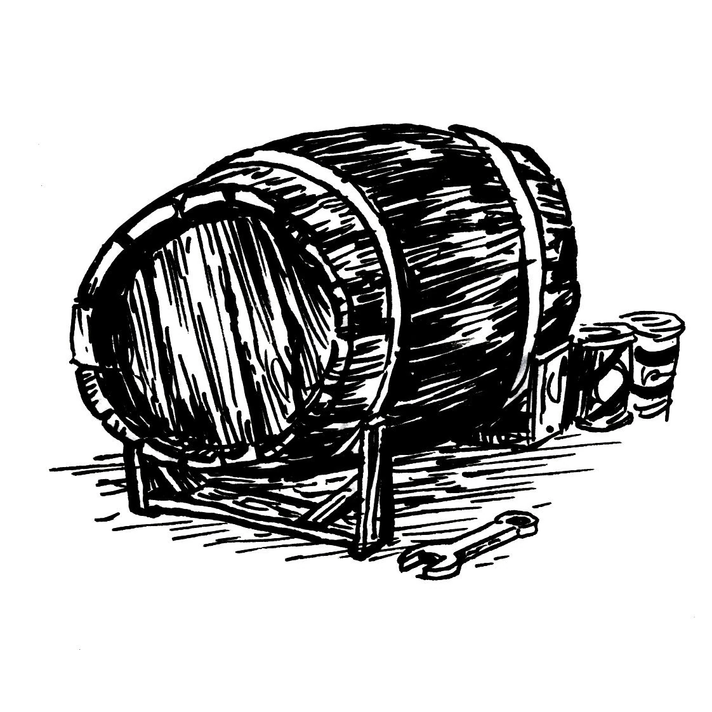
插畫：巨型甲蟲載具與同行者
本頁為無文字插畫：一艘巨型甲蟲狀的飛行載具展開翅膀，下方站著數名人物，遠處天空可見飛鳥。
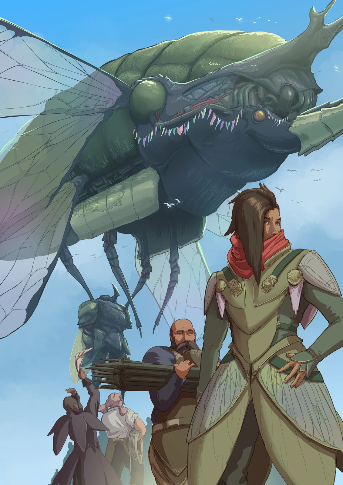
主持遊戲
Running the Game
主持遊戲
身為導演，你首要的工作是協助遊戲順利進行。為此，你有一套議程與原則，引導你的決策，幫助你判斷什麼才符合遊戲精神。需要採取動作時，導演動作會提供明確選項，協助你引導情節。這一章也簡介安全工具；不過，我鼓勵你自行深入了解，找出適合你們的工具。此外，這裡也提供敵人範例、創造與玩家對抗之角色的指引，以及宿敵的說明。
議程
主持《阿斯提爾魔鎧》時，有些事值得你努力追求，那就是你的議程。當你進行「替朋友主持一場好玩遊戲」的神聖儀式時，請把它們當成信條。
- 描繪一個深陷衝突的世界。
- 讓玩家能夠改變局面。
- 透過遊玩，探索接下來會發生什麼。
原則
此外，你還有一套原則。決定採取什麼動作時，請把它們納入考量；不確定某個想做的動作是否合適時，也可以拿來參照。
- 讓衝突具有分量。
- 從虛構情境出發，也回到虛構情境。
- 有時，以言語作戰。
- 對角色說話，而非對玩家說話。
- 建構多元的世界。
- 提問，並採用答案。
- 不出拳，就無從收力。
- 在鏡頭外採取動作。
- 保持魔法色彩。
讓衝突具有分量
在《阿斯提爾魔鎧》中，衝突以某種形式觸及每個人。呈現世界與其中的人們時，想想衝突對他們造成什麼影響，又讓他們被捲入什麼事。讓玩家面對自身行動的後果，提醒他們：鬥爭之中，邊緣化的人們往往受害最深，即使大家對抗的事物，看起來並沒有直接針對這些身分。
和某些戰爭遊戲相比，《阿斯提爾魔鎧》較少強調殘酷寫實與前線士兵的視角，但這絕不是忽視受害最深之人的理由。那些人遭排除在權力結構之外，而這些結構又在他們缺席的情況下延續衝突。請認真考慮他們。別忘記那些你的威權巴不得大家遺忘的人。
從虛構情境出發，也回到虛構情境
採取動作時，先交代虛構情境，讓動作在故事中站得住腳，再說明規則上的結果。接著回到故事，呈現這些結果在虛構情境中造成的後果。替玩家做好示範：教他們先把行動說清楚，再用骰子判定，最後把後果接回故事。
有時，以言語作戰
戰鬥並不全靠刀劍。用言語與玩家交鋒，無論是當面說出的話，還是其他形式；有機會時，也提醒他們，有影響力的人不必踏上戰場，就能造成多大的影響。如果玩家也有興趣，就讓他們運用這股力量：以尖銳的侮辱瓦解敵人的氣勢，或寫一封大膽挑戰的信，贏得一位富有同情心的領主支持。畢竟，不是每個問題都最適合用武力解決。
導演原則：角色、多元與挑戰
對角色說話，而非對玩家說話
就你的立場而言，遊戲一開始，你就不再是和好朋友們坐在桌旁。左邊是奧術師 Cordelian，駕駛著他的 Lance-Minor 阿斯提爾；右邊是粗獷不羈的斥候 Rio；桌子另一頭正惡狠狠瞪著你的是巫者 Mire，他的獵鷹級阿斯提爾眼下少了一隻手臂。因此，和玩家說話時，確保你真正對話的對象，是那些典範、工匠與其他英雄。問 Mire 要怎麼做，而不是問玩家覺得 Mire 會怎麼做。這能幫助所有人專注在你們共同創造的虛構情境上。
建構多元的世界
戰爭龐大而血腥，既能橫跨大陸，也能延續漫長歲月。讓玩家從不只一種尺度，感受參與戰爭的後果。他們會投入小規模衝突，登上阿斯提爾，奉命迎擊敵人；同樣也要讓他們參與戰爭的整體體系，包括政治與組織運作，讓他們對自己所效力的義軍變得重要。如此一來，你就能讓更大規模的後果牽動他們；若他們想逃，也應發現這些親手建立的連結難以割捨。
同樣地，世界中的人所涵蓋的身分與經歷，遠比玩家及其角色可能呈現的更廣。描繪他們時，別忘記這一點，也別讓他們只是任憑威權欺壓、用來營造效果的受害群體。如果桌上有處於邊緣地位的玩家，而他們也有興趣，便留出空間，讓他們主導並掌握那些與自己共享經驗之人物的創作。若他們不想這麼做，你處理這些元素時一旦失誤，也應準備好聆聽並修改。
也請記得，人遭受邊緣化的方式，尤其涉及身心障礙時，不一定容易看見。想想身心障礙如何影響一個人的日常生活與慣例，周遭環境又如何加劇或緩解這些影響，即使其他人完全沒有察覺。決定角色如何行動、如何呈現在桌上時，都應記住這些事。描繪身心障礙角色，應付出和描繪因性傾向、性別或種族而被邊緣化的角色相同的關注與用心。
讓各種邊緣化群體在遊戲中都有自主性與目標，尤其當威權更希望他們消失時。我保證，這裡容得下我們。
提問，並採用答案
這個世界的共同虛構情境，是你和玩家合力建構的，所以也讓他們參與補充細節。詢問他們角色的事情，以及與角色有關的地點和概念。若你不知道某件事、缺少有趣點子，或只是想聽另一種觀點，隨時都可以改問玩家。對他們想貢獻的內容保持好奇，並使用他們提供的資訊，讓他們感覺自己的投入受到重視。這能減輕你的敘事負擔、讓故事更多變，也讓新事物進入故事時，你能像玩家一樣感到好奇與驚喜。
此外，身為導演，你經常會獲得代表威權或其他勢力行動的職責與動作。你可以隨時以自己喜歡的方式，把這些工作交給玩家，讓他們更投入故事的不同部分。
不出拳，就無從收力
在桌上，你們都是同一個故事的一分子。玩家是這齣戲的明星，所以給他們值得交手的對手，讓他們有主角的感覺。《阿斯提爾魔鎧》的角色有許多手段能讓勝算偏向自己，並迅速突破較弱的阻礙；因此，別怕在戰場上放滿目標，也別怕在適當時機派出強悍、壓迫感十足的敵人。玩家角色並不容易死去：「倒下」明確說明，即使失敗，也一定會有選擇。因此，與其從頭放水，讓大家覺得這回的威權毫無威脅，不如先打出重拳，再讓敵人撤退或被召離，留給自己收力的餘地。
導演原則：鏡頭外與魔法
在鏡頭外採取動作
也要記得：玩家與角色雖然重要，但並非每件事都在他們眼前發生。別怕在幕後採取動作、推動局勢，再於適當時機把結果呈現給整個團體。世界上有角色沒有參與的戰鬥，也有他們無權參與的討論與決策。提醒他們，世界比他們更廣大。
保持魔法色彩
最後，《阿斯提爾魔鎧》不只是關於機甲與駕駛員的遊戲。這是巨型魔法構裝體的遊戲：它們透過附魔武器互相投擲法術，以複雜儀式護身，由引導者提供能量。這些強大的施法者，其力量來自天賦、神力、異界影響，以及奧術秘器。別忘了這一點！
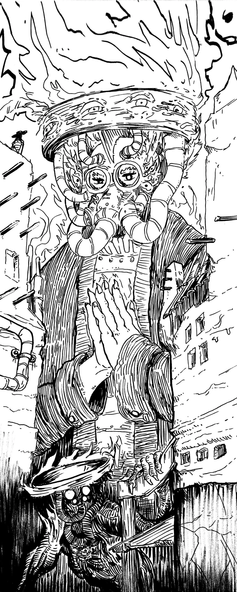
導演動作
就像玩家有動作，你身為導演也有動作，幫助你引導遊戲，釐清自己可以做什麼。玩家想做一件事時會觸發動作；你則在下列情況採取動作：
- 玩家進行某個動作，擲出 6 或以下。
- 玩家看向你，等待事情發生，或不知道該做什麼。
- 虛構情境表明某件事應該發生。
大致上，你能採取的動作包括：
- 展現明顯的威脅。
- 考驗引力的力量。
- 利用危難或標籤。
- 拆散他們。
- 讓他們陷入危難。
- 揭露新事物。
- 攻擊毫無防備的人。
- 啟動一個（神祕）時鐘。
- 提供帶有代價或後果的選項。
通常，採取動作後，你應該問「你怎麼做？」，把敘事接力棒交回玩家手上。
展現明顯的威脅
讓他們看見槍口，暗示接下來可能發生什麼，等等。把事物攤在桌上，讓所有人看清楚局勢，做出糟糕決定時，也能把這些資訊考慮進去。
「機庫門後傳來爆炸，一架帶灰色條紋的藍色阿斯提爾衝破煙霧，直奔你而來，長刀拖著白熱的能量。你怎麼做？」
「你避開視線，在柱子之間移動，一邊盯著大使。這時，一名護衛脫離了其他人的步伐，將手伸進外套。你怎麼做？」
「回到船上，Hargen，你看著構裝體感測器在兩個——不，三個位置急遽攀升。Wren 少尉調整靈敏度，轉向你：『兩架 Wolf，還有一架不明機體，正迅速接近。』你怎麼做？」
利用危難或標籤
以玩家承受的風險與險境，以及裝備上的標籤，作為對他們採取行動的切入點。
「他們比你預料得更快，從感測器受到干擾的那側衝上來。你勉強閃開，讓刀刃沒有貫穿駕駛艙，卻把阿斯提爾的整顆頭切了下來。把風險『失明』換成險境『失明』。你怎麼做？」
「你承受了風險『尷尬』，對吧？你正想離開，Cress 卻握住你的手腕，說：『你知道，我們不必在其他人面前談這件事。跟我來。』其他人離開時，她開始拉著你走。你怎麼做？」
「June 舉起盾牌，但她根本用不著。你啟動發射儀式，然後……什麼都沒發生。你的飛彈有 limited（數量有限）標籤，上一輪齊射已經是最後一批。你怎麼做？」
導演動作：危難與代價
讓他們陷入危難
玩家擲骰失敗，或讓自己暴露在傷害之中，都是藉由危難傷害他們的好時機。在眼前情境下要下多重的手，由你決定：直接讓他們陷入險境，比要求他們承受風險嚴厲得多；把一項風險換成險境，則是稍微仁慈一點的折衷。
「他猛然衝出你的攻擊範圍，退到安全位置，直接朝你射出一發射線步槍。你得承受一項風險才能避開。好，現在你怎麼做？」
「你暫時撐住了殘骸，但你的阿斯提爾並不適合這種工作。隨著雙臂開始彎折，你聽得見，也感覺得到零件互相摩擦、碾磨的聲音。承受險境『壓碎』。你怎麼做？」
「他們看起來完全沒被你的話打動。戴頭盔的傢伙看著你，見你嚇成這樣，便一直與你對視，慢慢將刀刃刺進受傷的衛兵體內。把風險『害怕』換成險境『驚惶失措』。你怎麼做？」
攻擊毫無防備的人
角色累積足夠的危難而變得毫無防備時，就真的成了靶心，暴露在可能迫使他們逃跑、喪命，或以其他方式退出行動的後果之下。有人毫無防備，就像水裡有了血腥味，人人都聞得到。
「Carryl，你往左一瞥，看見 Paldry 的阿斯提爾冒著煙，一動也不動。她毫無防備，只能驚慌地看著一架 Courser 衝上來，把長槍刺穿她的鐵殼。你怎麼做？」
「你試圖退開，但 Kett 就算付出生命，也不打算讓你離開。他果斷地揮動熱能斧砍向你。我需要你觸發『倒下』。你怎麼做？」
「群眾看著你，彼此交談，等你回應，但你找不到話可說。Second-of-Blades 再次露出得意的笑容，說：『慢慢來，引導者。我有一整天可以等著看，你的主張有多站不住腳。』你已經毫無防備，所以我需要你觸發『倒下』，看看你能不能保持冷靜。你怎麼做？」
提供帶有代價或後果的選項
當玩家問你該怎麼做某件事，或能不能做某件事，提供選項給他們；適當時，也說明伴隨的代價或後果。這能讓他們對你們共同創造的虛構情境，做出資訊更充分的選擇。
「當然，你可以試著把劍從他手裡搶過來，但要是搞砸，就會讓自己陷入非常危險的處境。」
「你用眼角瞥見那架紅色阿斯提爾脫離隊伍。你可以追，但你的機動附魔已經受損，真要追上，就得狠狠操你的阿斯提爾：你必須標記『過熱』。」
「你以魔法伸向剛才察覺的存在，在乙太之中摸索。隨著你離開身體越來越遠，你能感覺到感官逐漸暗淡，也知道再繼續下去，就可能徹底迷失自我。你還要繼續嗎？」
導演動作：引力、分離與揭露
考驗引力的力量
要求玩家做一個會動搖某個引力時鐘的決定，例如讓摯愛之人陷入危險，或讓信任的朋友提出難以答應的請求。時鐘填滿以前，他們不能更改時鐘，但你隨時都能採取動作，埋下懷疑的種子；或者反過來，強化這些關係。
「你正在仔細瞄準，卻從通訊中聽到 Function 正在和某人搏鬥。你和他有引力，對吧？你怎麼做？」
「Huller 騎士看見你要走，便離開其他人，擋在你和門之間。你的時鐘是『我們一對上眼就忍不住打起來』，對吧？你想的話，或許還是能從他身旁過去。你怎麼做？」
「Mishell 牽住你的手；如果你允許，她就走近你。她看起來真的很擔心，而且——她把一隻手放在你肩上，說：『Jess，我需要你相信我。我知道這看起來很難，但我知道你做得到。你準備好了。』你怎麼做？提醒一下，你和 Mishell 的時鐘是『一直互相照應』。」
拆散他們
簡單明瞭：引入某件事，把玩家分開，迫使他們無法合作，必須各自處理麻煩。
「Manchester，你們三個在走廊裡狂奔，你落在後面。Hold 和 Sander 已經到了前方走廊的盡頭，你正要追上，整棟建築卻震了起來。一架阿斯提爾倒退著撞穿建築，你前方的地板與牆壁隨之崩塌，一大片空間被摧毀，你和其他人也被隔開。你怎麼做？」
「你看著其他人把偷來的印記刷過水晶，升降機便載著他們往上。但輪到你刷的時候，水晶變紅，升降機反而開始下降。你知道下面那層有什麼，對吧？你怎麼做？」
「June，你及時加速衝出來，已經安全了。不過，Sear，你就沒那麼幸運。那架灰色阿斯提爾不只是刺中你：長槍穿過裝甲，把你釘在艙室內側。你聽得見巨型法術充能的嗡鳴，也看得見 June 正往遠處的安全地帶衝。你怎麼做？」
揭露新事物
向玩家揭露一件新事物，使他們的處境變得更複雜。
「好，好，這是個 6，但這裡其實不是你失敗。Lovesong 的駕駛艙伴隨洩壓聲打開，駕駛走了出來。Coln，簡直像在照鏡子。是你兄弟。你怎麼做？」
「你衝上前，朝踉蹌後退的 Hill 揮下斧頭，但他的防守其實沒有破綻。Lottie，那是假動作。他鑽過你的揮擊，把武器從你手中扯走。我會擦掉他的風險『暈眩』，而你要承受風險『遭到繳械』。你怎麼做？」
「一聲巨大的破裂聲響起，你們所有人——連不是引導者的人也一樣——都感覺到周遭空氣中的魔力瞬間增強。天空中，雲層裂開，Ophelian Engine 撕開界限，闖入你們的存在位面。你怎麼做？」
時鐘與安全工具
啟動一個（神祕）時鐘
啟動時鐘，代表某件事發生前的倒數、朝某個目標的進展，等等。替它命名，或讓它保持神祕：無論如何，滴答作響的時鐘會對玩家施加壓力，使他們預期即將到來的事。時鐘通常分成 4、6 或 8 格，但你也可以使用更大的時鐘，或把一件事拆成數個較短的時鐘。
你也應決定什麼會推進這些時鐘：它們會隨時間自行填滿？會在玩家動作失敗或忽視威脅時推進？還是玩家必須直接採取行動，才能使其前進？無論採用哪種方法，時鐘填滿時，都應是一件大事。每個人都應知道接下來發生了什麼。
安全工具
玩桌上角色扮演遊戲時，即使同桌的人彼此十分熟悉，仍可能出現讓玩家不舒服的主題或畫面。事前清楚溝通，對維持桌上每個人的安全感十分重要。
我個人建議，至少安排一次「第零次團務」，讓玩家與導演共同創造角色，討論有興趣的玩法與主題。不過，單靠這件事，還不足以在遊戲途中突然出現意外、可能觸發創傷的內容時，提供團體暫停後退的架構。
為此，團體可以使用許多安全工具，協助避免這些情況；即使最後沒有用上，也能更清楚傳達每個人的界線。你們應一起討論是否使用安全工具，以及要使用哪些工具。
以下介紹幾種我個人熟悉的工具，但還有其他選擇。我鼓勵你與玩家討論，尋找符合需求的工具。除了與同桌的人坦誠、開放地溝通之外，沒有任何安全工具能解決所有問題。它們雖然有幫助，卻無法取代真心關懷彼此。
X 卡（The X-Card）
X 卡是一種簡單的方法，讓玩家能在遊戲途中否決某項內容，示意大家希望從被指出的內容退開。那是一張寫著 X 的卡片；玩家若對團務中出現的事物感到不適，可以輕敲或舉起卡片，傳達自己的不舒服。團體便退回前面，或刪改被指出的內容。
更多介紹與使用範例，請見 X-Card。
界線與帷幕（Lines & Veils）
這套方法讓玩家以兩個層級，將某些主題標示為自己的界線：「界線」或「帷幕」。
- 界線是絕對限制。被畫為界線的內容不應在遊戲中出現：玩家已清楚表達，不希望它存在於自己的角色扮演之中。
- 帷幕是較柔性的限制。玩家希望對這些內容「淡出成黑幕」或「把鏡頭移開」。和界線不同，他們接受這些事存在於故事中，只是不希望鏡頭聚焦其上。
更多介紹與使用範例，請見 Lines & Veils 說明。
戰役的開始與結束
開始戰役
第零次團務！大家聚在一起共同創角，是開始戰役的絕佳方式。《阿斯提爾魔鎧》還特別需要你和玩家一起勾勒威權與義軍，並記下玩家感興趣的事物，留待日後擴充。至於第一次出擊，最好先問問大家：戰役開始時，角色彼此的關係是什麼模樣？他們是素不相識、等待命運使其相遇的英雄，還是已經在義軍中共事、相處融洽的夥伴？威權統治之下，他們過著怎樣的生活？反抗又以什麼形式展現？
若多數角色剛加入義軍，演出讓大家聚在一起的導火線會很有趣。是否有艦員在威權襲擊家園時偷走阿斯提爾？是否有人在部門與義軍交鋒時叛逃？
若大家本來就是成熟的團隊，也有很多選擇。你要以一次揭露現況改變、或替義軍開啟新可能的出擊作為開場嗎？這是否是一直暗中運作的義軍，首度公開採取行動？
結束戰役
總有一天，你會希望戰役結束。畢竟天下無不散的筵席。衝突回合的來往交鋒，最後很可能讓威權的穩定度降至 0，進入可被擊敗的狀態；不過，你還能用其他方式控制戰役長度。
通常，事先想想希望戰役持續多久，再與玩家討論，是很好的做法。玩家樂於玩多久算多久，讓衝突回合的事件與自己的選擇決定長度嗎？還是你有特定規模？6 次團務？一定次數的出擊，不論要花幾次團務才能完成？
掌握這些資訊後，如果你先前主持過一、兩場遊戲，可能已經很清楚要如何在適當時機收尾。你完全可以在出擊中提供其他機會，讓玩家傷害威權的穩定度；也可以選擇讓它在遊戲過程中自動下降，等你準備好進入盛大終局時，剛好降至 0。
不論如何，都可以適度調整規則，以適合你們團體的方式結束遊戲。
關於節奏
《阿斯提爾魔鎧》提供許多工具，讓玩家與導演直接影響戰役節奏。例如，玩家能相當直接地控制自己多快從引力時鐘獲得成長，也深度參與衝突回合的決策。這些決定會大幅影響：威權要花多久，才會從壓倒性、不可撼動的存在，變成終於能被擊敗的對手。
若團體希望再調整節奏，你們還有許多選擇。例如，若大家知道希望角色之間的故事弧線，以及相應的成長來得慢一點，就能把引力時鐘從 6 格改成 8 格。也可以提高成長所需的聚光。甚至可以先用較短的引力時鐘與較低的聚光門檻開始，再在每次填滿後增加所需長度。
此外，部門陰謀也提供了調整威權局勢的好理由。如果團體發現自己的選擇使戰役節奏偏離期待，或者單純覺得遊戲比預期更快或更慢接近結局，讓即將完成的部門陰謀產生超出預期的影響，就是重新調整的好方法。
團務的準備與結束
準備出擊
準備出擊時，玩家的角色表是個好起點。他們的牽引與引力時鐘在指向什麼？他們擅長什麼？動作讓他們有能力應付什麼，又無法應付什麼？
若這不是第一次出擊，重看先前出擊與休整的筆記總是好主意。玩家很可能表達過對某些角色與故事元素的興趣；這些都很適合考慮在未來再次登場。此外，衝突回合是否為玩家揭露了新機會？威權是否暴露出可趁之機，或有走投無路的派系需要援助？
如果你不確定出擊應讓玩家得到怎樣的成果，也可以從「籌畫與準備」的選項找靈感，例如影響掌控、揭露行動者，等等。
若這是第一次出擊，當然沒有先例可回顧，但希望你已經明智地安排過第零次團務。創角時，第一次出擊本身就很值得拿出來討論；這是讓角色彼此認識的好方法，若他們最初尚未加入義軍，也能藉此認識義軍。
安排對手時，關鍵是記得他們能承受多少危難。主角級行動者能承受最多 3 項，與玩家相當；要解決他們，就得成功完成數次動作，讓擲骰者有充分機會失敗。配角級與臨演級敵人則分別只能承受 2 項與 1 項，因此更容易解決，也更適合大量出現在團體面前。若你真的想讓更多行動者同時「入鏡」，甚至可以用小隊代表大量能迅速被解決的敵人。總的來說，《阿斯提爾魔鎧》這類沒有回合制戰鬥、行動次序自由的遊戲，幾名主角級或配角級角色構成的「遭遇」，比一大群臨演級角色更危險。
準備休整
團體即將進入休整時，導演需要做的事少得多。其他人會透過選擇動作，按自己的意思引導場景，所以你的工作主要是回應。你只需要準備在有人失敗時採取動作，在場景中扮演導演角色提供協助，並留意能夠帶入衝突回合消息的機會。
因此，休整前適合思考：
- 每個人有哪些風險與險境？他們可能用什麼動作清除？動作失敗時，可能出什麼問題？
- 附近有哪些人能參與他們的動作？玩家是否和某些導演角色有引力時鐘，值得你給予聚焦？
- 衝突回合發生了什麼？需要一、兩個場景鋪陳大事件嗎？有什麼小消息可以在玩家的場景中出現？
結束一次團務
結束團務時，最好留些空間，也許十到二十分鐘，讓大家緩和下來，回顧本次事件。大家滿意事情的發展嗎？有什麼想討論，或希望未來團務多出現、少出現的內容？
這也是確認引力時鐘與聚光進度的好時機。有人忘了推進時鐘嗎？是否有快填滿的時鐘，下次值得特別留意？
身為導演，此時也很適合記下玩家這次展現興趣的事物。你介紹的角色中，有誰得到良好回應？有哪些你以為不重要的劇情線，玩家卻忍不住追下去？這些都能帶往未來，在之後重新登場，讓玩家覺得自己投入其中，也對共同故事十分重要。
創造行動者
行動者（Actor；較常見的說法是非玩家角色，雖然主持人也是「玩家」）是除了玩家創造、擁有的角色之外，所有其他角色。他們出現在鏡頭前時，通常由導演負責其行動，但適當時，你也可以，而且應該找機會讓玩家扮演他們。
創造行動者，首先要想他有多重要。行動者分成臨演級、配角級與主角級。臨演級只因為阻擋玩家角色而重要：普通士兵、無名小卒，等等。配角級對故事有些許重要性：重要到玩家知道名字的人，大概至少是配角級。主角級的戲分更大，經常出現，對世界的影響與玩家相當，甚至超越玩家。
創造對故事重要、可能經常入鏡的主角級行動者時，想三個形容詞描述他。會登場超過一次，但沒有那麼重要的配角級，則想兩個。至於不太可能再出現，而且大概會死的臨演級，專注於一個形容詞，能讓短暫的出場鮮明俐落。若你知道角色可能以較敵對的方式接觸玩家，例如他是威權的行動者，就可以用一、兩個標籤取代部分普通形容詞。「堅決」當然有所意義，但「決勝（decisive）」則有特定規則效果。
若想事先替主角級或配角級補充細節與背景，儘管去做；但對臨演級付出同等心力，很可能浪費時間，除非玩家特別喜歡他。
創造威權與義軍時，那些領導或影響這些組織的人物，多半是主角級或配角級。不過，遊戲中只要合適，行動者也能在分類間移動。有時，你帶出一個臨演，卻沒想到玩家這麼愛他；有時，你希望玩家迅速處理一個主角級人物，而不必演成整場複雜的戲。
玩家與某位行動者或某個派系／群體建立引力時鐘，表示他希望對方經常出現，好讓自己互動、推進時鐘。若因某種理由，難以讓那位行動者、派系或群體固定登場，你們可以同意把這個引力時鐘從 6 格縮短為 4 格，讓玩家以較少的動作或互動完成。
與行動者交鋒
由於威權由行動者組成，玩家自然可能花上大量時間，與他們交戰、阻撓其行動。（若某個玩家是威權成員，那一定有什麼事嚴重出了差錯。）
衝突中，角色是臨演級、配角級或主角級，決定玩家必須對他造成多少風險與危難，才能讓他毫無防備。
臨演級承受 1 項危難即毫無防備，所以在直接衝突中很快就會被解決；若情境本來就已使其承受風險，例如毫無察覺時遭到攻擊，甚至立刻就有破綻。臨演級非常適合普通士兵或成群進攻的敵人。
配角級承受 2 項危難時毫無防備，要解決他們稍微麻煩些。即使情境一開始已讓他承受風險，你仍得再造成一項，才能使用「決定性打擊」。他們比玩家脆弱，但仍需要認真面對。
主角級承受 3 項危難時毫無防備，這點與玩家相同。他們應是玩家無法忽視的挑戰，可能交手不只一次，並讓人覺得旗鼓相當，至少一對一時如此。
敵人與行動者範例
Example Foes
行動者的戰鬥資料與敵人範例
若知道行動者將參與戰鬥，你可能還想替他補上一些資料。依前述「衝突與階級」決定他的階級，概略界定他能有效對付什麼，以及什麼能有效對付他。也要決定他在戰鬥中使用哪種路數，讓他面對特定對手時具備優勢與弱點。
最後，依照身分與職責，給他合適的裝備、攻擊或加成。可以取自範例清單，也可以為你們的遊戲另行創作。若是想保持簡單的臨演級怪物、生物或其他敵人，也可略去這種細節，僅註明「這個行動者的攻擊有 剋敵（bane）標籤」或「這個行動者有 守護（ward）標籤」。不過，請記得：
- bane 與 ruin 讓任何人都有能力有效打擊高於自身階級的目標。
- 為求簡單，除非你特別決定，駕駛阿斯提爾的行動者沒有能量與子系統。
- 行動者的武器可能被玩家偷走或撿走，反之亦然。
- 你不必用一般創造規則建構行動者的阿斯提爾。
- 同樣地，玩家無法拿走的「武器」，例如生物的爪擊或噴火等天生攻擊，不需要一組平衡的標籤。
敵人範例
接下來幾頁有各種等級與階級的敵人範例，大致分為：
- 阿斯提爾與亞登特。
- 人物。
- 生物與怪物。
- 異界生物。
顯然，世界上能存在的生物與事物不只這些。這份清單絕不是完整目錄，只是提供範例，啟發你們的遊戲。
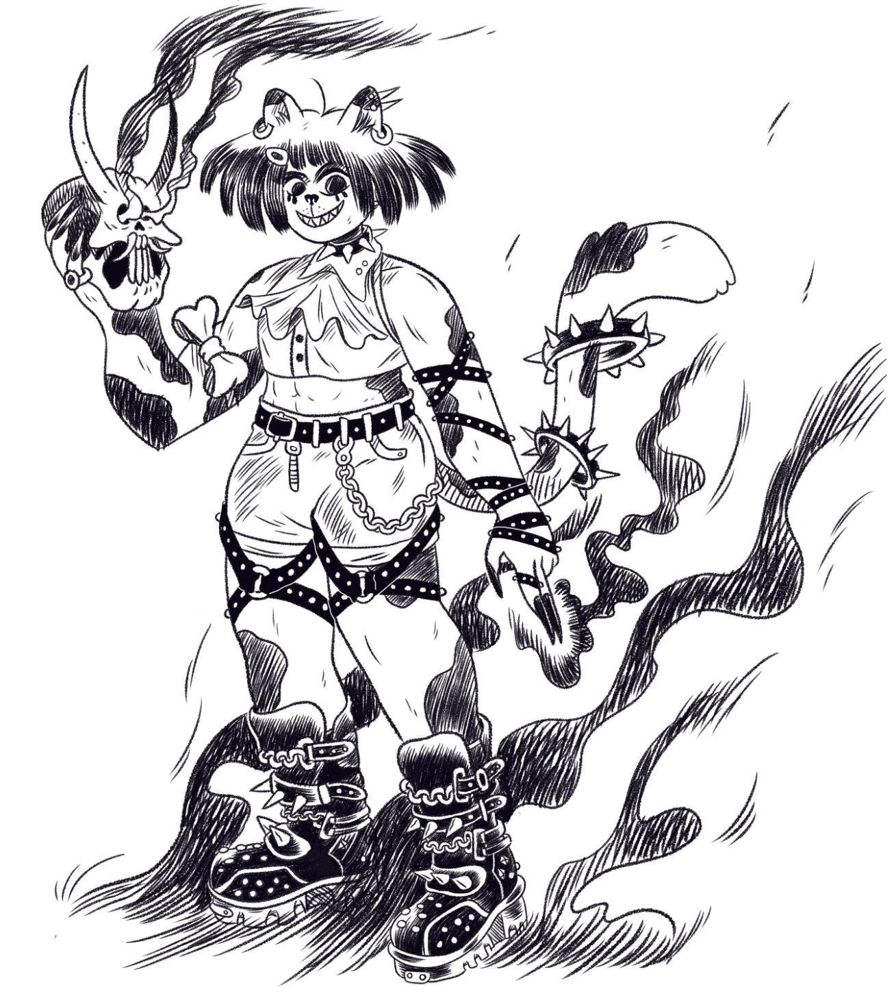
阿斯提爾與亞登特敵人
和玩家駕駛的機體一樣，阿斯提爾與亞登特是多數威權的戰爭主力。它們可能長自土壤、鑄於工廠，或從其他位面召來，但所有阿斯提爾都有一項共通點：落在對的，或錯的手中，都異常危險。
以下保留武器標籤英文，供規則辨識；斜線前為射程，後為標籤。
準備不足的軍校生 III（臨演級：鬼祟；凡俗）
- 配槍（Sidearm）I：遠射／防禦、無力（ranged / defensive, weak）。
-
Omen III：凡俗。
- 魔法焦點（Magic Focus）III：遠射／防禦、雙手（ranged / defensive, 2H）。
「呃、呃，長官，報到！準備好交戰了。」
民兵勞動駕駛員 II（臨演級：有野心；奧術）
- 劍、斧、釘頭錘 I：melee。
-
勞務亞登特（Service Ardent）II。
- 亞登特鐵拳 II：近戰／貼身、防禦（melee / intimate, defensive）。
- 凝聚長杖（Condenser Stave）II：遠射／復原、雙手（ranged / refresh, 2H）。
「簡單的雙足構裝體，勞務亞登特仍能抵上十個人的工作量。要是我們能多幾架就好了。」
盜匪散兵駕駛員 II（配角級：過度自信、刻薄；凡俗）
- 劍、斧、釘頭錘 I：melee。
-
散兵亞登特（Skirmisher Ardent）II。
- 重刃（Hefty Blade）II：近戰／凌亂、範圍（melee / messy, area）。
「別吹了，Marco。我們得拼命纏鬥才能拆掉一台伺服機，你一刀就能砍倒兩台，這哪有什麼好比的。」
傭兵阿斯提爾駕駛員 III（配角級：準備周全、好商量；神聖）
- 射線手槍（Raypistol）I：遠射／剋敵、有限（ranged / bane, limited）。
-
Wolf III。
- 射線步槍（Rayrifle）III：遠射／無限、雙手（ranged / infinite, 2H）。
- 力場短刀（Forceknife）：近戰／貼身、決勝（melee / intimate, decisive）。
「鋼構上的確有我們的印記，但其他部分全是新的。雇主……多元一點的好處。」
威權王牌 IV（主角級：理想主義、大膽、情緒不定；褻瀆）
- 射線手槍 I：遠射／剋敵、有限（ranged / bane, limited）。
-
Cobra IV。
- 力場劍（Forceblade）IV：近戰／剋敵、耗能（melee / bane, drain）。
- 爆發投射器（Burstcaster）IV：遠射／範圍、剋敵、凌亂、雙手（ranged / area, bane, messy, 2H）。
「Cobra，一號機。出擊。」
機械騎士 II（主角級：務實、冷靜、果斷；凡俗）
- 碎裂長槍（Shatterlance）II：近戰／剋敵、衝擊、裝填、雙手（melee / bane, impact, reload, 2H）。
- 劍／斧／釘頭錘 I：melee。
- 護禦板甲（Warded Plate）：ward。
-
戰騎亞登特（Steed Ardent）II。
- 鐵蹄 II：melee。
「騎兵？某種程度上算吧。我想是。別擋路就好。」
人物敵人
人有各種形貌、來自各行各業，也有各式身分。他們是你，也是我。
反構裝體小隊 I（臨演級：鬼祟；奧術）
- 射線步槍（Rayrifle）I：狙擊／裝填、毀滅、雙手（sniper / reload, ruin, 2H）。
- 短劍 I：melee。
- 奧術發電機（Arcane Generator）I：忽略武器的 reload 標籤。
「別抱怨了，小子。等你看它在阿斯提爾身上開個洞，就不會覺得重了。」
民兵 I（臨演級：熱心；凡俗）
- 劍、斧、釘頭錘 I：melee。
- 剋亞登特弩（Ardentbane Crossbow）I：遠射／剋敵、雙手（ranged / bane, 2H）。
「像你我一樣的人，準備為相信的事而戰。至少，也是為了保住家園。」
步槍兵 I（配角級：謹慎、稚氣未脫；凡俗）
- 劍、斧、釘頭錘 I：melee。
- 簧鎖步槍（Snaplock Rifle）I：遠射／決勝、斬殺、顯眼、裝填、雙手（ranged / decisive, vorpal, distinct, reload, 2H）。
「低頭，別開火。聽見簧鎖響了才還擊。」
騎士 I（配角級：紀律嚴明、堅韌；凡俗）
- 大型武器（Great Weapon）I：近戰／剋敵、範圍、凌亂、雙手（melee / bane, area, messy, 2H）。
- 護禦板甲（Warded Plate）：ward。
「身披鋼甲，刀劍幾乎與人等高，背負著一國的自信。曾幾何時，軍隊只需要這些。」
斥候 II（主角級：身手矯健、敏銳、嘴賤；凡俗）
- 蝕刃（Scourblade）II：近戰／剋敵、雙手（melee / bane, 2H）。
- 射線手槍（Raypistol）I：遠射／剋敵、有限（ranged / bane, limited）。
- 鉤索裝具（Grappling Rig）I。
「所以，艦長那邊有壞消息。有人從樹上盪下來，把一把闊劍捅進他的駕駛艙。」
探路者 I（主角級：安靜、謹慎、準備周全；凡俗）
- 祝福弓（Blessed Bow）I：狙擊／決勝、雙手（sniper / decisive, 2H）。
- 短柄斧 I：melee。
- 隱形斗篷（Invisibility Cloak）I：valuable, fragile；使你隱形。
「箭總得從某個地方射出來！散開，搜索樹林邊緣。」
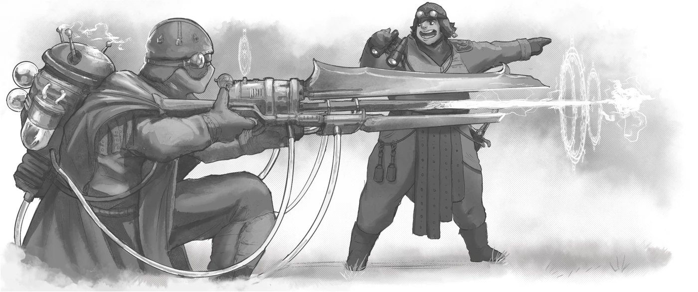
生物與怪物
這片土地幽深陰暗的角落，潛伏著各種東西。有些出自自然，有些則不太算。
狼 I（臨演級：兇猛；凡俗）
- 利齒與爪 I：melee。
「冒險者，安好。勞駕替我帶回十個狼屁股，我好幫你做條腰帶。」
巨蜘蛛 I（臨演級：窸窣疾行；凡俗）
- 毒牙 I：melee。
- 吐絲器 I：遠射／束縛（ranged / restraining）。
「斥候說，北方森林有一架阿斯提爾，蛛網多到根本搬不動。沒看到駕駛。也許這樣比較好。」
梟熊 II（配角級：可怖、堅韌；褻瀆）
- 撕裂爪 II：近戰／決勝、雙手（melee / decisive, 2H）。
「聽著，我不在乎你信不信。沒有亞登特，我就不回去。那東西還在裡面，我就不去。」
飛龍 III（配角級：飢餓、會飛；元素）
- 火球 III：遠射／範圍（ranged / area）。
- 撕裂爪 III：melee。
- 防火鱗片 III：不會被火焰傷害。
「看到影子掠過地面，就太遲了。你最好祈禱，牠俯衝下來時，要找的不是你。」
霜龍 V（主角級：專橫、殘酷、會飛；元素）
- 霧淞吐息（Rimebreath）V：遠射／範圍、裝填、束縛（ranged / area, reload, restraining）。
- 掃尾 V：近戰／範圍（melee / area）。
- 霜縛厚皮（Frostbound Hide）V：ward。
「最後的損失？兩個連的人員、配屬的亞登特，還有整整一個聯隊的阿斯提爾。」
陸鯊族母 IV（主角級：捍衛領域、龐大、善於閃避；凡俗）
- 粉碎巨顎 IV：近戰／凌亂、剋敵（melee / messy, bane）。
- 掘地爪 IV：能在泥土或沙中挖掘、游行。
- 震動感知 IV：能透過地面震動察覺敵人。
「那些蟲？喔，不用。牠們還在幾里外，你就能感覺到。不是，該擔心的是鯊魚。」
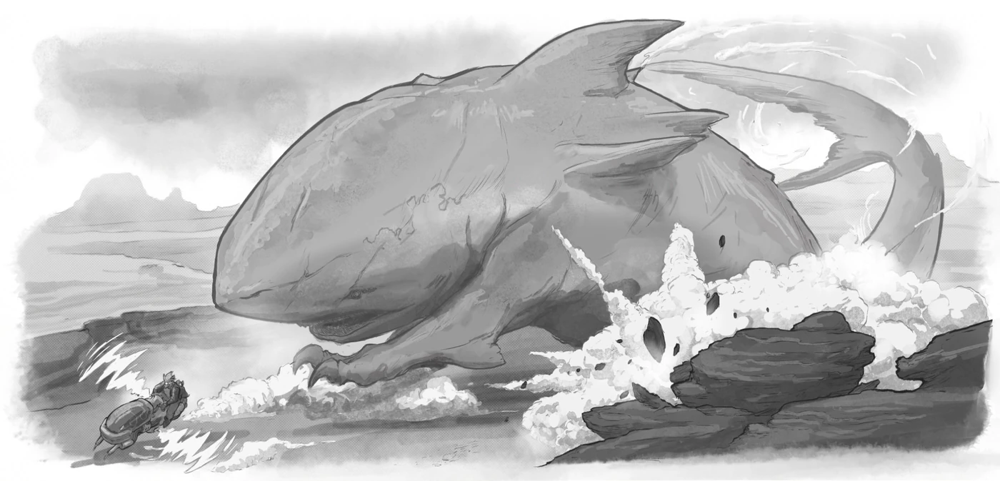
異界生物
來自我們世界之外、其他位面的生物，通稱「異界生物」（outsiders）。不受自然法則束縛的牠們，往往天生具有魔法。
小魔鬼 I（臨演級：狡詐；褻瀆）
- 魔鬼火矢 I：遠射／剋敵（ranged / bane）。
「魔鬼中最低等的階級之一，但本身仍然危險。」
霜塵精 I（臨演級：冰寒；元素）
- 冰凍之觸 I：近戰／束縛（melee / restraining）。
- 冰片 I：遠射／剋敵、裝填（ranged / bane, reload）。
「今晚升個火，派人看著。Mara 說，昨晚看見霜塵精乘風飄來。」
低階天使 II（配角級：難以預測、光輝；神聖）
- 神聖火焰 II：ranged。
「天使的形貌看來奇異，但何必假裝自己能理解神的造物？」
虛空巨人 III（配角級：破壞性強、執著；凡俗）
- 方尖碑 III：近戰／凌亂、雙手（melee / messy, 2H）。
- 虛空之子（Voidborn）：不需呼吸或進食，免疫寒冷傷害。
「他們來自上方。從天空降下，來自夜色深處的黑暗。」
深獄煉魔 III（主角級：殘酷、野心勃勃、守序；褻瀆）
- 深淵戰錘 III：近戰／剋敵、凌亂（melee / bane, messy）。
- 地獄再生（Hellish Regrowth）：肉體傷害造成的險境降為風險。
「任何魔鬼集會，都會由一頭深獄煉魔領導。和底下的低階生物不同，這些煉魔的力量與韌性，足以與牠們的殘酷匹敵。」
大地活泰坦 Terra V（主角級：漠然、冷峻、暴烈；元素）
- 地殼噴發 V：遠射／範圍、凌亂（ranged / area, messy）。
- 泰坦重拳 V：近戰／緩慢、毀滅（melee / slow, ruin）。
- 漠然凝視（Uncaring Gaze）：除非遭到直接干涉，否則不會注意階級 III 或更低的事物。
「元素位面沒有國王，也沒有總督，而且永遠不會有。若想統治，就得從甦醒的大地本身奪取權力。」
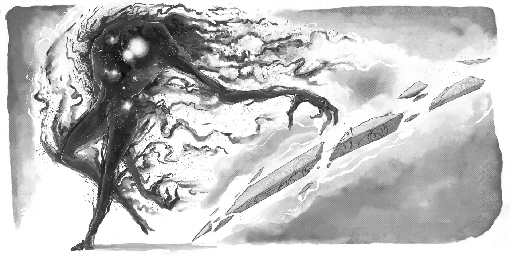
宿敵與冒險引子
Rivals
宿敵與設定、任務引子
宿敵
宿敵是反覆登場的角色，會一再挑戰那些引起自己注意的特定玩家角色。規則上，宿敵是主角級行動者，與自己的對手擁有一個引力時鐘。他們也有一項「職責」（Need：派系的要求、自己必須履行的義務等），以及一項「渴求」（Want：希望從對手身上得到什麼）。兩者不只引導宿敵的故事，也提供導演可用來牽動對手的籌碼；此處的對手，就是與某個宿敵有所牽連的玩家角色。
籌碼（Leverage）
當你的對手妨礙你的職責，或滿足你的渴求，獲得 1 保留點。你可隨時一對一花費保留點，做下列事情：
- 讓對手以自信或絕境行動。
- 提出一個必須回答的尖銳問題。
- 出現在別人沒料到的地方。
宿敵不必是抱著敵意、專門找玩家麻煩的敵人。他也可以是與角色競爭的盟友，是角色想贏得認可的人，或反過來想贏得角色認可的人，等等。
籌碼的例子
奧術師 Lilette 正與宿敵 Kett 交鋒。她把對方逼入角落，打到毫無防備。兩人之間沒有半點好感，因此 Lilette 抓住機會，試圖使出「決定性打擊」，將三度鍛造的劍刺穿 Kett 阿斯提爾的胸甲。然而 Kett 還有保留點可花。他花費保留點，迫使 Lilette 以絕境行動；導演描述，Kett 的阿斯提爾釋放一波震撼力場，試圖擋下 Lilette 的刀刃。
Dani 與宿敵 Cress 苦戰。大雨打在兩人交手的屋頂上，Dani 被擊倒，正沿著濕滑屋瓦爬行，想抓回匕首。但還沒碰到，導演就花費 1 保留點，提出一個必須回答的尖銳問題。Cress 穿過風雨喊道：「我們曾經的那一切，對你有任何意義嗎？」
宿敵記錄範例
| 姓名 | 職責 | 渴求 | 保留點 | 引力 |
|---|---|---|---|---|
| Corel White | 一字不差地服從命令 | 更了解 Ilgard 的音樂 | 2 | +2 |
| Bromwael | 得到 Associate 的獎賞 | 單獨與宿敵交手 | 1 | +3 |
設定與任務引子
本書接下來的部分是設定與任務引子。
設定引子示範你可以在哪些世界遊玩《阿斯提爾魔鎧》：每個都包含義軍與威權範例、重要地點、派系、人物，甚至裝備與阿斯提爾範例的變體。你可以整套使用、拆解取材，或單純拿來啟發靈感。
同樣地，任務引子提供快速的情境大綱，以及配合你們設定與玩家進行調整的選項。如果只有其中一部分吸引你，就把它剪下來，只用那一段！和書中的其他範例內容一樣，你甚至可以取不同引子的元素加以組合。
多方與世代衝突
Optional Rules
可選規則：多方衝突
某些戰役情境，例如「奧術學院」，並非龐大威權與充滿野心的義軍相互對峙，而是多個爭執不休的勢力交戰，形成比一般玩法更複雜、卻也更勢均力敵的衝突。
多方遊戲以數個「陣營」（Side）取代義軍與威權，每個陣營由數個「分支」（Branch）構成。玩家隸屬某個陣營，而不是義軍；休整時，不再恢復耗竭的派系，而是補回失去的掌控。此外，休整時導演可以代表任何陣營或分支花費自己的代幣。若陣營數多於玩家數，就改拿與陣營數相同的代幣，取代一般數量。
分支與掌控
每個分支像部門一樣具有實力，也列出它包含的派系類型；這些類型決定它在衝突場景後能獲得哪些成果。遊戲開始時，所有分支的實力都是 4+，讓衝突場景的擲骰勢均力敵。導演也可以決定衝突中有領先者與弱勢方；此時，一個陣營的分支起始為 5+，另一陣營為 3+。
多方衝突不使用失寵、穩定度與支柱規則。取而代之，每個分支都有掌控，起始為 3 點。這概略代表補給、穩固據點與士氣：掌控越少，越接近敗亡。掌控為 0 時，分支處於脆弱狀態；若再因衝突場景或出擊事件失去掌控，就會被摧毀。
被摧毀的分支經過 1 個衝突回合後獲得替補，起始實力為 3+；透過贏得衝突場景取得的成果，可以將它提升回 4+。若某陣營已無分支，又遭到攻擊或其他針對行動，該陣營就會陷落，在敵人壓力下瓦解崩潰。
每陣營的分支數量取決於遊戲中陣營的總數：3 個陣營時，各有 3 個分支；4–5 個陣營時，各有 2 個分支；5 個以上陣營的遊戲，各有 1 個分支。
衝突回合
多方遊戲使用相同的衝突場景，但進行方式不同。衝突回合不再是義軍對威權，而是每個陣營各選一種衝突場景，並以另一陣營為目標。對該場景而言，發起者是「攻方」，目標是「守方」。若陣營很多，可以每個衝突回合只替一半陣營進行場景，以免耗時過長。
場景開始前，雙方各選一個分支代表自己，再從該分支選擇要派出的行動者種類；這決定陣營獲勝時能得到的成果。
場景照常進行。需要擲骰時，以攻方分支的實力為標準：結果等於或高於實力，守方獲得一次成功；低於實力，攻方獲得一次成功。陣營若願意，可花費 1 點掌控，使用分支列出的好處。場景中取得較多成功的一方獲勝，並敘述結局。和一般衝突回合一樣，平手時由團體共同解讀結果；不確定就擲硬幣。
結局之後，勝方不再選成果，而是獲得所派行動者對應的好處。也可以另花 1 點掌控，改選任意分支可用的其他成果。
陰謀
如同威權能啟動、推進部門陰謀，各陣營也能藉由分支啟動與推進陰謀。每個分支至少有一種啟動或推進時鐘的方法，也包含陰謀時鐘。陰謀若順利填滿，就應立即產生明顯影響，通常相當於 1–3 項成果，取決於時鐘的長度。和一般部門陰謀一樣，玩家可以透過出擊阻止已完成的陰謀；不過，若陰謀沒有針對自己陣營，他們也可能更願意讓事情自然發展。
多方衝突的分支類型
軍事（Military）
重點：部署武力進攻或防禦。花費掌控：「全面戰爭」（all out war）或「單挑」（one on one）中，擲兩次並取有利結果。
軍事分支可以派出下列行動者，獲得對應成果：
- 軍事（Military；士兵與傭兵）：移除敵對分支 1 點掌控。
- 煽動者（Firebrands；社群領袖與行動者）：擲硬幣；正面時，啟動／推進一個有利時鐘 2 格。
- 異數（Mavericks；變數與反叛者）：從敵方陣營的分支合計移除 2 點掌控，並從己方或盟友陣營的另一分支移除 1 點掌控。
諜報（Subterfuge）
重點：部署間諜或特務暗中處理事務。花費掌控：「追逐」（a chase）或「秘密行動」（a covert op）中，擲兩次並取有利結果。
諜報部門贏得衝突場景時，選一項：
- 特務（Agents；間諜與破壞者）：擲硬幣；正面時，秘密移除任意分支 1 點掌控。
- 盜賊（Thieves；盜匪與滲透者）：讓一個陰謀時鐘減少 1 格，並啟動／推進一個有利時鐘 1 格。
- 學者（Scholars；研究者與策略家）：揭露或掩蓋與下一次出擊有關的資訊。
資源（Resource）
重點：累積財富、情報與人員。花費掌控：替下一次「籌畫與準備」增加或移除一顆骰子。
資源分支可以派出下列行動者，獲得對應成果：
- 供應者（Suppliers；商人與金主）：啟動／推進一個有利時鐘 1 格，或恢復 1 點掌控。
- 廷臣（Courtiers；外交官與官僚）：本回合剩餘時間內，該陣營不能成為目標。
- 冒險者（Adventurers；行走的災難）：送一份戰利品到母艦：擲硬幣，正面是值錢物品，反面是珍寶。若母艦不屬於該陣營，就會附帶請求或交易條件。
研究（Research）
重點：研發新附魔與儀式。花費掌控：決定任意衝突場景平手時，哪一方獲勝。
研究部門贏得衝突場景時，選一項：
- 學者（研究者與策略家）：揭露或掩蓋下一次出擊的資訊。
- 供應者（商人與金主）：啟動／推進有利時鐘 1 格，或恢復 1 點掌控。
- 異數（變數與反叛者）：從敵方陣營的分支合計移除 2 點掌控，並從己方或盟友陣營的另一分支移除 1 點掌控。
典藏（Curator）
重點：竊取並調查不屬於自己的事物。花費掌控：啟動或推進一個名為「拿走不屬於自己的東西」的 4 格時鐘。
典藏部門贏得衝突場景時，選一項：
- 盜賊（盜匪與滲透者）：陰謀時鐘減少 1 格，並啟動／推進有利時鐘 1 格。
- 軍事（士兵與傭兵）：移除敵對分支 1 點掌控。
- 冒險者（行走的災難）：送一份戰利品到母艦，擲硬幣決定：正面為值錢物品，反面為珍寶。若母艦不屬於該陣營，附帶請求或交易條件。
行政（Executive）
重點：保護、深化控制體系。花費掌控：「計畫展開」（an unfurling plan）或「論辯」（the discourse）中，擲兩次並取有利結果。
行政部門贏得衝突場景時，選一項：
- 特務（間諜與破壞者）：擲硬幣，正面時秘密移除任意分支 1 點掌控。
- 廷臣（外交官與官僚）：本回合剩餘時間內，該陣營不能成為目標。
- 煽動者（社群領袖與行動者）：擲硬幣，正面時啟動／推進有利時鐘 2 格。
可選規則：跨世代衝突
一般戰役可能涵蓋數週、數月，乃至數年的事件，但你也可能想玩一場聚焦更漫長時間跨度的遊戲。跨世代衝突以多個「時代」（Era）為焦點，在一場漫長戰爭，或數場不同戰爭之間，看見核心人物成長，甚至新人物登場。
每個時代都重新創角，並從先前時代選擇成長加以繼承。你可能仍扮演同一個人：留住往日某些本領，讓其他本領逐漸退去；也可能扮演新角色，受到前人的影響與啟發。
第一個時代
跨世代衝突的第一個時代大致照常進行：創角、建立威權與義軍，等等。你們也要決定該時代的終點，也就是希望在遊戲中抵達、並標示時代結束的一個敘事節點。可能是：
- 奪取或摧毀一座支柱。
- 解決威權的一個部門。
- 某位玩家角色在「倒下」擲出 6−。
- 完成一定次數的出擊，或一整個任務。
- 徹底摧毀威權。
一個時代需要多久，應由所有人共同決定，建立一致認知。你們的時代是戰役內的短篇故事弧線？還是每個時代本身就是一場完整戰役，透過多場遊戲持續發展同一個故事？或介於兩者之間？每個人都應清楚自己要投入多大的承諾。
此外，替時代命名。這可能是後世史家取的故事內名稱，也可以是桌上使用的後設標題；無論如何，都應為該時代定調。
時代結束後，每位玩家建立一張名為「傳承」（Legacy）的清單，加入自己或其他玩家在該時代選取的一項成長。也寫下一項該時代出現、希望未來繼續探索的設定或故事元素。
第二個時代與之後……
往後每個時代，你們先回顧先前事件，再決定下個時代位於多久之後。你們可能仍在同一場戰爭中，只是過了幾年或幾十年；也可能來到一世紀後，類似的強權再度交鋒。應決定：
- 兩個時代之間過了多久？
- 扮演原有角色，還是新角色？
- 義軍與威權是否相同？若相同，期間如何改變？
- 什麼讓這個時代與上個時代感覺不同？
決定好以上事項，就再次創角。不論扮演原有人物或新人物，每位玩家都建立全新的角色表，也可以更換扮演書；新角色起始時，額外擁有你傳承清單上的所有成長。此外，從先前時代記錄的主題元素中選一項或更多，據此替新角色撰寫起始牽引。
和第一個時代一樣，再次決定時代終點，並為它命名。結束後，再加入一項新成長，以及未來想繼續探索的設定／故事元素。之後每個時代都重複這個架構：創角、把傳承元素加入角色、再用感興趣的事物擴充傳承，然後邁向下個時代。
熾天使檔案：事件紀錄
［事件前 3 小時］
首席機械先知 Aldaine 進入阿斯提爾三號機庫，開始執行熾天使束縛的標準儀式。占卜顯示儀式流程無偏差或錯誤。
［事件前 1 小時］
副先知 Gauld 進入阿斯提爾三號機庫，運送熾天使束縛所需工具與器具。占卜顯示，此時有一隻小蜥蜴抹糊了第二枚符文，導致束縛儀式的封印出現輕微偏差。
［事件前 0.3 小時］
工人 Hurley、Wright 與 Lilan 進入阿斯提爾三號機庫，開始準備一架攻城行者級（Siege-walker Class）阿斯提爾，接收經修改、完成束縛的核心。見習先知 Lucah 與 Chess 進入阿斯提爾三號機庫，協助首席機械先知 Aldaine 與副先知 Gauld 開始熾天使束縛程序。
［事件前 0.1 小時］
工人 Hurley 與 Wright 將封存 LOSANTHES（異界生物、神聖來源、分類 #47）的束縛核心裝進準備完畢的攻城行者級阿斯提爾。該機此時重新分類為光輝型（Radiant），命名為「LOSANTHES 的驕傲」（PRIDE OF LOSANTHES）。
［事件發生］
封存 LOSANTHES（異界生物、神聖來源、分類 #47）的束縛核心，因先前熾天使束縛儀式的偏差而故障。顯現立即發生（火焰：A 級；眼睛：D 級；合唱：等級未定）。「LOSANTHES 的驕傲」因極端高溫迅速由內向外液化。阿斯提爾三號機庫受損嚴重。首席機械先知 Aldaine、副先知 Gauld，以及見習先知 Lucah、Chess 皆透過標準傳送程序撤離。工人 Hurley、Wright 與 Lilan 遭神聖焚化。
——節錄自《熾天使檔案》（The Seraphim Files），作者不詳；發現於 C3/Y73.3，神術定年為 C2/Y93.8–9。
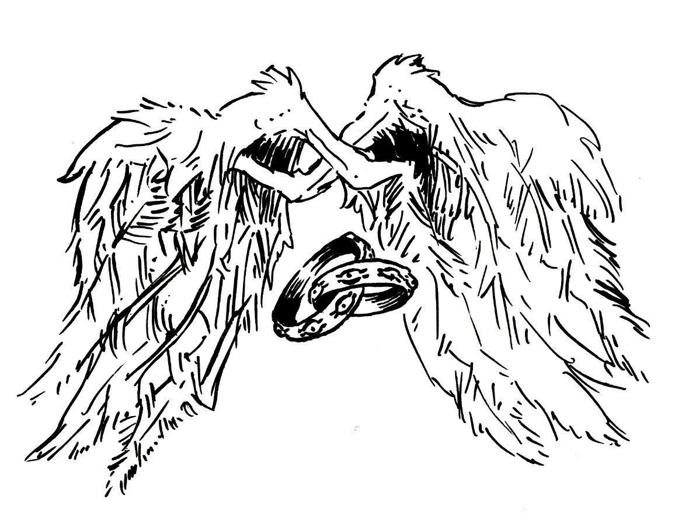
設定與任務篇章插圖
本頁為原書插圖頁，無可翻譯文字。
本頁原書插圖依主題放在對應章節：魔鎧與奇幻戰場。
任務：大混戰
The Grand Melee
任務引子：盛大亂鬥
威權安排了一場引導者大賽，邀請［全國／軍中／世界各地］有意挑戰的人，駕駛阿斯提爾［一對一／組隊］交戰，競逐［榮耀／大獎／祝福／重要職位］。然而，挑戰者並不知道，盛大亂鬥只是威權用來［展示新型阿斯提爾／殺掉技藝高超的引導者／竊取客製阿斯提爾／招募引導者］的機會。
地點
阿斯提爾工坊，此處：
- 工匠正在拆解一架嚴重受損的阿斯提爾。
- 工坊主管正在教授見習工匠基本知識。
- 所有人一起進行緊急／大型修復工作。
- 一名受傷引導者正被救出已毀的阿斯提爾。
休息室，此處：
- 引導者在賽事空檔等待。
- 富裕觀眾從安全地點觀賽。
- 威權官員正在檢討賽事計畫。
- 玩家可以休息，卻被暗中監視。
比賽場地，此處：
- 有些挑戰者對自己的阿斯提爾過分保密。
- 一名喧鬧的引導者想先找人打一架解悶。
- 威權公開招募引導者。
- 有人迫不及待想惹事。
人物
一名威權王牌引導者，他：
- 正在等待背叛主人的完美機會。
- 急於證明自己的真正價值。
- 將參賽當成贖罪。
一名工匠，他：
- 是雙面間諜。
- 會破壞自己經手的每一架阿斯提爾。
- 正在尋找有潛力的引導者，提供實驗性升級。
一名傭兵引導者，他：
- 為復仇而來。
- 想找到自己的容身之處。
- 準備鬧出一大堆麻煩。
事物
- 破敗的旗幟。
- 遺失的職務徽章。
- 故障武器。
- 稀有魔法焦點。
- 一箱箱煉金物資。
- 遭人破壞的祭壇。
- 寫滿古怪儀式的書。
- 茶杯裡的風暴。
- 設有陷阱的儲藏室。
- 神話之劍。
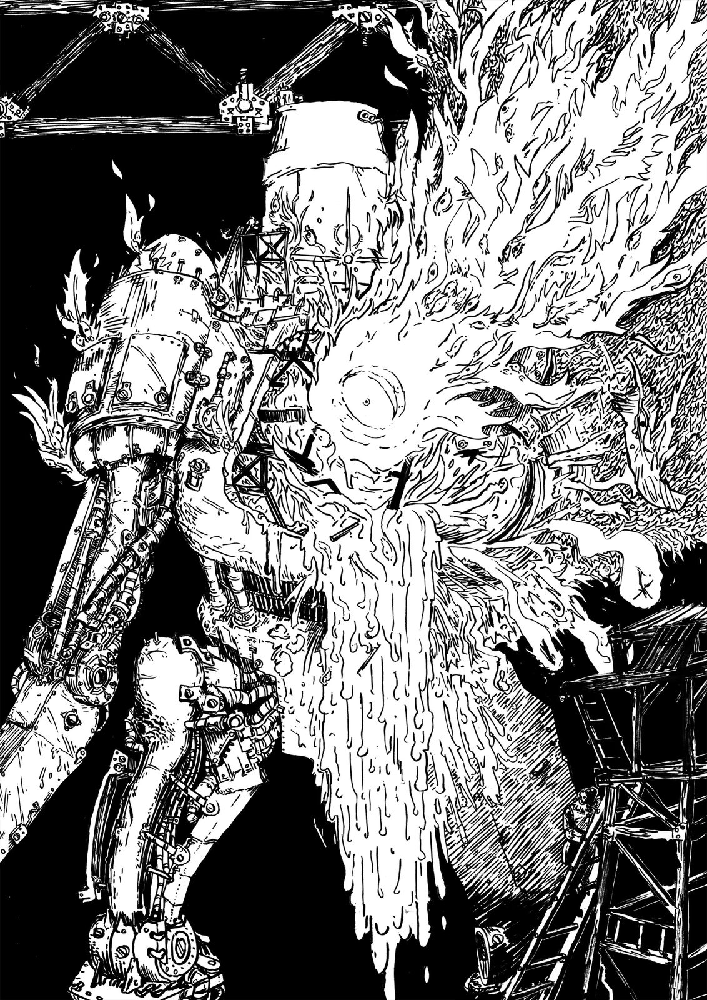
任務：中立地帶
Neutral Ground
任務引子：中立之地
義軍得知威權在一座號稱中立的城市設置秘密計畫，派玩家前去［偵察／竊取／摧毀］這項［實驗性阿斯提爾／危險魔法實驗／秘密軍火庫］計畫。但義軍［對計畫性質毫無情報／對玩家隱瞞了某件事／收到的是假情報］，使情況更複雜。
地點
入城檢查哨，此處：
- 過勞的員工完全不查證件。
- 最近的事件讓進城的人受到額外關注。
- 有人試圖把貨物走私進城。
- 幾名威權士兵正在鬧事。
倉庫，此處：
- 威權人員可以進入秘密基地。
- 義軍特務存放了值錢的東西。
- 阿斯提爾被秘密藏在這裡。
- 第三方正努力避免引起懷疑。
附近森林，此處：
- 威權正在秘密測試某件事物。
- 魔法強化的樹木正被引導前往威權的伐木場。
- 大片空地是絕佳伏擊點。
- 有人迫不及待想惹事。
人物
一名威權新手引導者，他：
- 天真得過了頭。
- 個人十分在意這項計畫是否成功。
- 是某位玩家角色的老朋友。
一名工匠，他：
- 因為計畫可能促成其他進展，而協助掩蓋。
- 假扮平民，替威權刺探情報。
- 藏匿走私的義軍資源。
一名義軍特務，他：
- 為了完全無關的事情來到此地。
- 捲入遠超出自己能力的局面。
- 想找人幫忙，進入不該去的地方。
事物
- 偷來的煉金物資。
- 遭遺棄的阿斯提爾。
- 隱藏的武器庫。
- 未完成的儀式。
- 奇異遺骸。
- 斷鏈。
- 偽造文件。
- 尚未乾涸的血跡。
- 觀視寶珠。
- 走私奢侈品。
任務：護送
Escort Duty
任務引子：護送勤務
義軍需要保護，派玩家護送［貨運車隊／囚犯運輸隊／重要人物］抵達目的地。不出所料，威權出現，打算［把護送對象搶為己有／趁一行人脆弱時攻擊／盡可能夷平摧毀一切］。然而，［巨型生物／愛出風頭又不服命令的威權王牌／貪婪的第三方］突然現身，出乎雙方意料。
地點
狹窄山口，此處：
- 當地掠食者已經餓了。
- 中立的一方藏在小聚落裡。
- 投機的土匪設下某種路障。
- 阿斯提爾與母艦必須繞路，把護送責任留給步行者或較小的亞登特。
開闊平原，此處：
- 海市蜃樓可能使不夠專注的人分心。
- 護送對象展現真正的移動速度。
- 某個危險事物正在沉睡。
- 惡劣天候迫使各方尋找庇護。
橋梁，此處：
- 脆弱的支柱隨時可能崩塌。
- 威權事先布好伏兵。
- 團體獲准揭示護送對象其實是誘餌。
- 其他旅人陷入交通堵塞。
人物
一名平民駕駛或機師，他：
- 對抗威權這件事，讓他興奮過頭。
- 很不巧，是個新手。
- 想向義軍證明自己。
一名遠方指揮官，他：
- 指手畫腳，試圖搶走任務功勞。
- 不斷收到錯誤情報。
- 只是誠心想幫忙。
一名威權間諜，他：
- 在［錯誤／正確］的時間，出現在［錯誤／正確］的地點。
- 試圖建立深層潛伏身分。
- 受傷而走投無路。
事物
- 煉金地雷。
- 廢棄礦井。
- 狙擊手的制高點。
- 可疑洞穴。
- 巡迴馬戲團。
- 一些各式各樣的鑰匙。
- 一噸碎石。
- 披甲保險箱。
- 走私暗艙。
- 意料之外的缺席。
任務：最後關頭
Eleventh Hour
任務引子：最後關頭
義軍得知威權開發了［巨型法術／阿斯提爾／魔法武器／某種奇異奧術事物］，足以一舉結束戰爭，當然是以威權獲勝作結。玩家必須在威權使用它［迫使義軍領導層現身「和平」會議／摧毀義軍主要基地或據點／殺死多到荒唐的異議人士］之前，［找出秘密所在地／摧毀它／替義軍奪取它］。
地點
宏偉大廳，此處：
- 義軍的官僚體制正在崩解。
- 一名官員即將得意忘形，做得太過。
- 一場將造成意外後果的表演即將開始。
- 背叛即將曝光。
母艦指揮甲板，此處：
- 一道可怕命令即將下達。
- 一個錯誤即將發生。
- 有人發動政變。
- 有人突然看清了事情。
秘密地點，此處：
- 玩家不受歡迎。
- 玩家受到熱烈歡迎，熱烈得可疑。
- 某件事被揭露，原來大家一直有極大的誤解。
- 同樣糟糕的事，正在遠更隱密的情況下發生。
人物
一名威權王牌引導者，他：
- 對威權竟做到這種地步感到震驚。
- 是深度潛伏的義軍特務。
- 負責扣下扳機，無論這個「扳機」是什麼形式。
一名外交官，他：
- 正以非常不合時宜的方式調動資源。
- 故意以非常不合時宜的方式調動資源。
- 試圖說動一個不情願的群體採取行動。
一名首席工匠，他：
- 負責威權的［巨型法術／阿斯提爾／其他］研發團隊。
- 正在尋找威權計畫的弱點。
- 即將達成魔法突破。
事物
- 無法辨認的東西。
- 不該開著的門。
- 巨大的魔法寶石。
- 被遺忘的骨骸。
- 體型龐大的構裝體。
- 掉落的鑰匙。
- 本該燒掉的檔案。
- 賄賂。
- 你以為屬於自己的東西。
- 不穩定的藥劑。
任務：威權來襲
Authority Attack
任務引子：威權來襲！
威權正襲擊［小鎮／義軍堡壘／外星殖民地／大城市］，目的是［尋找某樣東西／奪取並占領／摧毀義軍士氣］。即使［某位玩家角色視此地為家／義軍的一項重大祕密藏在這裡／此地曾是威權聖地］，玩家仍必須擊退攻勢，挽救危局。
地點
倉庫，此處：
- 一架原型阿斯提爾正在等待。
- 威權已找到進入的方法。
- 避難者找到容身之處。
- 某件事不對勁。
街道，此處：
- 有人即將採取激烈行動。
- 隱藏的事物正在被揭開。
- 雙方陷入對峙。
- 無辜者暴露在危險之中。
城鎮外圍，此處：
- 激烈的小規模戰鬥正在醞釀。
- 某件事出了岔子。
- 一項宣告被提出。
- 有人在守護撤退路線。
人物
一名平民領袖，他：
- 被威權挾為人質。
- 帶著重要事物躲藏。
- 正在領導疏散。
一名威權引導者，他：
- 完全沒有準備好領導這次任務。
- 為了復仇而來。
- 想向上級證明自己。
一名平民，他：
- 在錯誤時間出現在錯誤地點。
- 是其中一名玩家角色，最好趕快替自己找架阿斯提爾。
- 決定親自處理這件事。
事物
- 童年故居。
- 未完成的奇蹟。
- 囤積的武器。
- 破損大門。
- 一套運河系統。
- 升起的旗幟。
- 失蹤的一批貨物。
- 牆上的洞。
- 若干金條。
- 一道精細的煉金程序。
幽魂群島
The Ghost Reaches
幽魂群島（The Ghost Reaches）
概觀
幽魂群島是繁忙而密集的群島，從南方眾多氣候溫和的島嶼，一路延伸至冰寒的安息島（Isle of Repose）。名稱源自古老的地方傳說：迷途靈魂會逐島朝聖，最後在安息島長眠。
群島過去曾因激烈競爭而分裂，卻早已統合於一個執政議會之下，由各島民主選出的代表組成。每島能選出多少代表，取決於人口、港口替群島帶來的貿易價值等因素。戰亂年代，許多島嶼難以自給自足；合作則讓它們在供應島民與整個群島的產業中，找到新定位。基礎設施與產業的轉型，使群島繁榮而防禦薄弱，統一後大部分軍人都回歸平民生活。
近年，這吸引了西方大陸工業軍事派系「進步諸面」（Faces of Progress）的注意。他們覬覦群島的資源與勞能量，以迅速、出其不意的攻勢奪取安息島，將它改為向整片區域進軍的前進基地。對抗他們，以及如今對鄰近島嶼頻繁襲擊的，是「新狩獵」（The New Hunt）：鬆散的民兵組織，利用當地工匠能騰出的材料，以及王者島（Isle of Kings）生物的零件，拼湊阿斯提爾。
威權：進步諸面
進步諸面近來從「吸血鬼同夥」發展為「工業巨頭密會」，再成為「主權國家」，正迅速化為已知世界的生產中心。工廠以驚人數量製造從餐具到武裝阿斯提爾的一切。為維持產量、繼續擴張，他們需要新的原料來源，並認為動武是解決需求的好方法。幽魂群島只是名單上的第一站：等這裡被露天採礦挖空，再夷平成工廠用地，「進步」就會在別處繼續。
領袖：入侵由 Galinn Juriss 率領。這位前礦場工頭在進步諸面從企業暴力轉型為國家的過程中，證明了自己的天生軍事領袖才能。傳聞，進步諸面真正的領導層已與他分享某種血之贈禮。
美學：瓷器，以金漆修補損傷。皮革襯墊、花紋絲綢。金色飾邊與裝飾。裸露管線與猩紅液體。
義軍：新狩獵
新狩獵因應安息島遭占領而成立，由數十個抵抗小組組成鬆散民兵，盡一切力量阻止敵人在群島站穩更多據點。
領袖：沒有統一領袖，各小組大致獨立行動。
美學：怪物骨骸、角與牙齒。回收浮木、鐵鏈與螺栓。鮮豔塗裝、擊殺記號與戰利品。
新狩獵（The New Hunt）
概觀
進步諸面奪取安息島後，新狩獵應運而生。這支鬆散民兵由數十個抵抗小組組成，盡力阻止敵人在群島建立更多立足點。
領袖：沒有統一領袖，各小組大致獨立行動。
美學：怪物骨骸、角與牙齒；回收浮木、鐵鏈、螺栓；繽紛塗裝、擊殺記號與戰利品。
新狩獵派系範例
王者島快遞（King’s Isle Couriers；游擊隊 Guerillas）
從前，要快速、安全地把包裹送過王者島，KIC 就是最佳選擇。如今進步諸面登場，他們便把尋路本領與秘密路線，轉向稍微不同的用途。
記錄欄：耗竭？／掌控。
擱淺者（The Beached；軍事 Military）
一支傭兵團的分隊，在進步諸面最初入侵時捲入交火，最後被沖上岸。遵循傭兵團守則，他們迅速將遇難船隻改成當地總部，並策劃對付誤傷他們的攻擊者。
記錄欄：耗竭？／掌控。
Sif 的沉眠者（Sif’s Sleepers；奇異 Strange）
安息島失守使許多人流離失所，包括照料島上安眠神殿的眾多祭司。其中仍夠年輕、也夠憤怒，願意用法術對抗進步諸面的人，聚集成 Sif 的沉眠者。
記錄欄：耗竭？／掌控。
群島團結基金（The Reaches Unity Fund；供應者 Suppliers）
正規軍動員遲緩，因此許多有影響力、有資源的人集結成立團結基金；這項活動幾乎毫不掩飾地資助新狩獵各個抵抗小組。
記錄欄：耗竭？／掌控。
Calistone（盜匪 Bandits）
Calistone 原本只是小偷團伙，恰好在入侵時掌握一條隱密的安息島進出路線。這條路雖只能用來搶一票，從進步諸面奪得的贓物，已足以讓他們從業餘團體變成裝備精良的組織。
記錄欄：耗竭？／掌控。
Loreth 潮汐公會（Loreth Tidal Guild；學者 Scholars）
魔法事故使 Loreth 島沉至海平面下數公尺後，潮汐公會負責維護水壩與水閘系統，讓島嶼仍能居住。他們的工程知識，也讓他們天生擅長破壞進步諸面的奧術工事與阿斯提爾。
記錄欄：耗竭？／掌控。
快訊：傭兵登陸人魚島——是敵是友？
今天，一群全副武裝的受雇劍士登上人魚島（Mermaid’s Isle）北岸，也就是當地人俗稱的守望者海灘（Watcher Beach），令旁觀者大為震驚。這群傭兵帶著數架構裝體，其中包括一架大型阿斯提爾，迅速開始紮營，並立起一道小木樁圍牆。在本學者看來，他們的船似乎受損相當嚴重；船被拖到海灘高處，拆卸取木。
目前不知這些傭兵隸屬哪支傭兵團，但人魚島居民希望，在接下來進步諸面占領的日子裡，他們不會惹出麻煩。
——節錄自《群島公報》（The Reach Gazette），Silt-town Publishing，YA212.M3.D13。
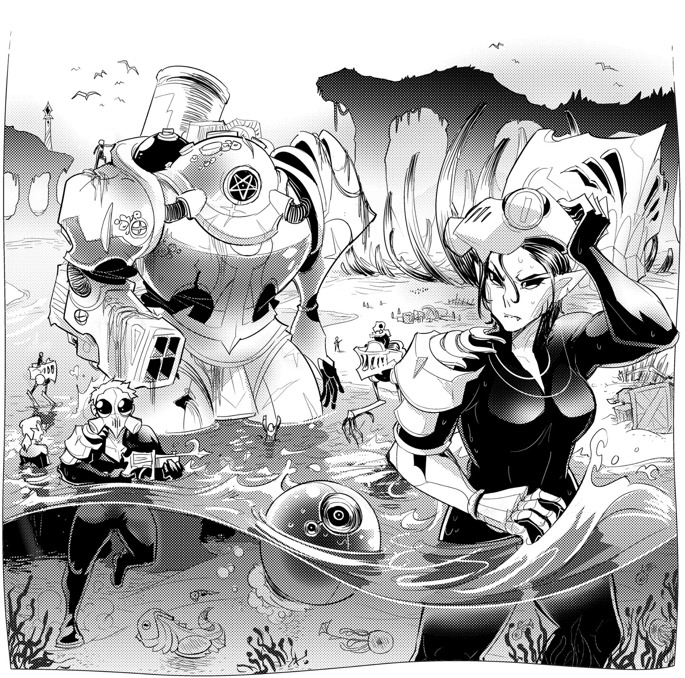
進步諸面（The Faces of Progress）
概觀
進步諸面近來從「吸血鬼同夥」發展為「工業巨頭密會」，再成為「主權國家」，正迅速化為已知世界的生產中心。工廠以驚人數量製造從餐具到武裝阿斯提爾的一切。為維持產量、繼續擴張，他們需要新的原料來源，並認為動武正好能解決。幽魂群島只是名單上的第一站：等這裡被露天採礦挖空、夷平蓋成工廠，「進步」就會在別處繼續。
領袖：Galinn Juriss 領導這次入侵。這位前礦場工頭，在進步諸面從企業暴力轉型為國家的過程中，展現天生軍事領袖的才幹。據傳真正領導層已與他分享某種血之贈禮。
美學：瓷器、金漆修補的損傷、皮革襯墊、花紋絲綢、金色飾邊與裝飾、裸露管線、猩紅液體。
部門範例
Juriss 軍團（The Juriss Company；軍事 Military）
Galinn Juriss 的私人遠征軍，奉命替吸血鬼主人奪取幽魂群島。Galinn 急於提升地位：進步諸面內擁有私人武裝軍團的人不多，但擁有私人領地的人更少。
進步之諾（Progress’s Promise；典藏 Curator）
成員畢生致力記錄、保存「進步」的證據；所謂進步，就是吸血鬼主人一次次的征服。這通常意味著搜刮進步諸面占領的土地，奪走秘器與傳家寶來研究……或只是展示。
動脈 #23（Artery #23；資源 Resource）
進步諸面的眾多動脈，把貨物、武器，以及甜美無比的鮮血，送往每個有需要的地方。#23 負責支援、協助 Juriss 軍團的各項事業。
陰謀範例
平定王者島（Pacifying the Isle of Kings）
動脈 #23 的特務 Sinnh Renere 認為，可以想點辦法，讓王者島的野生動物忽略 Juriss 軍團士兵。
監視之眼（A Watchful Eye）
在各島之間架設龐大的檢查哨系統並不容易，但能大幅限制新狩獵的移動。
幽魂群島的阿斯提爾與裝備範例
穿刺者（Puncture）III：褻瀆
| 項目 | 資料 |
|---|---|
| 核心／能量 | 邪術（Occult）／2 |
| 過熱 | 空白記錄欄 |
| 零件 | 抗性護符（Resistance Charm）：清晰誓約（Clarity Covenant；降低暈眩／昏沉造成的危難） |
| 零件 | 奧術熔爐（Arcane Forge）：可以「冷卻」，補充一件已耗盡的武器 |
| 機體動作：識敵之眼（Foe Eye） | 你總能判斷眼前哪個敵人最危險 |
| 攜行 | 法術砲（Spellcannon）III：遠射／攻防兼備、突襲、耗能 2、雙手（ranged / versatile, blitz, drain 2, 2H） |
| 收納 | 力場短刀（Forceknife）III：近戰／剋敵、貼身（melee / bane, intimate） |
穿刺者是進步諸面各小隊的刺劍，專門放出去對付格外危險的敵人。它們攜帶以血液供能的大型法術砲；對付它們最好下重手，因為聚焦儀式讓尋常攻擊幾乎無法動搖準頭。
修剪者（Clipper）III：凡俗
| 項目 | 資料 |
|---|---|
| 核心／能量 | 古代（Ancient）／2 |
| 過熱 | 空白記錄欄 |
| 零件 | 護禦（Warding）：堅固結構（Rugged Build），+守護（ward） |
| 零件 | 法術常式（Spell Routines）：「挺過風暴」時，可選擇直接取得 7–9 結果 |
| 機體動作：切割臂（Cutting Arms） | 可以使用「子系統」動作，移除一項自選的環境危害 |
| 攜行 | 砍伐鋸（Hewer）III：近戰／剋敵、耗能（melee / bane, drain） |
| 攜行 | 力場連射器（Force Repeater）III：遠射／防禦、無力（ranged / defensive, weak） |
修剪者是大型、耐操的阿斯提爾，原本設計用來巡邏王者島，清除道路上過度生長的動物群。新狩獵將整支機隊改作戰爭用途，而它們完全勝任。
裝備
放血者（Bloodletter）I
近戰／顯眼、防禦（melee / distinct, defensive）。進步諸面的普通士兵攜帶這種陰險長矛：本質上雖是凡俗武器，設計卻能抽取受害者鮮血。原來，不屬於普通士兵階層的人，有著永不止息的渴望。
造灰弓（Ashmaker Bow）I
遠射／毀滅、決勝、危險、雙手（ranged / ruin, decisive, dangerous, 2H）。入侵之前，造灰弓還只是理論；新狩獵很樂意把它付諸實踐。極端危險的煉金箭，配上經儀式施加必要防護、足以承受箭矢威力的弓，讓造灰弓成為每個抵抗小組的珍藏。
小鯊（Little Shark）II
近戰／貼身、冰凍（melee / intimate, freezing）。第一支水手亞登特隊受派去干擾進步諸面增援時，發現裝備不適合海底使用。這些適合亞登特、堆疊短程霜凍魔法的魔杖，被稱為小鯊，提供了一種破壞船殼的簡單方法。
析取長杖（Decanting Staff）III
遠射／剋敵、雙手（ranged / bane, 2H）。由阿斯提爾雙手持握的長杖。透過一連串煉金程序，從偷來的血液提純、抽取魔法能量，再轉作暴力用途。
砍伐鋸（Hewer）III
近戰／剋敵、耗能（melee / bane, drain）。一把圓鋸，利用蒸餾煉金火與安息島深處永凍之冰的劇烈反應，以閃電般速度旋轉。
奧術學院
The Academy Arcane
奧術學院（The Academy Arcane）
概觀
奧術學院是這片土地最古老、最優秀的魔法學院，數百年來不論出身哪個國家，最出色、最聰穎的法師都曾在此受訓。無論志向是戰鬥法師、工匠、煉金術師、幻術師，或其他道路，鮮有地方能提供比這裡更好的成功機會。新任校長，大法師 Alejandaine，打算延續這項傳統……也為了跟上外界變化，首次在即將到來的學年向有志成為引導者的人開放大門。未來將坐進阿斯提爾駕駛艙的學生，將首次走過學院廊道，在自選的學舍裡找到新家庭，打造真正充滿魔法的未來。
事情當然沒那麼簡單。「盛大競賽」時代，未來將有一場全校錦標賽……但學舍間的衝突不會等到開幕典禮才開始。從來就不會；而首次加入交戰的阿斯提爾，只會讓火勢更旺。
十年後，餘燼將再次燃起。「撕裂大陸」時代，那些互相爭鬥的學舍成員早已畢業，成為所代表國家的士兵。他們能把自選的旗幟帶向勝利頂峰？還是在過程中淪為戰爭走狗？
盛大競賽時代的陣營
四個學舍在奧術學院競逐認可與勝利：低地聯邦贊助的藍河（Blue River）、Emmechia 王國贊助的紅山（Red Mountain）、中央諸公國贊助的綠野（Green Pasture），以及 Auslier 抽籤政體贊助的金谷（Gold Valley）。
撕裂大陸時代的陣營
多年後，戰爭席捲大地；交戰者不再是學舍，而是背後的國家。低地聯邦是結盟的民主國家群；Emmechia 王國是日漸衰落的老邁君主國；中央諸公國是一群領地，希望透過戰爭，把諸位親王淘汰到只剩一個國王；Auslier 抽籤政體則是位居邊緣、以抽籤方式治理的商業國家。
導演備註
奧術學院使用「主持遊戲」章的可選規則「多方衝突」與「跨世代衝突」。因此，這裡以數個競逐勝利的陣營，取代威權與義軍。遊戲也跨越兩個不同時代：盛大競賽時代，以及撕裂大陸時代。
盛大競賽時代（Grand Contest Era）
概觀
奧術學院將學生分為四個學舍：藍河、紅山、綠野與金谷，各由鄰近強權贊助。學生可以自由選舍，在學院求學期間，與同舍學生住在專屬的獨立宿舍。
整年之中，各舍透過演練戰、導師監督下的有限部署，以及其他考驗爭奪優勢，目的是將學生培養成技術高超、備受重視的魔法使用者。最終高潮是仲夏錦標賽（Midsummer Tournament）：一年一度、學舍對學舍的一連串挑戰，決出唯一勝者，將獎盃保留一年。成為獲勝學舍的一員，被視為傑出天分與成就的象徵，也因此最能點燃競爭心與學舍間的角力。
盛大競賽時代的陣營
藍河（Blue River）
低地聯邦贊助。呼應其主題，藍河往往吸引對水或治療魔法有興趣的學生，也是幻術師的熱門選擇。由於也常吸引偏向學術的學生，藍河已約三十年未贏過仲夏錦標賽，但年邁的舍監堅持退休前還要再贏一次。
舍訓：「急流之力，溪水之雅。」
分支：諜報（幻術師與附魔師）；行政（書卷派）。每個分支各有掌控記錄欄。
紅山（Red Mountain）
Emmechia 王國贊助。紅山繼承贊助國引以為傲的軍事傳統，Emmechia 經常從紅山最優秀的學生中挑選未來軍官。因此，擅長破壞魔法的人常在紅山找到歸屬，也就不奇怪了。
舍訓：「榮耀高峰，無可攻克。」
分支：軍事（貴族子弟）；典藏（三子與私生子）。每個分支各有掌控記錄欄。
綠野（Green Pasture）
中央諸公國贊助。綠野引導學生獨立，透過學習與練習成為最好的自己；尤其強調突破已知魔法的邊界，創造新機會。因此，綠野學生不是以共同施法方式或魔法種類為特徵，而是以熱情與雄心，爭取人生中的高位。
舍訓：「牧人與狼，都立於羊群之上。」
分支：軍事（傭兵家的孩子）；研究（打破規矩的法師）。每個分支各有掌控記錄欄。
金谷（Gold Valley）
Auslier 抽籤政體贊助。相較其他學舍，贊助國對金谷較少直接介入，主要是展示、提醒大家：自己仍與其他國家站在同一個舞台。這種寬鬆態度，使金谷往往吸引想找較輕鬆學舍的人，或還不確定未來、不願太早做出承諾的人。
舍訓：「一切努力皆如黃金。」
分支：資源（富家子弟）；諜報（惡作劇者與麻煩人物）。每個分支各有掌控記錄欄。
奧術學院史：四舍的成立
四個學舍在奧術學院創立初期便已成立，目的在於培養學生間的情誼與競爭；而隨著鄰國爭相贊助未來的法師，也替學校帶來額外經費。
幾百年來這些事幾乎沒有改變，因此可以公允地說，學舍制度在各方面都相當成功。
——節錄自《奧術學院史》（A History of the Academy Arcane），Martine Teu-no-cail，MD734。
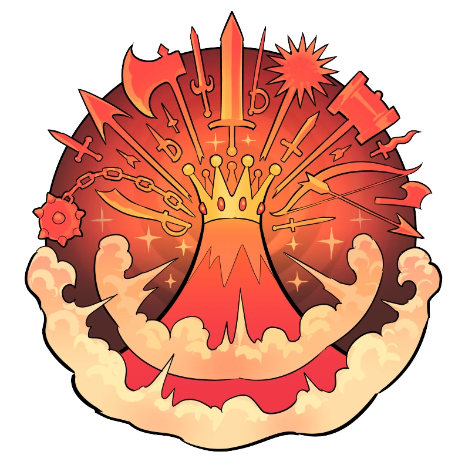
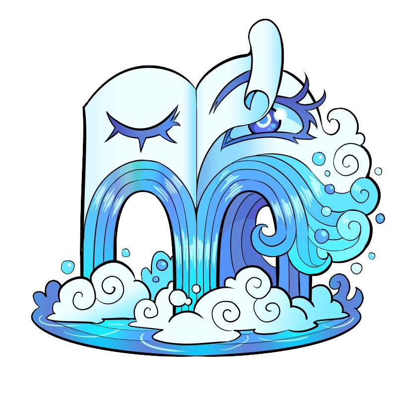
撕裂大陸時代（Torn Continent Era）
概觀
一如往常，戰爭席捲了大陸。學者與外交官爭論究竟是誰挑起事端：聯邦聲稱自己是主動自衛，攻擊了一支 Emmechia 巡邏隊，而據稱那早已不是對方第一次侵犯邊境。Emmechia 則表示對這種事毫不知情；中央諸公國卻否認曾准許他們深入其領地巡邏，顯然也願意為此動武。
三方戰火全面爆發時，抽籤政體也不願被排除在外。新成立的戰時議會以 Auslier 商隊遭襲為由，一致表決捍衛自身利益。奧術學院再次成為風暴之眼：被戰爭狂風包圍的中立地帶。
撕裂大陸時代的陣營
低地聯邦（Lowland Federation）
低地聯邦是龐大的同盟國家群，以對民主與自由的共同信念團結。即使各國法律與文化認同彼此衝突，也會為共同生存分享資源與情報。對低地人來說，一條街上最重要的人就是鄰居。
分支：諜報（間諜與幻術師）；行政（他們的上司）。每個分支各有掌控記錄欄。
Emmechia 王國（Kingdom of Emmechia）
這個龐大君主國長年衰落，急切希望透過勝利鞏固力量與邊界。唯一的直系繼承人年紀太小，無法治理國家；老邁君主因此想把國家的垂死掙扎，轉成新一個十年的安定，確保兒子接掌的是真正的強權。
分支：軍事（皇家陸軍）；典藏（戰利品獵人）。每個分支各有掌控記錄欄。
中央諸公國（Central Principalities）
顧名思義，這是由多個公國組成的多元集合。它曾像 Emmechia 一樣，是一個君主國；後來，一位遭人憎恨的國王，其眾多兒子瓜分土地，使國家分裂。數百年後，競爭與敵對使他們把戰爭視為機會，將一群有志登位的親王淘汰成唯一君主。這股唯利精神如野火蔓延，尤其在野心勃勃的公國法師之間；他們都希望向未來國王證明價值。
分支：軍事（民兵與傭兵）；研究（有志成為大法師的人）。每個分支各有掌控記錄欄。
Auslier 抽籤政體（Auslier Demarchy）
整個國家由數個議會治理，議員全透過抽籤隨機選出，分別監督教育、外交等事務。這場衝突能帶給它的利益不多；若非收到他國掠奪 Auslier 商業活動的報告後，新軍事議會一致表決介入，它大概原會置身事外。
分支：資源（貿易公司）；諜報（挑釁特務）。每個分支各有掌控記錄欄。
奧術學院的阿斯提爾與裝備範例
占卜者（Diviner）III：神聖
| 項目 | 資料 |
|---|---|
| 核心／能量 | 古代（Ancient）／3 |
| 過熱 | 空白記錄欄 |
| 零件 | 複雜法術結構（Complex Spellwork）：−1 能量 |
| 零件 | 占卜典籍（Divination Codex）：從「察言觀色」清單提 1 個問題 |
| 機體動作：預見未來（Future Sight） | 「察言觀色」時，可以詢問迫近未來的事情 |
| 攜行 | 射線步槍（Rayrifle）III：遠射／無限、雙手（ranged / infinite, 2H） |
| 收納 | 力場短刀（Forceknife）III：近戰／剋敵、貼身（melee / bane, intimate） |
許多人很快就會指出：阿斯提爾出現在衝突之中，本身已是夠明確的預兆。即便如此，占卜者機型仍有強大的戰略作用。許多軍隊的戰術，都是在最後一刻由占卜者的預言決定。
舞者（Dancer）III：奧術
| 項目 | 資料 |
|---|---|
| 核心／能量 | 結晶（Crystalline）／3 |
| 過熱 | 空白記錄欄 |
| 零件 | 變色龍斗篷（Chameleon Cloak）：隱形一個場景；你接下來承受的風險為「暴露」 |
| 零件 | 輸入通道（Input Channel）：以 +引導 抗逆危險 |
| 機體動作：輕若羽毛（Featherlight） | 你絕不會因墜落或機動動作而失足、失去平衡 |
| 攜行 | 巨刃（Greatblade）III：近戰／範圍、雙手（melee / area, 2H） |
舞者只有一個設計目的：在敵軍陣形內外編織美麗的破壞，自己卻毫髮無傷。為了優雅退場，多數機體都裝有隱匿儀式。
裝備
簡化典籍（Simplified Codex）I
遠射／危險、奧術、剋敵（ranged / dangerous, arcane, bane）。多數奧術典籍落到凡俗之人手裡毫無用處。幸好這一版經過大量刪改、簡化，讓完全的新手也能施放幾個基本破壞法術。
七彩噴霧（Colour Spray）I
遠射／範圍、無力（ranged / area, weak）。學院惡作劇者的必備品：小玻璃瓶裝滿附魔水，能將任何碰到的表面染成幻象色彩。過幾天……就會退了。
火砲（Cannon）II
狙擊／巨大、斬殺（sniper / huge, vorpal）。大多數人對非魔法武器沒什麼興趣，尤其考量學院的聲望。不過，西方砲手近幾年已逐漸打出名號。
巨像連射弩（Colossus Repeater）III
遠射／突襲、衝擊、雙手、耗能（ranged / blitz, impact, 2H, drain）。採用與普通弩相同的機構，設計來射出魔法充能弩矢，追求最大的穿甲能力。必要時，天資出眾的引導者能快速操作再裝填機構，連續補射數發。
接觸符文（Contact Runes）III
近戰／裝填、不可靠、毀滅（melee / reload, unreliable, ruin）。在阿斯提爾雙手與手臂刻上高能魔法符文，便能形成難用卻威力狂暴的近戰武器。
睡夢沼澤
Palus Somni
睡夢沼澤（Palus Somni）
概觀
自太古以來，地球上死去的一切，都無可抗拒地被拉向頭頂的月亮，在塵土飛揚、沒有空氣的荒原醒來，既不呼吸，也不明所以。亡者受到太陽標記，隨後被驅趕著穿過寒冷月海，來到睡夢沼澤（Marsh of Sleep）。在這裡，古老的「陰影之約」（Compact of the Shade）保護他們：接受太陽終將吞噬你的形體，你就能在此安全生活。在這項協議下，沼澤發展成不受歲月影響、風格混雜的國度，奇異城市令人想起早已失落的地球；心懷感激的亡者則成為太陽之下的一種公民，當他們覺得時日已到，便無比情願地走入太陽烈火。
太陽的統治持續到地球巫師降臨月球，掠奪亡者街區，並為至高宇宙權力挑戰太陽。至今一年又一天，巫師與太陽災難般交鋒；阿斯提爾與撼動大地的魔法，衝進一場場猛烈卻無定論的戰鬥，使月面大片地區燃起火海。在這裡，死亡令人困惑，很少持久，總能在某種程度上逆轉。未結盟的亡者不是被巫師擄走，就是被太陽徵召，或者經常只是突然被流彈蒸發。許多人憤怒卻無力，轉而投向遭禁的「活死人」（Living Dead）理論家。他們同時拒絕陰影之約與巫師，密謀不可想像之事：將月球從地球與太陽的二元統治中解放，脫離軌道，駛向太空。
威權：地球與太陽的二元統治（The Duality of Earth & Sun）
才華洋溢的巫師與燃燒的太陽僕從，為宇宙至高支配權在整個月面爭鬥。戰爭已持續一年又一天，雙方目標都沒有重大進展。月球本身的力量使他們不死；他們很可能永遠打下去。
領袖：只要月面被照亮，太陽就能監督僕從，以近光速的帶電粒子語言尖叫著傳達直接命令，送入爪牙熱切的耳中。地球一方則由一群險詐的巫師領主較間接地領導：航行者議會（Voyager Council）。其領導地位取決於個人聲望，流動變化得令人不安。
美學：太陽閃焰、奇異物質、極光、黑曜石碎片、燃燒符記、核爆、雷暴、飛行槍騎兵、隕石、浮空山嶽、移動堡壘、光速彈藥。
義軍：活死人
活死人理論認為，要以自己的權利活著，就必須與專橫天體的威權切割。因此，為卸下月亮的枷鎖，活死人透過理論家小組，在地球與太陽的宇宙暴力之中實驗，共同發展「解構」之科學。
領袖：較主流的理論家，私下服膺樹懶王（Sloth King）謹慎而審慎的判斷；激進派卻很少承認房裡那頭大地懶。
美學：超現實主義、炫目迷彩、卡通詭計、粒子加速器、地下迷宮、滅絕生物、偷來的硬體、舞台魔術。
活死人（The Living Dead）
概觀
活死人理論認為，要以自己的權利活著，就必須與專橫天體的威權切割。為卸下月亮的枷鎖，他們透過理論家小組，在地球與太陽的宇宙暴力之中實驗，共同發展解構之科學。
領袖：較主流的理論家私下服膺樹懶王謹慎、審慎的判斷；激進派卻很少承認房裡那頭大地懶。
美學：超現實主義、炫目迷彩、卡通詭計、粒子加速器、地下迷宮、滅絕生物、偷來的硬體、舞台魔術。
活死人派系範例
樹懶王的隨從（The Sloth King’s Retinue；特務 Agents）
元老中的元老；樹懶王的隨從挖出了最初活死人使用的古老藏身地。這群務實的哺乳類，由大地懶樹懶王領導；只要認同理論依據，他就能完成名副其實的工程奇蹟。
記錄欄：耗竭？／掌控。
因果騎士（The Causal Cavaliers；奇異 Strange）
騎士代表高能量祕法學最尖端的發展，以抓住機會「衝浪」熱核火球最為人知；他們竊取火球能量，穩定達到超光速。結果發現，此後打破因果關係是無可避免、難以預測，而且有用得不可思議的事。
記錄欄：耗竭？／掌控。
影像背叛者（The Treacher of Images；學者 Scholars）
背叛者團隊的畫作栩栩如生，唯一能確認真假的方法，就是一頭撞上承載畫作的岩石。她利用這個特性，經常以滑稽方式誤導地球巫師、太陽僕從，尤其是樹懶王。
記錄欄：耗竭？／掌控。
蟻獅旅（Antlion Brigade；盜匪 Bandits）
混亂戰鬥中，彈藥、阿斯提爾，甚至整座堡壘，常常不翼而飛。令人驚訝的是，它們往往被地面吞掉，這正是蟻獅旅動手的明確徵兆。他們的「洞法戲法」，長年都是取得新鮮地球奧術器物、供實驗使用的重要手段。
記錄欄：耗竭？／掌控。
奔蜥（Running Lizards；軍事 Military）
在沼澤，恐龍過日子是再尋常不過的景象。這給奔蜥絕佳掩護：這群關心社群的恐龍理論家，駕駛偽裝的蜥形阿斯提爾，深入戰區救援受困者。
記錄欄：耗竭？／掌控。
人間樂園（Garden of Earthly Delights；供應者 Suppliers）
這是一項長期實驗，研究不安全地大量存放地球奧術器物，究竟可能多有用。樂園是受控制的地下災區；它製造嶄新恐怖事物，由全副武裝、專心常駐的理論家隊伍開採、研究、交易。
記錄欄：耗竭？／掌控。
永恆圖書館：獻給活聖師 Zemelien
本圖書館獻給活聖師（Living Hierophant）Zemelien，我等之中第一位征服死亡者。若無其功業，今日便沒有我們。
Zemelien 對死後生命的恐懼眾所皆知，曾廣泛實驗徹底消滅靈魂的概念。和當時許多巫師一樣，其研究最終以自身實驗告終，作為嚴謹與決心的終極考驗：將自己衰老的身體變成一棵松樹，每一根松針都刻上奧術符記，至今大部分仍未解讀。
為紀念這份無可取代的成果，我們從地球移植了一段 Zemelien 的枝條到這顆可憎月球，讓其見證我們終結那可恨宇宙秩序的榮耀事業。眼前這棵樹，是以我們最優秀的植物魔法促成，幾乎完美重生的原樹！
［特此公告：航行者議會懸賞重金，徵求再生聖師（Regrown Hierophant）Zemelien 目前下落的任何消息。其於上上週二離開本大廳，已超過一週無人見過。若遇見再生聖師，切勿接觸，應前往最近的遠語站，通知 Drem 議員。］
——暗星（Dark Star）艦上永恆圖書館的手刻告示，日期不詳。
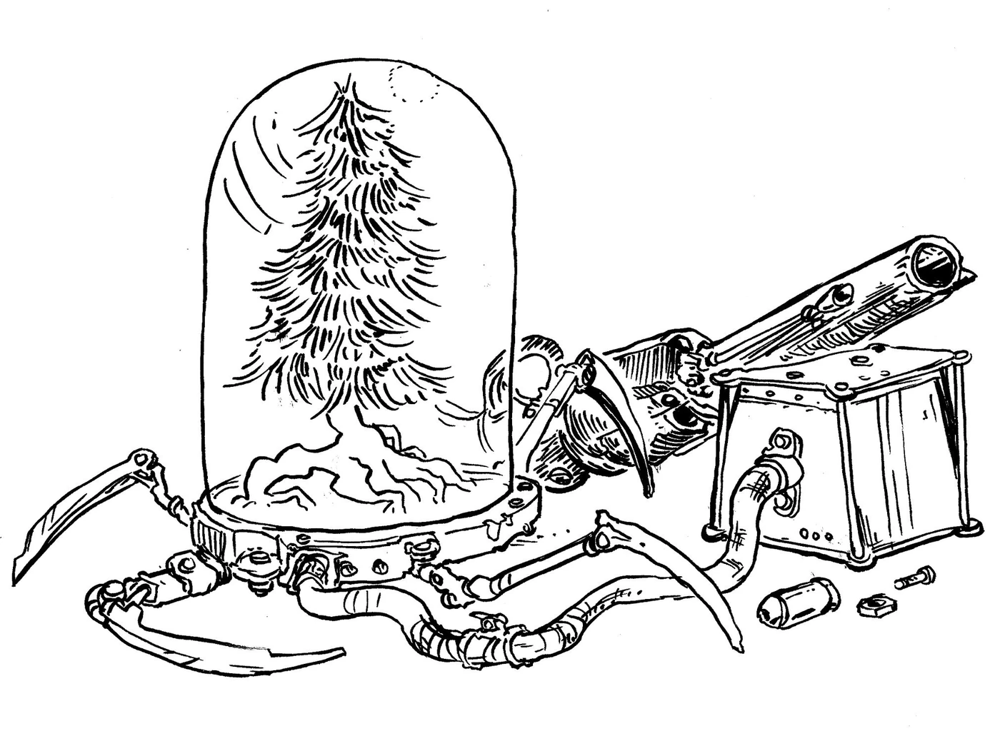
地球與太陽的二元統治
概觀
重裝巫師與燃燒的太陽僕從，為宇宙至高支配權在整個月面爭鬥。戰爭持續一年又一天，雙方目標都沒有重大進展。月球自身的力量使他們不死，他們很可能永遠打下去。
領袖：只要月面被照亮，太陽就能監督僕從，用近光速帶電粒子的語言，將直接命令尖叫著傳入爪牙熱切的耳中。地球一方由一群險詐的巫師領主較間接地帶領：航行者議會（Voyager Council）。其領導地位取決於個人聲望，流動變化得令人不安。
美學：太陽閃焰、奇異物質、極光、黑曜石碎片、燃燒符記、核爆、雷暴、飛行槍騎兵、隕石、浮空山嶽、移動堡壘、光速彈藥。
部門範例
暗星（The Dark Star；軍事 Military）
天空中，一隻被雷電環繞的巨大藍眼，召喚出足以煮沸海洋的奧術力量。那不是暗星，只是其武器的能量特徵。它的本體是從地球一條山脈雕出的浮空堡壘，艦員是地球最出色的附魔師；夜裡隱形掠過頭頂時，會使人湧起無以名狀的恐懼。
太陽獵犬（Hounds of Sol；諜報 Subterfuge）
獵犬是兇惡、如蜘蛛般的構裝體，由鋸齒狀火山玻璃構成，核心是有知性的熔融金屬。牠們的特定任務，是揪出活死人這類太陽叛徒。驚人的智慧是雙面刃：既使牠們成為出色偵探，也使牠們普遍容易煽動叛亂，甚至倒戈。
折射行列（The Refractive Procession；資源 Resource）
這群被選中的太陽流溢體，永遠帶著一位敗亡神祇蒸餾、結晶後的心智，走向月球的向陽面。陽光穿過行列，發生折射，化為新穎的實體形狀；這些形體可再披甲、鍛造成最強大的太陽僕從。
陰謀範例
Teal 議員的最後誘惑（Councillor Teal’s Final Temptation）
一個煽動叛亂的獵犬小組，接觸了航行者議會中地位穩固的 Teal 議員。他們打算餵給議會假情報，誘使她落入掌握，再將她的心智結晶，用來折射出自己的叛離僕從。
太陽黑子計畫（Project Sunspot）
太陽從高處直接傳令給月球上的部隊。Silver 議員懷疑地球可以利用這點：若一支精銳巫師小隊能前往太陽，擾亂其外層，接下來的混亂就能讓地球取得重大進展。
睡夢沼澤的阿斯提爾與裝備範例
跳蟲（Springtail）III：元素
| 項目 | 資料 |
|---|---|
| 核心／能量 | 自然（Natural）／3 |
| 過熱 | 空白記錄欄 |
| 零件 | 武器導管（Weapon Conduit）：用於武器的能量 +2 |
| 零件 | 占卜典籍（Divination Codex）：「察言觀色」時，額外問「什麼事即將發生？」 |
| 機體動作：超光速流形（Hyperlight Manifold） | 你可以使用「子系統」，同時出現在另一個地方 |
| 攜行 | 力場連射器（Force Repeater）III：遠射／防禦、無力（ranged / defensive, weak） |
| 加裝固定武器 | 超因果鉤（Paracausal Hook）III：近戰／毀滅、決勝、凌亂、搭載、耗能 3（melee / ruin, decisive, messy, mounted, drain 3） |
跳蟲以因果騎士某次遠征取回的奇異油性荊棘供能，代表下一代因果工程，只需一點魔法脈衝就能扭曲現實。它只製造過一架，卻不知為何，越來越多架不斷在最意想不到的地方冒出來。
重寫本（Palimpsest）III：奧術
| 項目 | 資料 |
|---|---|
| 核心／能量 | 結晶（Crystalline）／2 |
| 過熱 | 空白記錄欄 |
| 零件 | 使魔矩陣（Familiar Matrix）：針使魔（Needle Familiars）III |
| 零件 | 標準化零件（Standardised Parts）：休整時 +1 代幣，只能用於修理 |
| 機體動作：重寫本系統（Palimpsest System） | 可以帶著優勢「編織魔法」，複製近期用來對付這架阿斯提爾的任何魔法或武器 |
| 攜行 | 奇異盾（Strange-Shield）III：近戰／防禦、守護、無限、危險、雙手（melee / defensive, ward, infinite, dangerous, 2H） |
| 矩陣 | 針使魔 III：遠射／束縛、無力（ranged / restraining, weak） |
重寫本是地球進攻準則的核心，以嗡鳴的奇異盾與隨侍的使魔群構成不祥的推進戰線，外露晶體核心因吸收魔法而發光。為使魔法更有力，常被拿來進行實彈砲擊練習；菁英引導者的私人重寫本，攜帶著大多數理論家夢寐以求的魔法樣本。
裝備
游離頭骨（Wayward Skull）I
堅固、低語、自主行動（sturdy, whispering, autonomous）。月球上比以往任何時候都容易找到頭骨，而且往往是情報與建議的好來源。和一顆交朋友，最新傳聞就都會傳進你耳裡。
投射槽（Projection Vat）II
龐大、架設、密封（enormous, set-up, sealed）。月球大部分表面不適合人員活動。為避開這問題，人們有時會將自己浸入剝奪感官的投射槽，以星體投射跨越中等距離。
群獸陣列（Bestiary Array）II
遠射／剋敵、攻防兼備、凌亂、危險（ranged / bane, versatile, messy, dangerous）。活死人常用的武器，將力量真言投射成刺鼻煙霧構成的獸形。難以捕捉，卻能有效得令人惱火地拆解阿斯提爾附魔。
奇異盾（Strange-Shield）III
近戰／防禦、守護、無限、危險、雙手（melee / defensive, ward, infinite, dangerous, 2H）。發光的半透性牢籠包住這塊詛咒物質，讓持有的阿斯提爾能用作盾牌。它會不分對象地吞噬、壓縮落入其中的一切物質與大部分能量，因此最好萬分謹慎使用。
超因果鉤（Paracausal Hook）III
近戰／毀滅、決勝、凌亂、耗能 2（melee / ruin, decisive, messy, drain 2）。原是為超光速用途設計的鎖鉤，後來發現，只要瞄得夠準，也非常擅長扭曲實體物質，將其移入尚未發現的維度，反過來亦然。請站遠一點。
Valdemar 的冰原
The Ice of Valdemar
Valdemar 的冰封（The Ice of Valdemar）
概觀
Valdemar 人早已忘記和平是什麼模樣，夏日溫暖也只剩遙遠記憶。這片曾供養整個大陸的糧倉，已被冰雪封鎖超過三十年。國王 Morgan 二世遭刺殺後不久，神祕詛咒降臨大地，帶來永不止息的冬天。兇手身分不明，但許多人懷疑，Valdemar 常備軍「王家衛隊」（Kingsguard）內部存在陰謀……
隨後爆發的內戰，造成和饑荒、嚴寒同樣多的死亡。王家衛隊在最初幾場戰役輕易取得優勢；然而季節輪轉，寒冰不退，保皇派始終無法獲得全面勝利。戰事停滯，凍成根深蒂固的仇恨。如今，只有最頑強的生命仍留在 Valdemar，承受嚎叫狂風與刃冰（razorice）的侵襲。那些太窮、太固執，或太莽撞而未逃往暖地的人，聚在有圍牆的聚落，仰賴魔法或凡俗手段，抵禦無情天候與敵人入侵。這些堡壘如雪海孤島，由「鐵馬」（Iron Horses）連結：在鐵軌上高速行駛的巨型裝甲車輛。由於復辟政權控制鐵路，多數殘存居民即使不真心忠誠，也不得不臣服。
仍然反抗王冠的少數人，夢想酷寒終將消融。分散、各異的抵抗勢力「春秋分」（The Equinox），正以一切可能方式戰鬥，讓自由之夢不滅。
威權：復辟政權（The Restoration）
Morgan 二世原定放棄君主對 Valdemar 的絕對權力，卻在幾天前死去。貴族轉而聚集在王家衛隊首領身旁，如今他自稱國王。復辟政權掌控幾乎所有運輸，擁有先進阿斯提爾大軍，以及冷酷無情的權力欲；不論多少人必須受苦，都要讓一切「恢復正常」。
領袖：自號 Gareth 一世，得到剩餘貴族效忠。他野心勃勃、詭計多端，掌控維繫 Valdemar 生命的鐵路。對他而言，抵抗勢力全面屈服、君主制再度統治，只是時間問題。
美學：金銀色板甲與鎖甲、家族紋章、珠寶、王冠、用力運作時冒出的黑煙與煤灰、白色披風。
義軍：春秋分
Morgan 二世在承諾的《改革宣言》（Declaration of Reform）發布前幾天遭殺害，Valdemar 人民為之吶喊。數個各異派系因共同渴望而結盟：推翻新王，讓春天終於到來。
領袖：無鄉的 Isabelle（Isabelle of Nowhere），被人頌為 Valdemar 古代戰士聖人的轉世。她本人雖否認，熱忱與戰鬥才幹仍使她成為春秋分事實上的領袖。
美學：工業廢料、改用的垃圾，混合宗教與革命圖像。白花、紅旗。悉心彩繪的拳頭與駕駛艙。能量來源無所不包，從古老聖物、刃冰碎塊，到早已消失果園的最後一顆種子。
春秋分（The Equinox）
概觀
Morgan 二世在承諾發布《改革宣言》前幾天遭殺害，Valdemar 人民為之吶喊。數個各異派系，因推翻新王、讓春天終於到來的共同渴望而結盟。
領袖：無鄉的 Isabelle，被頌為 Valdemar 古代戰士聖人的轉世。她本人雖否認，熱忱與戰鬥才幹仍使她成為春秋分事實上的領袖。
美學：工業廢料、改用的垃圾，混合宗教與革命圖像；白花、紅旗；悉心彩繪的拳頭與駕駛艙。能量來源從古老聖物、刃冰碎塊，到已消失果園的最後一顆種子。
春秋分派系範例
鋼鐵戰車（The Steel Chariot；游擊隊 Guerillas）
Isabelle 的親軍，效忠於「她」與 Valdemar 的解放。他們運用優越機能量與地方知識，發動打帶跑攻擊；但被逼入絕境時，他們願為她而死。
記錄欄：耗竭？／掌控。
平等者聯盟（Union of Equals；煽動者 Firebrands）
弒君事件前，這些人是尋求重大改變的年輕革命者與知識分子。如今他們更老、更有智慧，卻依然渴望自由。聯盟的煽動者使 Valdemar 人保有希望、繼續工作，也願意戰鬥。
記錄欄：耗竭？／掌控。
紅柄（The Red Hilts；特務 Agents）
長年令人畏懼的革命反君主制幹部，輕易成了 Morgan 二世之死的代罪羔羊。事實上，他們支持他的宣言，甚至準備解散組織。如今，各地保皇派的心口，再次長出了紅色刀柄。
記錄欄：耗竭？／掌控。
Cook 傭兵團（Cook’s Company；軍事 Military）
少數站在春秋分一方的傭兵團之一。同名領袖出生於 Valdemar，基於非常私人的理由痛恨 Gareth。兵力雖少，卻經過多年大陸戰事磨練，身經百戰。
記錄欄：耗竭？／掌控。
漂泊眾（The Vagabonded；供應者 Suppliers）
半是藝術家團體，半是工程師；漂泊眾是維持春秋分機械運作的建造者。他們能把丟棄金屬廢料與毀壞引擎變成功能完善的武器，令人驚嘆，完全值得包容偶爾的怪癖或花俏設計。
記錄欄：耗竭？／掌控。
達芙奈樹靈（The Daphnaie；奇異 Strange）
Valdemar 農田如此豐饒的祕密，是由樹靈照料。這些人形植物憑藉支配自然的強大力量，才使許多不受保皇派控制的堡壘與聚居地存活。但多年寒冬耗盡力量，時間所剩無幾。
記錄欄：耗竭？／掌控。
復辟故事：朋友已經到了
刃冰之劍切進 Isabelle 的阿斯提爾，彷彿受祝福的裝甲根本不存在。她按住側腹，巨型機械的雙手精確模仿同樣動作。全身整合迴路讓她在戰鬥中如舞者般優雅，缺點卻是神經連結傳回的，不只是觸覺，也包括疼痛。痛得眼前發黑。一記由上而下的重擊，Isabelle 的阿斯提爾撞上冰凍地面。束帶失效，她在駕駛艙裡被彈得跳起。血的金屬味充滿口中。
「所以，這就是傳說中的無鄉 Isabelle。全 Valdemar 的神聖救世主。」語音投射器傳來刺耳笑聲。Jocasta Nixon 的阿斯提爾已經重新長出冰刃尖端。她在身旁旋轉這件煉金奇蹟。「不必這樣結束。我也許願意寬大處理；只要你交代其他小夥伴在哪裡，就能接受治療。」
Isabelle 啐了一口。她的阿斯提爾以拳頭掘進地面，撐起身體，再次踉蹌站立。它猛地一扯，忍痛將冰片拔出機身。她把巨大冰錐當成棍棒握著，手指深扣進冰凍武器。
「把你打昏之前，有兩件事。第一，你得開始瞄高一點。這一塊根本不可能打中我的核心。」
Jocasta 聲音中的笑意消失了。「第二呢？」
一記爆炸般的衝擊，把王家衛隊的阿斯提爾打翻在地。當地感測網亮起四面八方的接觸訊號，每一個都以猛烈火力接戰她的一名衛兵。
「第二，」Isabelle 如著魔般逼近，「你不必問我的朋友在哪裡。他們已經到了。」
——《復辟故事》（A Tale of Restoration），作者不詳，日期不詳。
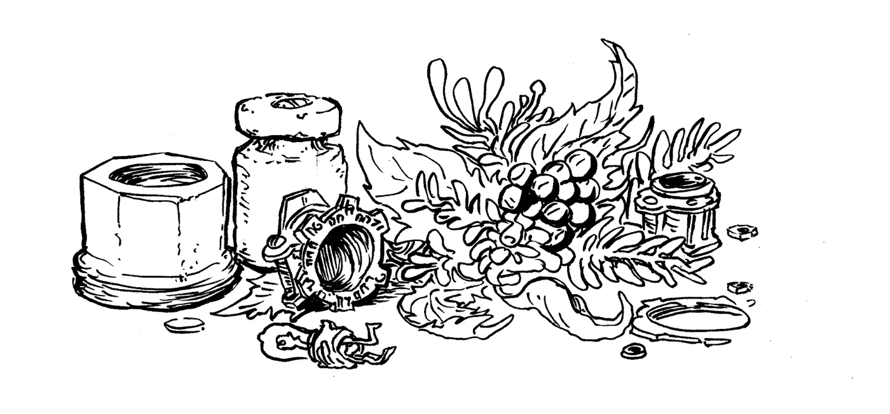
復辟政權（The Restoration）
概觀
Morgan 二世在放棄君主對 Valdemar 絕對權力前幾天死去。貴族轉而聚集於王家衛隊首領身旁，如今他自稱國王。復辟政權掌控幾乎所有運輸，擁有先進阿斯提爾大軍，以及冷酷無情的權力欲；不論多少人必須受苦，都要讓一切「恢復正常」。
領袖：自號 Gareth 一世，受到殘存貴族效忠。他野心勃勃、詭計多端，掌握維繫 Valdemar 生命的鐵路。對他來說，抵抗勢力全面屈服、君主制再度統治，只是時間問題。
美學：金銀色板甲與鎖甲、家族紋章、珠寶與王冠、用力運作時冒出的黑煙與煤灰、白色披風。
部門範例
王家衛隊（The Kingsguard；軍事 Military）
過去是保護王室的菁英戰士團；Morgan 二世死後，王家衛隊的規模與野心雙雙膨脹。此後多年，他們取得新型強大阿斯提爾，強迫民眾服從，並擊敗大多數反抗新秩序的武裝力量。Gareth 一世的得意門生 Jocasta Nyxon，正帶頭以鐵腕粉碎春秋分。
保皇派（Royalists；諜報 Subterfuge）
春秋分內外的反革命力量，試圖協助保皇部隊恢復君主制，希望藉此讓土地重獲生機。有些是怯懦的投機者，但許多人只是害怕：若失去 Gareth 王統治下的「安全」，替代它的會是什麼？
燙傷之手（Scalded Hands；資源 Resource）
這個祕密的工藝師與煉金術師公會，是復辟政權戰爭機器的引擎，也是王國魔法力量的來源。他們進行黑暗、褻瀆的儀式，經常囚禁魔法生物，汲取其力量，或用來驅動濃煙滾滾的阿斯提爾。
陰謀範例
扼喉（Chokehold）
王家衛隊新領袖 Jocasta Nyxon，正封鎖通往那些拒絕交出春秋分同情者之城鎮的鐵路。時間與補給，都快耗盡了。
來自下方的請求（Request from Below）
一名惡魔使節請你協助，阻止燙傷之手襲擊她的煉獄位面、擄走族人當作能量源。若能以武力關閉傳送門，就能重創他們的戰爭能力。
Valdemar 的阿斯提爾與生物範例
生物範例
霜熊（Frostbear）I（臨演級；凡俗）
- 利齒與爪 I：melee。
「從沒在這麼南邊看過。牠們越來越餓了。」
煉獄火花（Infernal Spark）I（臨演級；褻瀆）
- 灼燙之觸 I：近戰／剋敵（melee / bane）。
「小型戰馬用低階惡魔與元素生物供能。但引擎越大，能量源就越大。小子，我曾經看過母艦引擎裡面。就那麼一次。」
憎惡體（Abomination）II（配角級；奧術）
- 撕裂爪 II：melee。
- 酸性吐息 II：遠射／範圍（ranged / area）。
「多數城鎮都在進行某種地下工程。新希望鎮挖得太深。這世界有些東西，比任何保皇派都更糟。別忘了。」
還魂者（Revenant）III（配角級；褻瀆）
-
Tarrasque III。
- 斷弓（Broken Bow）III：遠射／防禦（ranged / defensive）。
「不論我們中了什麼詛咒，它做的都不只是把天氣變冷。嚴重毀損的阿斯提爾，載著死去多時的駕駛，徘徊舊戰場，以支離破碎的默劇重演最後時刻。別干涉；作夢的人不喜歡被喚醒。」
重甲騎兵（Cataphract）III：凡俗
| 項目 | 資料 |
|---|---|
| 核心／能量 | 煉金（Alchemical）／2 |
| 過熱 | 空白記錄欄 |
| 零件 | 護禦（Warding）：工匠護盾（Artisan Shielding），+ward |
| 零件 | 煉金套組（Alchemical Suite）：有人「率領出擊」時，每種藥水各拿 1 份 |
| 機體動作：碾過去！（Run Them Down!） | 助跑衝擊時，帶著優勢進行「決定性打擊」 |
| 攜行 | 關刀（Glaive）III：近戰／決勝、架設（melee / decisive, set-up） |
| 收納 | 硫磺爆雷（Brimstone Petard）III：遠射／範圍、剋敵、不可靠、有限（ranged / area, bane, unreliable, limited） |
重甲騎兵原是外國製造，後來卻成了王家衛隊的招牌阿斯提爾。然而，多年戰鬥耗盡備用零件庫存，政權已轉用其他設計。即使裝甲開始失去光澤，它們依然能打出重拳。
戰錘（Hammer）III：神聖
| 項目 | 資料 |
|---|---|
| 核心／能量 | 古代（Ancient）／4 |
| 過熱 | 空白記錄欄 |
| 零件 | 武器導管（Weapon Conduit）：用於武器的能量 +2 |
| 零件 | 標準化零件（Standardised Parts）：休整時 +1 代幣，只能用於修理 |
| 機體動作：永不投降（Never Surrender） | 寡不敵眾時，「挺過風暴」具有優勢 |
| 攜行 | 光輝戰錘（Radiant Hammer）III：近戰／毀滅、決勝、耗能 2、雙手（melee / ruin, decisive, drain 2, 2H） |
戰錘是鐵戰車（Iron Chariot）進攻時在前方開路的攻城槌。它們捨棄生存能力，換取火力；力量往往來自神聖遺物，由信仰堅定的引導者掌控。傳聞 Isabelle 本人就駕駛其中一架，許多保皇派已倒在她手下。
魔法物件表
Magical Objects
魔法物件：d66 表
| d66 | 物件 |
|---|---|
| 11 | 一套永遠潔淨無瑕的廚具。 |
| 12 | 漂浮在主人頭旁、提供智慧的寶珠。 |
| 13 | 總會依喊出的正反面落地的硬幣。 |
| 14 | 一籃瓷球，放在黑布上會自行移動，排列成太陽系模型。 |
| 15 | 任何旁觀者都覺得是為自己量身打造的裝飾劍。 |
| 16 | 一罐能使持有者免於恐懼的沙。 |
| 21 | 舉起對準場景，就能完美記錄景象的泥板。 |
| 22 | 可用手指暫時書寫的地圖。 |
| 23 | 持續指向最近隱形魔法來源的纖細水晶針。 |
| 24 | 能把釘子敲進任何東西的鐵鎚。 |
| 23［原書重號］ | 讓持有者無法明知故犯說謊的銀質代幣。 |
| 26 | 一小瓶能燒穿玻璃以外一切物質的液體。 |
| 31 | 塗金戒指，會改變佩戴者施展的占卜，顯示更樂觀、更幸運的未來與結果。 |
| 32 | 在違背誓言或承諾者手中會長刺的鐵玫瑰。 |
| 33 | 能捕捉持有者指定對象話語的寶石。 |
| 34 | 能阻擋任何洪水的盾。 |
| 35 | 在穿戴者四周投射防水屏障的羽毛披風。 |
| 36 | 只有日月食期間才會開啟的盒子。 |
| 41 | 附近有毒物時，會輕輕震動的一組刀叉。 |
| 42 | 只會擲出 3 的手工骰子。 |
| 43 | 能黏合任意兩樣東西的黏著劑。 |
| 44 | 能分離任意兩樣東西的溶劑。 |
| 45 | 裝有寶石鏡片的面具，向任何對穿戴者讀心的人提供錯誤資訊。 |
| 46 | 壓入任何表面便與之融合，直到開鎖才分離的鎖。 |
| 51 | 說出觸發詞後便化為毒藥的蠟製草莓。 |
| 52 | 插在哪裡就會慢慢破壞當地土壤的旗。 |
| 53 | 永遠用不完的線球。 |
| 54 | 可摺到放入口袋的紙製假魔鎧。 |
| 55 | 放在哪裡就能自由懸浮，承受數公斤重量的薄石碟。 |
| 56 | 引導持有者找到遺失鑰匙的鑰匙圈。 |
| 61 | 使佩戴者避開偵測生物魔法的皮頸圈。 |
| 62 | 能自我修復，並變形適合任何頭形的王冠。 |
| 63 | 能切斷任何非魔法繩索、細繩或鎖鏈的短刀。 |
| 64 | 鑲寶石的護手，能在頭頂召來風暴。 |
| 65 | 能碰觸無形之物的手套。 |
| 66 | 彼此作為傳送門的一對畫框。 |
魔法武器表
Magical Weapons
魔法武器：d66 表
| d66 | 武器 |
|---|---|
| 11 | 用受傷者血液化成鎖鏈、束縛他們的矛。 |
| 12 | 能抽出任意長度劍刃的鞘。 |
| 13 | 魔鎧用長砲，發射封存在魔法中的岩漿砲彈。 |
| 14 | 裝滿魔杖的發射器，命中時施放枯萎法術。 |
| 15 | 擲出時拖曳火焰的標槍。 |
| 16 | 讓持有者引下雷電的魔杖。 |
| 21 | 彈丸由受縛靈體導引的燧發手槍。 |
| 22 | 奪命時發出可怕咆哮的華飾戟。 |
| 23 | 能精準追蹤另一把留下傷口的雙劍。 |
| 24 | 魔鎧尺寸、能噴射冰霜光束的法杖。 |
| 23［原書重號］ | 飾有元素水晶，為弩矢灌注雷霆能量的弩。 |
| 26 | 用祝福林地中生長的樹木製作的弓。 |
| 31 | 一組平衡完美的青銅球。 |
| 32 | 三支銀箭，各附可寫下目標姓名的小牌。 |
| 33 | 一對旨在以毒素淹沒世界的煉金迫擊砲。 |
| 34 | 裝填厚實魔法水晶塊的步槍。 |
| 35 | 不斷滲出黏稠焦油的中空釘頭鎚。 |
| 36 | 弩矢身後留下堅實、可觸碰光路的弩砲。 |
| 41 | 設計用來發射鉛殼卷軸的多膛槍。 |
| 42 | 只留下閉合傷口的平頭處刑劍。 |
| 43 | 一組燧發槍，能短暫打開通往比此界更熾熱世界的細小傳送門。 |
| 44 | 由一根巨大鋸齒獠牙整體雕成的斧。 |
| 45 | 一袋破碎時會猛烈爆炸的小寶石。 |
| 46 | 魔法上無法留下傷口的刀刃。 |
| 51 | 嵌著滲出毒液之刺的長鞭。 |
| 52 | 每發射一次便憑空製造新彈藥的投石機。 |
| 53 | 能以魔法合成小刀的鑰匙圈。 |
| 54 | 輕量騎槍，飾有試圖偏轉傷害持有者魔法的金色符印。 |
| 55 | 裝滿酸液的薄玻璃球，砸碎在目標身上後會慢慢修復、補滿。 |
| 56 | 可安全藏在綁定主人血肉中的銀匕首。 |
| 61 | 發出解咒力場的重鎚，旨在停止魔鎧，又不至於打壞到無法打撈。 |
| 62 | 讓持有者在追擊敵人時短暫飛行的有翼矛。 |
| 63 | 以三支一組精準發射灼熱標槍的裝置。 |
| 64 | 一對長爪護手，儲藏一份冰寒魔力。 |
| 65 | 裝有烙印法術，會在被擊中者身上留下印記的水晶杖。 |
| 66 | 憤怒揮動時會捲起強風的附魔長柄斧。 |
魔鎧附魔敘事遊戲
Enchanting
魔鎧附魔：三人敘事遊戲
你們是一群魔法工匠，聚在一起為一架阿斯提爾附魔。這架魔法構裝體將與它的引導者一同反擊敵人。
- 一人是激進者：看見魔鎧能超越其他人的理解，成為更多可能。
- 一人是摯愛者：對引導者的一切瞭若指掌。
- 一人是勤勉者：清楚敵人帶來哪些威脅。
輪流向其他工匠描述可納入魔鎧設計的法術、附魔或秘器。一人支持提案並解釋原因，另一人反對。接著擲骰，看魔法成果如何。
單獨時擲一顆 d6，但：
- 激進者若描述可能的越界或濫用，不論好壞，增加一顆 d6。
- 摯愛者若描述引導者會有何感受、為什麼，增加一顆 d6。
- 勤勉者若描述這如何反制敵方威脅，增加一顆 d6。
擲所有骰，取最高結果：
- 1–2，瑕疵：反對此設計者可敘述未來的場景，描述它如何失靈，或曾害到某人。
- 3–4，可用：設計者可敘述未來的場景，描述它成功發揮作用。
- 5–6，完美：支持者可敘述未來的場景，描述它如何達成超乎想像的事。
三人認為魔鎧完工時，替它取名。比較瑕疵、可用與完美設計的數量，再敘述遙遠未來中，這架魔鎧及其引導者如何被記住：
- 瑕疵最多：你們是圍在新近殘骸旁的拾荒者。勤勉者先說、摯愛者其次、激進者最後。
- 可用最多：你們是觀看武裝遊行的士兵。摯愛者先說、激進者其次、勤勉者最後。
- 完美最多：你們是參觀展覽的學生。激進者先說、勤勉者其次、摯愛者最後。
超過三名玩家、想加角色時，可考慮：不願同樣錯誤再犯的受困者；對未來有願景的藝術家；不讓建造超出能力所及的務實者；或知道劍終有一日必須化作犁的田園理想者。
衝突回合主持速查
Conflict Turn Quick Reference
衝突回合主持速查
依《AAA_ConflictTurnRef》第 1 頁的回合概要與第 4 頁成果摘要整理。這是供全桌使用的主持流程；六種場景的挑戰、收束與勢力成果已在正文，以連結直接查閱。
每個部門跑一次
標準威權有一個主要部門（5+）與兩個次要部門（4+）；每回合各演一場衝突場景。若「籌畫與準備」等效果暫時改變實力，使用調整後的值。
- 選場景、耗竭派系：選一個衝突場景，指定代表義軍利益的派系並耗竭它。選到已耗竭的派系會使它被摧毀。
- 沒有投入派系？ 若不願或無法投入，仍演出場景，但收束時自動由威權獲勝。
- 依場景演出與擲骰：按場景指示分配角色、提出挑戰；需要擲骰時擲一顆 d6。達到或超過部門實力算義軍成功，否則算威權成功。扮演威權角色時，擲骰失敗可能反而符合你的角色利益。
- 需要自動成功？ 可耗竭派系跳過一次擲骰，為義軍增加一次成功；注意耗竭與摧毀的規則。
- 比較、收束、選成果：依成功與失敗次數決定勝方，選符合場景的收束，再由勝方取得一項成果。
此處勝負與平手依核心書收束規則：成功較多為義軍勝，失敗較多為威權勝；平手全體共同詮釋，不確定時擲硬幣。參考表第 4 頁的壓縮措辭另列於版本差異。
開場與收場要翻哪裡
| 當下需要 | 查閱位置 |
|---|---|
| 選場景、分角色、找挑戰及收束問題 | 六種衝突場景 |
| 檢查部門實力、支柱與穩定度 | 部門 |
| 查派系耗竭、摧毀及掌控 | 派系 |
| 威權勝：從該部門類型選成果 | 部門類型與成果 |
| 義軍勝：選參與本場景的派系，取得其成果 | 派系類型與成果 |
| 檢查收束、平手與結果如何傳回主角 | 收束衝突場景與成果 |
義軍可選的派系，包含起初投入的派系及為跳過擲骰而耗竭的派系。可以為預想的成果設計場景，但不必事先鎖定成果。
最後，把回合事件帶回角色所知的世界。休整時的報紙、報導或人物轉述，都是傳達戰局改變的機會。
開跑前的版本提醒
《Reference_Sheets》第 6、10 頁把次要部門列為 3+；核心書與《AAA_ConflictTurnRef》採 4+。本站流程採核心書，異版數字保留於配套文件版本差異，不混用兩種門檻。
玩家規則的導演筆記
Director Notes for Player Rules
挺過風暴：導演筆記
導演筆記
7–9 仍讓角色挺過去，只是風暴比預想更猛烈。三種代價選哪種，最終由你決定，但玩家有想法時也要願意聽。顯然，沒有聚光就不能要求他燒掉一點。
不論施加何種代價，都不能推翻他確實成功的事實。若是在避開砲火，花更多時間不代表慢到中彈，而是要閃的攻擊比預期更多。
早期版本的 7–9 可以帶來風險，但我覺得這太容易形成循環：你想避免風險，部分成功後卻還是承受風險。因此我刪掉了這個選項。
察言觀色：導演筆記
導演筆記
別太嚴格界定何謂場景改變或結束。尊重玩家為了解情勢所冒的風險，合理地讓他運用所知。不確定時，傾向讓他保留。每次有人發問，你都有機會推進、複雜化當前情勢，通常會很有趣。擲 6 以下時，等於讓玩家挑選自己的麻煩。問誰占上風，答案多半不是他；問誰毫無防備，可能是他希望平安的人；問有什麼遭忽略，可能已經太晚。發揮創意。
釐清疑惑：導演筆記
導演筆記
不用想得太複雜。10+ 就給他想知道的事，至少給明確可用的資訊；7–9 給偏旁一些、相近一些，或可自行推論的線索；6− 就照常做導演動作。
協助或妨礙：導演筆記
導演筆記
這不是複雜動作，不太會造成困擾。明確阻止或促成別人做事，就用它。7–9 讓協助者涉入後續，想把後果歸咎於他也可以。
與全桌決定是否允許擲骰後協助或妨礙。若想讓選擇更有深度，可以允許事後介入，但 7–9 仍承受後果，即使被幫助者得到 10+。
第三個 +1 刻意只來自牽引，不含引力，因為要依靠與某人的引力，就直接用時鐘擲骰。
編織魔法：導演筆記
導演筆記
這個動作也很直觀。若角色想用魔法做操控魔鎧以外的事，而且你認為在能力範圍內，就是編織魔法。魔法能讓許多其他動作辦不到的事成真；這份彈性的代價，就是可能的危難。
濫用編織魔法應讓角色明顯疲憊、難以繼續行動。這是用途廣泛多變的交換條件。
冷卻：導演筆記
導演筆記
關鍵是它需要一點時間。動作期間，你沒在戰鬥、奔跑或密切觀察。也許只一兩分鐘，但對敵人可能是很大機會，因此角色應先爭取空間再喘氣。特質可選，但必須符合行動。從魔鎧系統排除詛咒，用引導；敲掉指節凍冰，不能靠交涉，應是抗逆，或也許交鋒。
交鋒過招：導演筆記
導演筆記
留意玩家使用的手段、武器與對象。影響因素很多，別怕依情況調整擲骰。用交涉時，除非拿武器威嚇，否則武器通常不影響。
若玩家想傷害的人沒有還手，但仍能閃避或防禦，仍須交鋒過招。即使沒有直接危險，仍有很多承受風險的理由：為追敏捷對手而過度冒進、因打不中而生氣，等等。
玩家想繼續與毫無防備的人過招，可以，但應清楚表現出他在戲弄基本已敗的人。這看來應該很殘酷。
動作說的引力，是你與目標的時鐘，不是並肩作戰或旁觀者。但若另一人透過協助或妨礙介入，改用與你的引力，你也可以改推進與他的時鐘。兩者不疊加，只選一個，否則轉眼就填滿。若戰役很少發生正面交鋒，導演也可允許兩者都推進，以維持引力的流動。
決定性打擊：導演筆記
導演筆記
如同交鋒過招，武器射程不對就不能做。對方遠到聽不到，也很難當面痛斥；當然，可以藉談論他來損害名聲或資產，而非直接對他說。用交涉時，10+ 通常是達成對話目的，例如說服、威嚇對方採取行動，或贏得爭論，不是把人嗆到自燃。
目標必須毫無防備，這是核心。想了結仍有防備的人，不是在做這個動作，而是在過度自信，讓你得到使出導演動作的良機。
倒下：導演筆記
導演筆記
三項風險或險境使玩家毫無防備，是真正的危險。有人意圖了結他，也就是故事上相當於決定性打擊而非交鋒過招時，玩家應回應以「倒下」。仍能主動行動，例如主動交鋒過招，但可能觸發超過三項危難的懲罰；每次有人明確「攻擊」你，這個動作就會觸發。
失敗應由你與玩家討論，但不必當場定案。可以先模糊處理：兩架魔鎧衝出視野、只有一架回來；血跡延伸到看不見的地方；逃生艙重重落地。待出擊的行動平息，再決定結果。
率領出擊：導演筆記
導演筆記
行動開始一定要有人擲；忘了也沒關係，可以補擲，把結果帶入後續。用艦員時誰擲都一樣，因為不是任何一人的特質。用才智或抗逆，則必須由提供特質的人擲。跟著才智 −2 的人擬定的計畫，不能讓才智 +3 的人代擲，這不合理。有計畫也不妨礙別人無視它，硬衝出去而用抗逆。
子系統：導演筆記
導演筆記
子系統能迅速解決各種問題，沒有風險，且很多魔鎧可多次使用。玩家陷入困境、還有能量可花時，別怕提醒他。只要正在駕駛魔鎧，而且機體未停用、關閉，就能啟動子系統。
支線劇情：導演筆記
導演筆記
這讓支援者即使面對不適合自己的出擊，也總能運用專長。工匠可修東西，外交官可談判；角色能待在有趣的地方，而非無聊坐在巡洋艦，或因自己是整群引導者中唯一支援者，被迫徒步迎戰魔鎧而身陷險境。
支線最好在率領出擊擲骰時、甚至更早建立。若支線把角色帶離母艦與隊友很遠，要能解釋怎麼抵達。因出擊前有休整，可能事先出發，或用傳送陣等魔法。支線本身不是魔法，但世界其他地方充滿魔法，不必限制得太僵硬。
關鍵是支線強制保持某種敘事隔離。物理上可離主出擊很近，但在保留點花完前，主出擊的效果不能波及你。點數用盡後，兩條劇情可在合適時匯合。
休整場景（二）：導演筆記
導演筆記
提醒玩家：每個衝突回合，每個部門至少需要耗竭一個派系。預設三個部門，就是每次休整有三個派系需要恢復，還沒算上為保證成功而額外耗竭的派系。選休整場景，以及透過籌畫與準備決定每次出擊所獲時，應記住這個數字。
籌畫與準備：導演筆記
導演筆記
要擲這個動作時，團隊應已大致知道下次出擊內容，以及機會可能影響哪些人。若還不清楚，可以直接攤開說：「選這項，這次就能幫某派系」，或「能推倒的支柱是這個」。這完全沒有問題。
僭取者：導演筆記
機人作品通常都在探討身體，不論創作者是否有意如此。機人是自我的投射：巨大而強大，卻披著我們用來描述自己的視覺語彙與速記符號。因此，機人作品經常對障礙與身心障礙者在衝突時期的位置，提出複雜（有時也欠缺深思）的問題。掌握另一具身體，而那具身體又是一架戰爭機器，是什麼感受，又意味著什麼？比較少被探問的，是身心障礙者如何遭壓迫性的權力結構排除、遺忘；更少被探問的，則是那些致力打破這些結構的運動，如何往往也複製同樣的排除，不只針對身心障礙者，也針對其他邊緣群體。
這些議題在賽博龐克等處理人體強化或「改善」的類型中，同樣居於核心，甚至更突出：人體的改變或重新調整輕易可行，卻往往與資本主義剝削的新途徑，以及舊有偏見的新面貌，密不可分。
因此，僭取者正是這些事物的碰撞。扮演僭取者，或主持一場存在僭取者的遊戲時，我懇請你別忘記所描繪的地方與衝突中的身心障礙者，也請思考他們與僭取者明確能取得的那類身體改造，有什麼關係、是否能夠取得。如果同桌的身心障礙玩家願意，當這些主題出現在遊戲中，請留出空間讓他們主導描寫；如果你自己不是身心障礙者，更要確保他們對你與其他人如何處理這些主題的想法和感受，獲得重視。
此外，請把同樣的關懷延伸至承受性別不安、慢性疾病、物質濫用或其他困境的人；在當今社會，掌權者正積極控制並限制他們獲得緩解、治療，甚至同理的機會。
僭取者的核心概念是：你經歷改變，因此能為阿斯提爾供能、駕駛它。對你的角色而言，哪個才是獎賞、哪個才是代價，值得仔細思考。他們改變你，是為了讓你參戰；還是你參戰，是為了讓他們改變你？
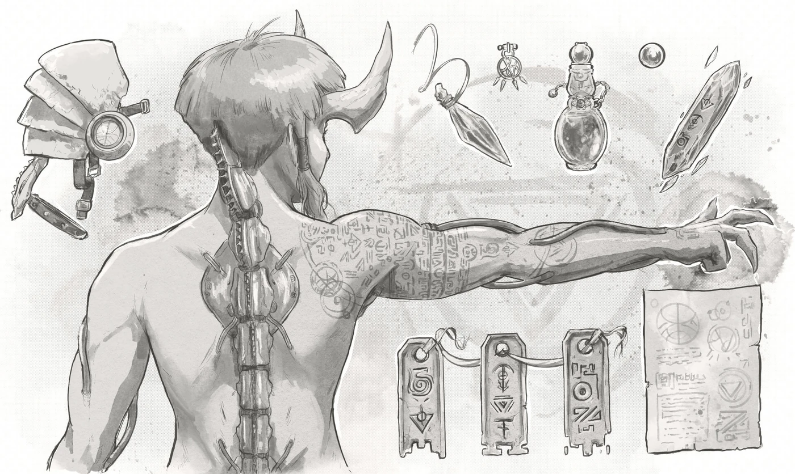
阿斯提爾的加裝件、回收與機體卡：導演筆記
導演筆記
加裝零件不一定得出自範例清單！儘管與玩家合作，設計獨特的加裝件，應付戰役與出擊的實際情況。
如果玩家反覆打造相同加裝件，可以考慮提供未來更有效率、甚至不需成本的取得方式。例如投入代幣在母艦建生產設施，或透過反覆製作發展出更精簡的流程。
原書目錄
Contents
原書目錄
以下頁碼沿用英文插畫版 PDF。網站另依主題分章；可由側邊目錄或搜尋直接前往。
- 主要概念：8
- 你是誰：8
- 對手是誰：8
- 你要做什麼：8
- 採取行動與擲骰：9
- 特質：10
- 扮演書：引導者與支援者：10
- 魔鎧與母艦：10
- 牽引：11
- 衝突回合與休整：11
- 時鐘：11
- 聚光：12
- 引力：12
- 危難：13
- 重擔：13
- 開始遊戲：14
- 搭建舞臺：14
- 威權：15
- 義軍：16
- 建立玩家角色：17
- 準備好遊戲：18
- 基本與特殊動作：19
- 基本動作摘要：19
- 挺過風暴：21
- 察言觀色：22
- 釐清疑惑：23
- 協助或妨礙：24
- 編織魔法：25
- 冷卻：26
- 交鋒過招：27
- 決定性打擊：28
- 倒下：29
- 團體動作：30
- 特殊動作摘要：30
- 率領出擊：31
- 子系統：32
- 支線劇情：33
- 休整場景：35
- 籌畫與準備：37
- 扮演書：38
- 奧術師：39
- 僭取者：42
- 典範：45
- 巫者：48
- 艦長：50
- 外交官：53
- 工匠：55
- 斥候：58
- 戲法：60
- 成長：61
- 士兵動作：61
- 對抗與階級：65
- 以交鋒對抗：66
- 以交涉對抗：67
- 階級：68
- 情境與特殊狀況：69
- 標籤與裝備：70
- 取得裝備：70
- 標籤：71
- I 階裝備：74
- II 階裝備：75
- 母艦與阿斯提爾：79
- 母艦：79
- 建立母艦：79
- 阿斯提爾：82
- 建造阿斯提爾：83
- 魔鎧額外配備：90
- 打撈魔鎧：90
- 魔鎧卡：90
- III 階範例魔鎧：92
- 衝突回合：106
- 威權結構：106
- 義軍結構：110
- 支柱：112
- 游離者：113
- 進行衝突回合：113
- 衝突成果：114
- 衝突場景：115
- 主持遊戲：120
- 目標：120
- 原則：120
- 導演動作：123
- 安全工具：126
- 開始與結束戰役：127
- 準備與結束聚會：128
- 建立行動者：129
- 敵人範例：130
- 阿斯提爾與亞登特：131
- 人物：132
- 生物與怪物：133
- 異界者：134
- 宿敵：135
- 設定與任務引子：135
- 可選規則：多方衝突：136
- 可選規則：世代衝突：138
- 任務引子：141
- 大混戰：141
- 中立地帶：142
- 護送任務：143
- 最後關頭：144
- 威權來襲：145
- 幽魂群島：146
- 概覽：146
- 新獵團：147
- 進步的面孔：149
- 幽魂群島的範例魔鎧：150
- 幽魂群島的範例裝備：150
- 概覽：151
- 奧術學院：151
- 大競賽時代：152
- 分裂大陸時代：154
- 奧術學院的範例魔鎧：155
- 奧術學院的範例裝備：155
- 睡夢沼澤：156
- 概覽：156
- 活死人：157
- 大地與太陽的兩面：159
- Palus Somni 的範例魔鎧：160
- Palus Somni 的範例裝備：160
- Valdemar 的冰原：161
- 概覽：161
- 晝夜平分：162
- 復辟：164
- Valdemar 的範例魔鎧：165
- Valdemar 的範例生物：165
- 附錄：166
- 風險與險境範例：166
- 術語與簡稱：167
- 魔法物件：168
- 魔法武器：169
- 版本紀錄：171
- 致謝：172
《Armour Astir: Advent》© 2019 Briar Sovereign。保留所有權利。未經明確事先許可，不得以任何方式重製、轉售或儲存本出版品。
主要概念
Main Concepts
主要概念：你是誰、對手是誰、你要做什麼
你是誰
在《Armour Astir》中，你們是反抗者、傭兵與革命者。你可能是一位引導者（Channeler），有能力且受過訓練，能操縱由魔法與金屬構成的人形阿斯提爾（Astir）；有些魔鎧的高度甚至是駕駛的十倍。你可能是透過虔誠侍奉取得力量的典範、在最黑暗的時刻訂下契約的巫者，或付出代價、把魔法奪為己有的僭取者。當然，你也可能更適合在魔法鎧甲之外生活：原受威權訓練、轉而反抗它的斥候；從小維修家鄉各種設備的工匠；或以團結各派勢力闖出名聲的外交官。
不論你是誰，你都代表某種事物。它可以是小團體、公司，甚至只是一種理念；這都統稱為義軍（Cause），你從中得到方向與指示。肯定還有其他派系參與對抗威權的鬥爭，與它們結盟可能符合你的利益，但義軍才是你的歸屬。
對手是誰
威權（Authority）的確切樣貌由全桌共同決定。一般而言，它是一個擁有龐大權力的專制團體，試圖控制並征服不肯服從的人。個別人物的動機不必非黑即白，但整體來說，威權應代表玩家願意反抗的事物。
和任何桌上遊戲一樣，先討論遊戲中想處理與想避開的主題、內容。邪惡有不同的程度與規模；對抗簡單明快、沒那麼隱晦的威權，與對抗更貼近現實、切身的壓迫同樣成立。
另外，除非你刻意不想發揮創意，否則它應該有個比「威權」更像樣的名字。
你要做什麼
遊戲通常在休整（Downtime）與出擊（Sortie）之間交替。休整時，你利用有限的空閒修理、休息、會面；出擊時，大家一起離開母艦，嘗試達成目標。一次出擊通常包含數個場景，像電影或影集那樣，分別界定一段行動；每個場景結束後，玩家的風險會清除。較大的目標稱作任務（Mission），通常需要數次出擊才能達成。
一次出擊可能是
- 出動保護母艦，抵擋襲擊者。
- 穩定或摧毀一件危險的魔法古物。
- 協調兩個反抗團體簽訂和平協議。
- 一兩次聚會能完成的事：短期目標。
一項任務可能是
- 擾亂一場重大軍事行動。
- 從威權手中解放一座城市。
- 把一條龍與其爪牙逐出這個地區。
- 可以明確拆成多次出擊的事：長期目標。
採取行動與擲骰
行動以「動作」處理：擲 2d6，再加上一項修正值，通常是特質（Trait）。六種特質代表角色的核心能力。
一般流程如下：
- 你告訴導演想做什麼，並在適當時敘述行動。
- 導演判斷適用的動作。
- 你擲 2d6，加上指定的特質。
- 導演判定並敘述結果，接著繼續遊戲。
結果
作為 PbtA 遊戲，本作把結果分為 6−（失敗）、7–9（部分成功）與 10+（完全成功）。通常每個動作都列出自己的 7–9 與 10+ 結果。大致而言，7–9 讓你如願，但伴隨缺點或代價；10+ 讓你如願，沒有額外後果。
多數動作不列出特定的 6− 結果。通常 6− 表示導演可以使出自己的動作，並自由決定它有多溫和或強硬；無論如何，多半不會對你有利。
優勢與劣勢
具有優勢（advantage）或劣勢（disadvantage）時，擲 3d6，分別保留最高或最低的兩顆。它們可以累加：若有兩個優勢來源，擲 4d6、取最高兩顆。優劣勢也會互相抵銷；兩個優勢加兩個劣勢，等同沒有優劣勢。有優劣勢時，必須先套用其他所有修正或變動，包括下述自信與絕境，再選擇保留的骰子。
裝備標籤與動作常會提供優劣勢；導演也可依情境合理給予。不論有多少優劣勢，一次最多擲四顆骰。
自信與絕境
你有時會以自信（confidence）或身處絕境（desperation）的狀態行動。自信時幾乎篤定會成功：把每顆擲出的 1 視為 6。絕境時則只剩一線機會奪下出人意料的勝利：把每顆擲出的 6 視為 1。
兩者都在優劣勢選骰之前套用。例如同時有劣勢與自信，擲出兩顆 1 和一顆 3，先把兩個 1 變成 6，再從 6、6、3 中保留最低兩顆，得到 9。
- 在絕境中行動並成功時，可以加深一項牽引。
- 以自信行動卻失敗時，可以鬆動一項牽引。
保留點
有些動作會給你保留點（hold）。通常只能花在提供它的動作上，該動作會列出一種或多種花費方式。花費保留點就直接發生效果，不需要再次擲骰。
例如基本動作「察言觀色」讓你花保留點向導演詢問當前情況。你不必為問題再擲骰，花點數就能問。但這些點數專屬察言觀色，不能花在其他同樣使用保留點的動作上。
特質、扮演書與魔鎧
特質
特質的數值介於 −3 與 +3：
- 抗逆（DEFY）：抵抗壓力、撐過逆境的能力。
- 洞察（SENSE）：解讀人物與情勢的能力。
- 交鋒（CLASH）：遠近戰鬥的本領。
- 交涉（TALK）：運用口語與文字的技巧。
- 才智（KNOW）：機智與靈巧的心思。
部分扮演書另有引導（CHANNEL），代表來自不同源頭的魔法能力。這是特殊特質，只有扮演書專屬的方法能使它升降，不能靠一般成長提高。
創角時可自由分配特質，但必須符合：
- 沒有任何特質高於 +2 或低於 −2。
- 特質合計為 +2。
之後可隨遊戲取得成長，獲得改善特質的機會。
扮演書：引導者與支援者
如同許多 PbtA 遊戲，你需要選擇扮演書（playbook）。它是一組構成角色基礎、界定你在世界中角色的動作與裝備；至少界定了遊戲事件開始前的身分。可以把它想成 RPG 的職業，或角色在世界中的工作。
本作有兩類扮演書：引導者主要透過引導、駕駛阿斯提爾參與衝突，支援者則主要透過其他方式貢獻。一般而言：
- 引導者被視為能使用魔法，具有用於「編織魔法」及其他魔法動作的引導特質。
- 引導者懂得移動與操控阿斯提爾；除非機體特別複雜，或以魔法鎖定特定使用者，通常找到任何一架都能操控。
- 引導者可用特殊動作「子系統」啟動魔鎧的零件。
- 除非另有說明，支援者通常不能使用魔法或阿斯提爾。
- 支援者改為擁有額外起始動作，以及母艦上的特殊艙室，為自己或團體提供好處。
- 支援者可用特殊動作「支線劇情」，在出擊期間探索與推進次要目標。
阿斯提爾與母艦
所有引導者起始都有一架自訂阿斯提爾。整支隊伍共用一艘母艦，既是家，也是交通工具。支援者會為母艦提供額外艙室，讓自己與大家受惠。詳見「母艦與阿斯提爾」。
牽引、休整與時鐘
牽引
牽引（Hook）是短句，界定角色如何行動、如何看待周遭的人與世界。它可能是對世界或盟友的信念、你想達成的個人目標，或主動肩負的職責。不論形式為何，它都會影響你的行動：有的牽引把你拉向新事物，有的則是你努力想掙脫的束縛。所有玩家創角時都應寫下三項牽引，不必擔心不夠完美；遊戲中可以改動，能否改動則取決於牽引有多深。
通常只有規則提示時才能改動牽引，例如休整場景或你擁有的動作。有時牽引也會被加深或鬆動，主要來自在絕境或自信中行動，以及「倒下」。
- 鬆動的牽引：隨時可改寫。
- 一般牽引：動作或休整場景提示時可改寫。
- 深刻的牽引：即使規則提示、甚至強迫，也不能改寫；將它劃去時，以自信行動。
鬆動的牽引加深後回到一般狀態；深刻的牽引鬆動後亦然。
消耗牽引
當你採取的行動，要求你犧牲、超越或以其他方式結束一項牽引時，永久劃去它。你可立即取得一次成長；若該牽引深刻，還可帶著自信行動。
衝突回合與休整
聚會之間，威權與義軍的戰況不會停在原地。衝突回合（Conflict Turn）中，大家一起演出衝突場景，以角色扮演的片段互相提出挑戰，再判斷哪方能選擇成果，藉此決定更大範圍的戰局。
之後回到原本的角色，進入休整。利用類似的休整場景休息、恢復、修補出擊造成的損傷，再次投入危險。
代幣
代幣（token）是休整期間取得與使用的敘事資源。進入休整時獲得，結束時未花掉的全部失去，所以盡量花！
你會花代幣參與其他玩家的場景，為自己取得好處。每次休整預設獲得兩枚；若干扮演書動作與其他來源會提供通用或限定用途的額外代幣，記得留意。
時鐘
時鐘（clock）衡量目標或事件的進度，通常依複雜度等因素分成四至八格。填格的條件依時鐘而異，例如休整場景中可以工作，推進計畫時鐘；但共同點是：填滿時，某件事便會發生。
除計畫時鐘外，時鐘通常主要由導演處理。它們很適合追蹤目標進展、製造時間壓力，或達成其他類似用途。
聚光與引力
聚光
每當你動作失敗，也就是結果為 6 或以下時，可以取得一點聚光（Spotlight）。累積六點後，可隨時花掉，站上舞臺中央，立即取得一次成長。接下來不論要做什麼，都可以立刻以自信行動。
引力
引力時鐘（GRAVITY）代表你與個人、群體的關係與牽絆。它不是衡量某人多愛你、多恨你，而是倒數這段關係何時會遭遇挑戰、被正視或加以處理。確切形式由你與另一方決定：承認希望關係改變、承諾維持現狀，或接受這段關係應該結束；但必須是重要的事。引力不必正面，既適用於命運多舛的戀人，也適用於一再於戰場碰頭的宿敵。如果宇宙彷彿經常把兩人拉在一起，那可能就是引力。
引力時鐘有六格，起初為空。它由兩名玩家共享，或由玩家與導演共享，後者代表導演的角色或派系、群體。時鐘代表彼此的關係與對彼此的看法。推進時，所有相關者共享同一次進度；你只在共同時鐘上填一格。
不必對每個遇見的人建立引力；請留給想在遊戲中聚焦探索的關係。因此你同時最多擁有三個引力時鐘，若有宿敵，還可額外與宿敵共享一個。與導演的行動者、派系或群體建立時鐘，就是告訴導演：你希望經常與他們互動。
建立時選一個詞或短句概括關係，數值設為 +1。每當你做出涉及另一方的動作，可以改加這個時鐘的數值，取代原本的特質或數值；若如此做，推進時鐘。你可在覺得合適時建立新時鐘。
填滿引力時鐘
相關玩家有三種選擇：
- 重新定義關係：可以取得一次成長，建立新引力時鐘，並將數值提高 1，最高 +3。
- 承諾維繫關係：數值提高 1，最高 +3，並可取得一次成長。圈起已填滿的時鐘，不可再推進。當你採取結束這段關係的行動，例如為所愛犧牲，或背叛效忠之人，視同擲出 10+ 而成功，然後永久劃去此時鐘。
- 放棄關係：可以取得一次成長，擦去引力時鐘，空出位置建立新關係。
變化不必在填滿的當下立即演出，但應在本次出擊，或即將到來的休整場景中呈現。
一場聚會中，時鐘原則上可推進任意次數。若推得太快，或長期遊戲希望成長更平穩，導演可限制，例如每個時鐘每次聚會只能推進一兩次，或把所有時鐘改為八格。
圖例關係：緊張的朋友（+1）、命定戀人（+3）、熱切的宿敵（+1）、追求同一個男孩（+2）、疏遠的手足（+2）。
危難與重擔
危難
有二十呎長的劍和魔法槍械在場，受傷通常不會太輕。幸好，本作角色相當有能力保護自己——直到某個限度。問題、干擾或危難累積太多，你便可能變得毫無防備（defenceless）。
對玩家而言，毫無防備代表慣常避免傷害的方法不再可用。平常可用「交鋒過招」或「挺過風暴」避開攻擊與真正的後果，現在卻不行：防線崩潰、裝甲破洞，等等。毫無防備時，只要有人或某事試圖傷害你，就必須擲「倒下」。
妨礙防禦的危難（danger）分成兩種。風險（risk）是出擊期間就能解決的暫時問題，例如處於低處、著火、分心。險境（peril）是較長久、必須在休整處理的問題，例如你或魔鎧受重傷、心碎、精疲力竭。你的危難也算魔鎧的危難，反之亦然；就各種規則而言，魔鎧都是你的延伸。角色可承受一定數量的兩類危難，之後便毫無防備：
- 玩家、宿敵與主角級角色：三項危難。
- 配角級角色：兩項危難。
- 臨演級角色：一項危難。
動作或效果要求「承受風險」或「陷入險境」，就是給你一項對應危難。有時會明定內容，例如「承受風險（寡不敵眾）」就是在角色卡加上這項風險。沒附括號時，表示你可選擇風險或險境的內容。一般而言，要求你承受風險時由你決定，讓你陷入險境時由攻擊者決定。不論哪種情況，都可以和導演討論。
書末列有範例。毫無防備應該明顯可見，但單一風險或險境不一定要那麼明確。有時風險直接繫於暫時的情勢，而不是動作效果。最常見的是突襲或從隱蔽處攻擊：情勢使對手承受風險，但你一現身，這項風險便不再相關。臨演級行動者一項危難就會暴露破綻，因此可從隱蔽處對它「決定性打擊」；換成其他人，就沒那麼容易了。
若已有三項危難又承受風險，把其中一項換成險境。若已有三項危難又將陷入險境，有風險可換就換掉一項；否則擲「倒下」，且直到本次出擊結束，擲「倒下」時都在絕境中擲骰。之後再獲得危難，直接觸發「倒下」。
重擔
與風險、險境相對，重擔（burden）只要妥善照料，本身不會使你陷入危險。進入休整時，每項重擔都要丟棄一枚代幣，並描述它需要什麼維護或關注。若不幸累積三項重擔，你會失去自己的休整場景，因為義務必須優先處理。其他玩家若願意，仍可給你代幣照常使用。
重擔可能是長期傷病，也可能是需要定期關注的社交處境或職責。例如外交官必須向上級報告，工匠則可能堅持親自維護全艦組的魔鎧。
重擔主要來自「倒下」及部分扮演書動作。
風險與險境範例
Risk & Peril Examples
附錄：風險與險境範例
風險
- 分心：某件事抓住目光，十分干擾。也許可以拉開距離，整理思緒？
- 遭鎖定：飛彈鎖定！快閃！能反制鎖定系統的魔法，或在自己與飛彈間找遮蔽物嗎？
- 被壓制：壓制火力讓你無法前進。也許可以幹掉對方，或找掩護。
- 著火：魔鎧起火，突然熱得要命。找水，或用其他方法滅火。
- 流血：這傷口不輕；包紮，或試著以魔法閉合傷口……
- 冰冷：好冷！你或魔鎧滿身寒霜。想辦法升溫，或敲掉越結越厚的冰。
- 心猿意馬：愛能在戰場開花嗎？你很期待，但也許只需要一分鐘冷靜。
- 害怕：坐進魔鎧有時很可怕。也許有人能安撫，或你得面對恐懼。
- 系統紊亂：魔鎧系統被干擾、錯位等。可用魔法校正，或手動拆開修理。
- 生氣：剛才真是太險了！你氣得要命。可以除掉令你惱火的對象，或試著離遠一點。
- 毫不知情：根本不知道他們衝著你來！幸運的是，這個風險大概很快會自行消失……就在攻擊打中你的時候。
險境
- 精疲力竭：已經油盡燈枯，除非好好休息，否則很難改善。
- 負傷：不只是小瘀青、小割傷，需要真正的醫療照護。
- 肢體折斷：不論屬於你或魔鎧，都得妥善治療；魔鎧可能還得換零件。
- 被貫穿：最好先別拔。雖然礙事，拔出來只會更糟……
- 暴怒：某件事真的刺中你了。怒氣不會隨眼前火氣消退，需要時間處理。
- 壞名聲：你在某人或某群體心中的聲譽大受打擊；在努力修復前，會持續惹麻煩。
- 墜入愛河：愛真的在戰場開花，而且把你套牢了。有幾種方法可以解決。
- 燒毀：過熱燒壞魔鎧內部、摧毀零件，需要實際的內部維修。
術語與簡稱
Glossary
術語與簡稱
| 術語 | 說明 |
|---|---|
| 出擊（Sortie） | 玩家離開母艦，以目標為導向戰鬥、偵察或採取其他行動的一段時間。 |
| 任務（Mission） | 需要多次出擊才能達成的較大目標。 |
| 戰役（Campaign） | 完整的一場本作遊戲，由數項任務組成，以某種方式解決核心衝突後結束。 |
| 特質（Trait） | 六項涵蓋角色能力、用於動作的數值。 |
| 引力（GRAVITY） | 衡量角色對另一人的欣賞與理解。 |
| 義軍（Cause） | 你與同伴反抗威權時所代表的團體。 |
| 威權（Authority） | 遊戲中主要的對立團體。 |
| 危難（Danger） | 使你更易受到身體或其他傷害的效果，分為較輕的風險與較嚴重的險境。 |
| 毫無防備（Defenceless） | 遭受身體或其他傷害威脅時，必須擲倒下。 |
| 路數（Approach） | 凡俗、奧術、神聖、褻瀆、元素五種。交鋒過招及決定性打擊時，可能帶來自信或絕境。由扮演書、阿斯提爾或亞登特決定；有些武器自帶路數，選用該武器時取代平常路數。 |
| 標籤（Tag） | 可輕易加到物件或角色上的簡短註記，提供敘事或機械資訊，增加細節與自訂空間。 |
| 武器（Weapon） | 用來傷害別人的東西，不論原本是否為此設計。 |
| 裝備（Gear） | 除了拿來敲人頭之外，任何有用的器材。 |
| 構裝體（Construct） | 魔法驅動的機械或載具。通常須由引導者駕駛並供給魔力，也有自動機。亞登特、使魔、阿斯提爾魔鎧都屬此類。 |
| 阿斯提爾魔鎧（Armour Astir） | 強大的附魔構裝體，通常至少二十至三十呎高，必須由引導者駕駛並供給運作魔力。就是機甲，你知道的那種。 |
| 亞登特（Ardent） | 比魔鎧更小、更簡單的移動構裝體。有些需要駕駛或操控者，但任何有技術者都行；有些有自己的生命。可以是機械坐騎、魔法坦克，或更多形式。 |
| 使魔（Familiar） | 小型自主構裝體，在狹窄專門領域協助主人，像無人機或浮游砲、感應砲。 |
| 秘器（Artifact） | 魔鎧的一部分，可透過子系統啟動，在擲骰前或後為一次擲骰提供優勢。 |
| 優勢（Advantage） | 多擲一顆，取最高兩顆。 |
| 劣勢（Disadvantage） | 多擲一顆，取最低兩顆。 |
| 自信（Confidence） | 將任何骰出的 1 視為 6。 |
| 絕境（Desperation） | 將任何骰出的 6 視為 1。 |
| 過熱（Overheating） | 由特定動作造成與移除，通常也像風險一樣在場景結束時清除。 |
版本紀錄與致謝
Release Notes & Credits
版本紀錄
v1.5：大幅翻新
- 移除「蠱惑言詞」與「決鬥魔法」，因為「古典施法」實質上做的是同樣的事；新增一個戲法取代。
- 新增不靠監聽站也能以場景推進計畫的選項；釐清魔鎧打撈與更多衝突回合措辭；主書再加一個任務引子。
- 範例設定移至 Scenario Samples！
- 新增多方衝突與世代衝突可選規則，取代典型威權對義軍架構。
- 主要概念增加幾項指引。
- 又把設定搬回主書。我就是拿不定主意。還另外新增了一個！
v1.3：春季大掃除
- 釐清衝突回合與休整時，對部門實力擲骰的差異，以及原因。
- 釐清交鋒過招及其如何推進引力時鐘。
- 釐清階級，以及「剋敵／毀滅」標籤對更大階差的影響。
- 釐清各扮演書起始動作數量的措辭。
- v1.31：衝突回合的小修正與說明。
v1.2：失寵修正
- 修正衝突回合兩處對部門因失寵遭撤換的描述不一致。新作法整合兩者，形成更有趣的系統。
- 修正全文其他細微矛盾與文法錯誤。
v1.1：標籤重製
- 依價值重新整理標籤，不再只分機械與敘事。
- 修改部分戲法。
- 某些標題變得更大。
- 為購買、取得裝備提供真正按價值計算的規則。
- 修訂部分扮演書起始裝備。
- 起始特質總和降為 +2，但給支援者能額外 +1 的艙室選項。
- 依新標籤成本重新平衡許多魔鎧武器。
v1.0：正式發行
- 大幅重製衝突回合，主要見衝突場景，以及已改稱「支柱」的地區。
- 配合上述變動更新籌畫與準備。
- 微調「煉金套組」，避免大量防護疊加；也微調其他魔鎧零件。
- 讓艙室更強！支援者沒有魔鎧，這樣才公平。
- 補充階級，以及使用武器或其他具有規格資料事物攻擊的說明；也補充使用低於自身階級物件的說明。
v0.8：「大多是小修改，但我想提高版本號」
- 進一步釐清衝突回合。
- 小幅調整扮演書。
- 加入額外插畫。
- 所有衝突場景新增第三種結局。
- 為「論辯」增加選項。
致謝
作為 PbtA 遊戲，《Armour Astir》自然深受 Vincent Baker 與 Meguey Baker 的《Apocalypse World》啟發。謝謝你們教我失敗也能推進故事，真棒。此外，新版衝突回合也深受《Mobile Frame Zero: Firebrands》影響。
其他設計靈感包括 Jeremy Keller 的《Technoir》、Hamish Cameron 的《The Sprawl》、Brendan Conway 的《Masks》、Stras Acimovic 與 John LeBoeuf-Little 的《Scum & Villainy》、Takuma Okada 的《We Made Them Look Like Us》、Dusty De Leon 的《Tendencies: Spirits & Glamour》，以及無數其他作品。世代衝突可選規則深受我喜愛的 Ben Robbins 作品《Microscope》啟發。
也非常感謝 Treehouse Discord 的成員，你們回答的問題、協助我把文字推向正確方向的次數，多到我數不清。你們與你們的作品每天都給我靈感。
特別感謝
感謝 Friends At The Table 的成員。在太多個漫長的 Pathfinder 夜晚之後，你們重新點燃我對桌上角色扮演的熱愛。沒有你們，就沒有這款遊戲。
也感謝 Abnormal Mapping 的 Em 與 Jackson。若沒有 Great Gundam Project，我不會有能量持續看下去，而我很高興自己看了。我愛那些帥氣機器人。
向讓我視為家的 Discord 伺服器致意。謝謝你們敞開大門，讓我有家的感覺。很高興認識你們，即使你們會在凌晨三點讓我頭痛。
感謝伴侶 Dusty，總是促使我思考設計，以及我為什麼如此創作。你是我最大的靈感、我認識最有趣的人，也是合作過最棒的 GM。我愛我們一起說的故事，幾乎就像愛你一樣。
最後絕對不能漏掉摯友 Thursday！我不可能要求更好的朋友，也永遠很高興，知道我的設計工作為你對機甲的熱愛注入多少能量。
其他
製作本作期間，我也享受以下作品：
- Podcast：The Shrieking Shack、Waypoint Radio、Emojidrome、Film Critters、The Magnus Archives、Hold This L、Borat Club、Just King Things、A More Civilised Age、Night Clerk Radio。
- 書籍／漫畫：Delicious In Dungeon、Dead Dead Demon's DeDeDeDe Destruction、Dorohedoro、Ancillary Justice／Sword、Consider Phlebas、Player of Games、Little Teeth、Men Women & Chainsaws、《From a Certain Point of View (The Empire Strikes Back)》約四分之一、The Honjin Murders。
- 遊戲：Dragon's Dogma: Dark Arisen、Risk of Rain 2、Path of Exile、Disco Elysium、Outer Wilds、Timespinner、Battletech、Umurangi Generation、Destiny 2、DUSK、Resident Evil 2 Remake、Resident Evil 7、Resident Evil Revelations。
- 電視／電影：Dirty Pair、The Tatami Galaxy、Us、Get Out、Armored Trooper VOTOMS、Nichijou、Midsommar、Raw、Ghost in the Shell: SAC、Night Is Short, Walk on Girl、Hardware、Nosferatu the Vampyre、Pontypool、Parasite、Kamen Rider Kuuga／Agito／Faiz／Blade／Hibiki／Kabuto／Ex-Aid／Build／Den-O／Revice、Riverdale、What We Do in the Shadows。
字體
原書使用 Gentium Book Basic、Tw Cen Mt、Scheherazade、Poor Richard、Perpetua、Centaur、Berry Rotunda、Liberation Sans、Liberation Sans Narrow、Liberation Serif。
作者簡介
Briar Sovereign 是居住英國的跨性別、非二元遊戲設計師與作家。他喜歡機甲、魔法與假面騎士；遺憾的是，本書只有其中兩樣。
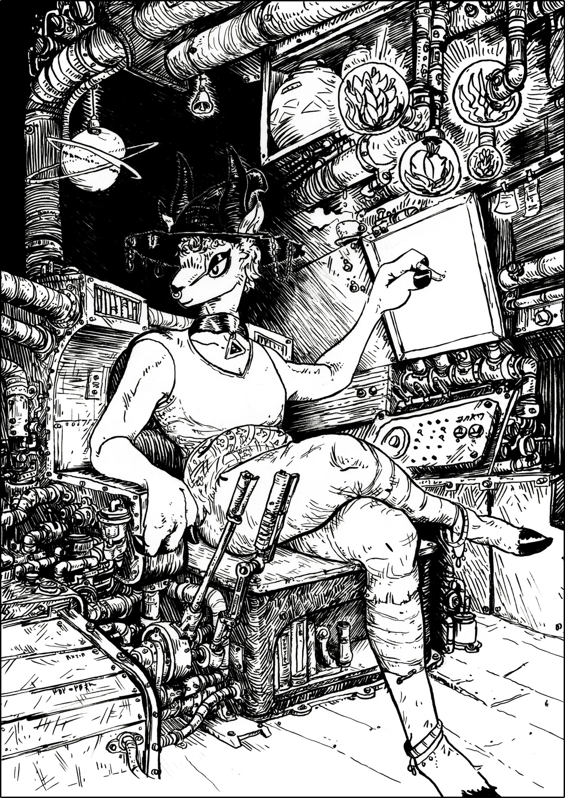
封底：反抗威權
《ARMOUR ASTIR: ADVENT》是一款高奇幻角色扮演遊戲，主題是反抗企圖控制你的威權。
宿敵駕駛鋼鐵魔鎧交鋒，士兵在逆境中奮戰，間諜與外交官讓世界朝自己希望的方向轉動。這不是講究周密準備或愉快休戰的遊戲；不願冒險，就很難改變世界。
扮演魔法機甲駕駛或支援艦員，與全桌一起充實專制威權，再建立將它推翻的義軍。
本作是獻給機甲動畫與奇幻作品的情書，使用易於上手、以敘事為核心的形式，重現經典機甲作品的氣氛與節奏，同時不犧牲精彩動作場面。
- 四份引導者扮演書：駕駛自訂魔鎧投入戰場的魔法機甲駕駛。
- 四份支援者扮演書：專長在戰場之外的工程師、間諜與外交官。
- PbtA 規則，加上動態身體與社交衝突的新系統。
- 衝突回合拉遠鏡頭，以敘事場景描繪變動戰局。
- 可選系統，支援多方衝突，以及跨越不同年代、世代的戰役。
- 四個任務引子範例，迅速建立出擊。
- 四個設定引子範例，具備完整義軍與威權，可直接展開戰役。
［譯註：以上保留原封底文字；本版本正文實際列出五個任務引子。］
配套文件版本差異
Companion Version Differences
配套文件版本差異
本站正文依《ArmourAstir_af_illus》英文插畫版。以下保留配套文件中具有不同效果、門檻或適用範圍的文字；這些不是本站追加的能力，也不與正文效果疊加。來源檔未必標明先後順序，因此不僅憑差異就斷言哪份比較新。
解放：重擔帶來什麼
| 來源 | 效果 |
|---|---|
| 角色卡第 4 頁 | 只要你有重擔，「交鋒過招」與「決定性打擊」有優勢。取得動作時若沒有重擔，可以取得一項。 |
| 核心書第 43 頁 | 每有一項重擔，可讓一項特質 +1；透過「解放」取得的提升不受通常 +3 上限限制。 |
角色卡英文名為 Let Loose。兩者給的收益不同，不能同時當成同一個動作的效果。
奧術發電機：引導與造物
| 來源 | 效果與差別 |
|---|---|
| 角色卡第 16 頁 | 裝置運作時可為阿斯提爾供能並操控；未明列有效引導 +1。汲取能量製造持久物品時擲 +才智，10+ 可花幾分鐘造出大如塔樓或複雜如鎖的物品。 |
| 核心書第 56 頁 | 明列實際上具有 +1 引導；10+ 製造一個物品，越簡單可越大，例如小而複雜的時鐘，或大而簡單的牆。 |
角色卡英文名為 Arcane Generator。兩版的 7–9 皆選一項：成品脆弱；魔法回饋使下一個擲 +引導的人有劣勢；或工作耗神，承受險境（精疲力竭）。相同分支不重複建立另一套動作頁。
次要部門：3+ 還是 4+
| 來源 | 標準實力 |
|---|---|
| 《Reference_Sheets》第 6、10 頁 | 主要部門 5+；次要部門 3+。 |
| 《AAA_ConflictTurnRef》第 1、4 頁 | 一個主要部門 5+；兩個次要部門 4+。 |
| 核心書第 106、113 頁 | 標準為主要部門 5+、次要部門 4+；其他效果可能暫時調整。 |
網站 GM 流程採 4+。綜合參考表第 6 頁另用「高於／低於實力」的簡寫；本站依核心書第 113 頁，以達到或超過實力為義軍成功，不留下等於門檻時的空白。
衝突勝負與平手的簡寫
《AAA_ConflictTurnRef》第 4 頁寫「擲出成功次數最多的一方」獲勝，並由玩家選擇平手的處理方式。這是該表的措辭；核心書第 114 頁則明確比較成功與失敗次數，平手時共同詮釋，不確定才擲硬幣。網站的主持速查採後者。
聚光給予自信的範圍
《AAA_RulesReference》第 2 頁的摘要寫：花六點聚光取得成長，若取得一個動作，可以立即以自信使用它。核心書第 12 頁的範圍較廣：取得成長後，接下來不論要做什麼，都可立刻以自信行動。網站採核心書措辭。
簡表省略，不代表改規則
- 綜合參考表第 10 頁把「已有三項危難又承受危難」列入不利來源，省略了危難替換的分支及只對「倒下」適用的絕境條件。請用擲骰狀態來源速查與核心書第 13 頁判定。
- 角色卡一般印三格危難；這不會取消艦長等能力的特殊條文，見欄位指引。
這是本次核對到的差異與摘要省略，不宣稱已證明所有配套文件逐字一致。免費基本版主要是同一核心規則的另一排版，未發現需要另立擴充章節的獨有規則；詳見資源翻譯盤點。